著／入間人間 イラスト／フライ
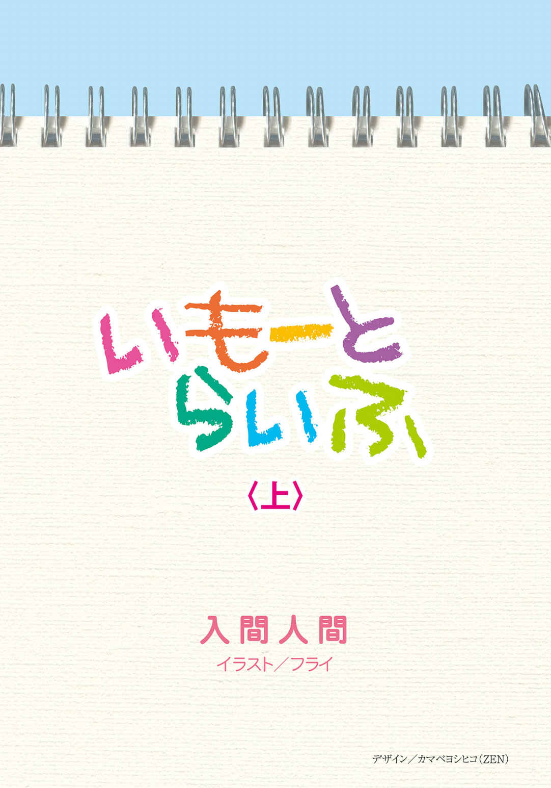 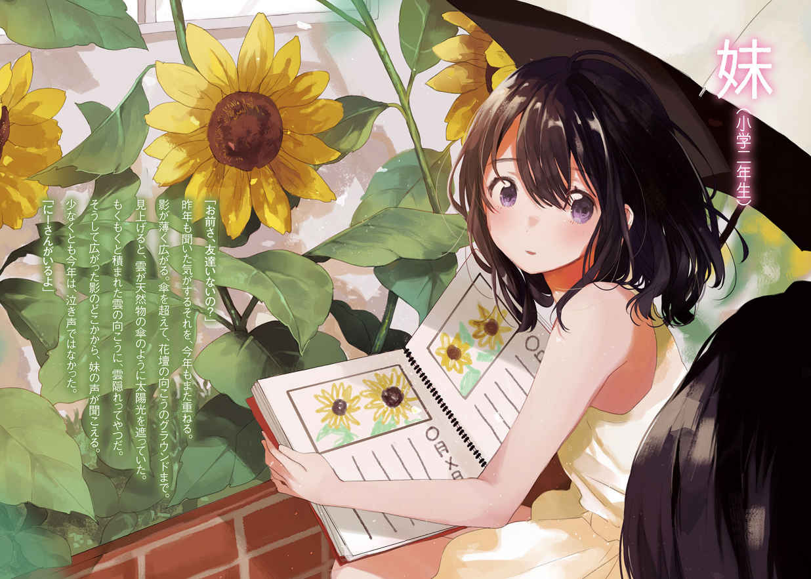 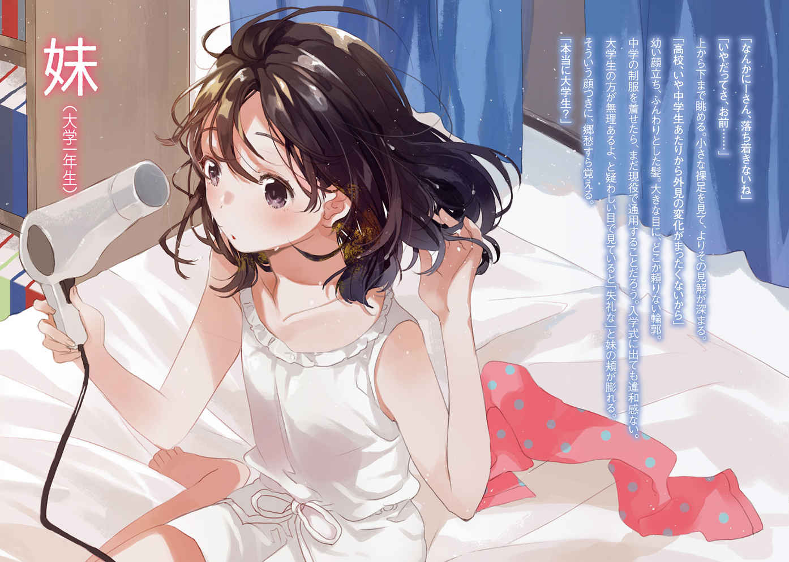 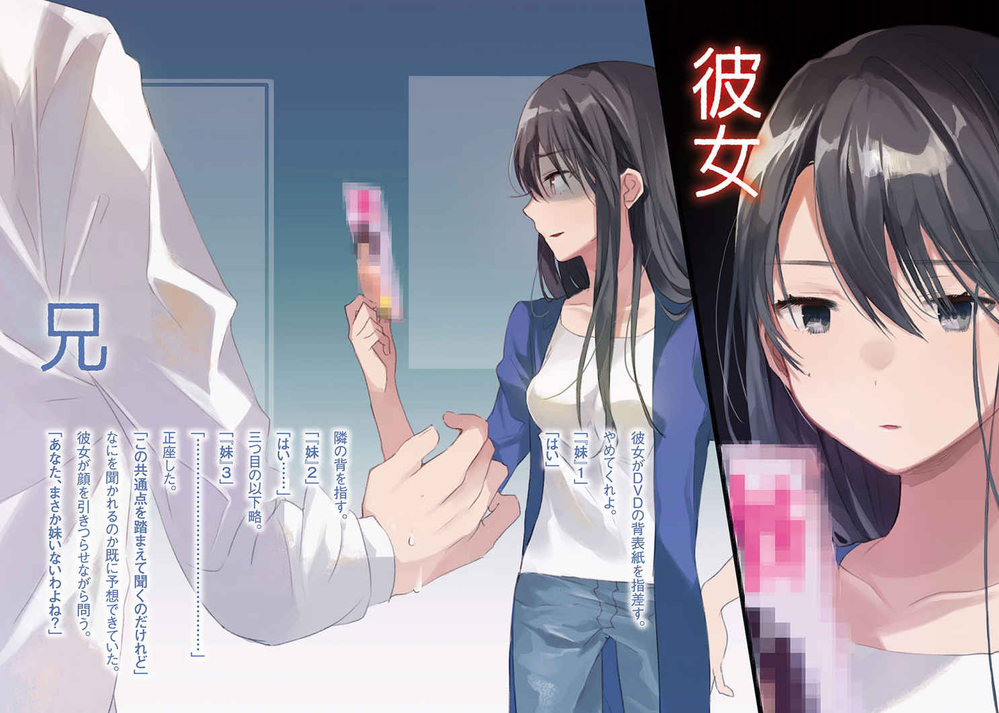 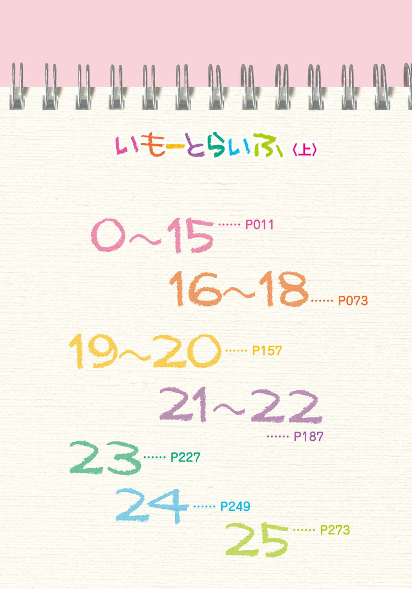一生を誰かやなにかに捧げたとか、そういう話ではない。
人生はどこまでいっても自分のものでしかなくて、だからどんな選択をしても、
どれだけ良い思いをしても重たいものがのしかかってもそれは全部、俺の得たものだ。
だから妹が楽しそうに笑っているなら大体のことが
「ま、いいか」と思えるようになったのも、そういう生き方なのだろう。
そしてその迂器なほどの気楽さが自分の一生を左右することになることに気づくのに、
ど長い時間が必要だった。
気づいたところでもはや手を加えようがないほど世界は構築されて、
俺たちはそのまま生きていくしかなかった。
これはそういう話だ。
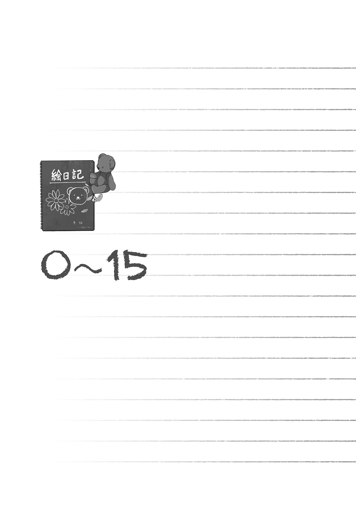妹が生まれたとき、俺は三歳だった。その日のことは覚えているし、妹の誕生日というものを忘れることはないのだろうと思った。妹が生まれたのは二月十四日だからだ。
その日の前後は記録に残るほどの大雪で、丁度妹の生まれた日だけが晴天だった。深々と道や屋根に積もった雪に大人たちが
俺は妹がどういうものかよく分かっていなかった。血が
ただ家に一人、新しいやつが住み着く。いつかは自分の部屋が狭くなる。
分かるのはそれぐらいだった。
生まれたばかりの妹を見に行くことはなかった。騒々しいガキを病院に連れて行くというのはうちの両親の判断ではあり得ないことだった。初めて妹を見たのは生まれたという日から六日
そうして母親に抱かれた妹との初対面を迎えて、最初に感じたのは頼りなさだった。保育園に預けられる赤子よりもずっと小さく、Ｍ字ハゲで
言い方は悪いけれど、妹と俺が同じ生き物には思えなかった。
全体として
その頃の妹について知っているのは、寒いのが苦手だということだった。
雪を避けて生まれてきたからだろうか。三歳の頃だったか、また雪が多く降った冬に
俺は自分より一層小さいやつとどう接するのか分からなかったし、妹は俺よりも両親に
子供部屋も当初は俺と同じ部屋にするつもりだったのだろうけど、妹は両親に、特に母親にべったりだったのでそういう流れに行き着く機会を見失っていた。俺としては部屋を一人で使えるのが
俺たちはお互いに
そんな風に関係すらほとんど構築されないまま、お互いに
妹が俺に泣きついてきたのは、あちらが六歳で、こちらが十歳のときだった。
八月末、夏休みも終わりが見えて、日の沈む時間が
そうして扇風機の前に陣取って蚊に刺された箇所を
珍しく
そこに夏休みの記録というものはなかった。うわぁ、と真っ白なページを指でなぞる。
絵は真っ白、月日も空欄。ノートの向こうを
「夏休みの宿題？」
聞いてみると、妹が小さく
最初の三日ぐらいしか書かれていなくて残りは白紙だった。俺はこのとき、
「お前、今までなにやってたの？」
責めるわけではなく、夏休みをどう過ごしたか興味が湧いての質問だった。そんなに時間を惜しむほどなにかに熱中していたのか、と聞いたつもりだった。でも妹としては
二階の部屋まで上がってから、「泣くな泣くな」と腕を振って奮起を促すと妹も鼻水をすすってなんとか耐えた。
間に置かれた絵日記帳と、落ち込む妹を交互に眺める。妹を意識して見つめるのは、生まれたこいつが母親に連れられてきて以来だ。あのときに感じた頼りなさはそのままに頭だけ大きくなった、そんな風に感じる。垂れた長く、黒い髪はウサギが耳を落としているようだった。
放っておくとすぐに泣き出しそうなその目もとは見ていて、気持ちのいいものではない。こっちまで
俺は別に責任感なんてある方でもないから、普通ならさっさと逃げる。
相手のことなんて知ったことか、とも考える。
けど、今はそれができない。妹を見ていると、そいつが無理な話になる。
理由や根源にあるものは把握できていない。けれど。
なんとかしてやらないと、という気になった。
本能的に生き物が持つ連帯感というか、血の
絵日記帳を取る。一応書かれている最初の三日間に目を通すと、家の中の出来事が言葉少なに書かれていた。絵の中心にはいつも母親がいて、ひらがなが多くて読みづらい日記には母親が家事を丁寧にこなすさまが記されている。○○しました。○○しましたと同じ言葉が続いて、それだけだった。それに対する感想も特にない。そんな内容が三日続くだけだった。
二日目の絵には一応、俺もいた。右隅に顔半分だけが映っていて本当に俺か確信を持てないが、その扱い方として妥当なのが自分しかいなかった。俺への言及はまったくなくて、視界に入ったからたまたま書いた、といった程度らしい。俺と妹の関係を的確に表していた。
そして日記は同じ内容を薄めて広げて、三日で終わる。その続きはない。日記は家の中の記述に留まり、外へと出て行くことはなかった。家の中を書いて引き伸ばすのが三日で限界を迎えたといった
「お前、友達いないの？」
つい不用意に尋ねてしまう。それを受けた妹の
手のかかるやつだと思ったし、正直、ちょっと面倒くさくもある。
しかし見捨てることができないのは、重々承知というやつだ。
「手伝ってやるよ」
妹にそう言うと、今にも垂れそうな涙を目尻がすくい上げて、顔を上げる。
髪が持ち上がったせいか影も薄れて、表情に活力が宿る。分かりやすいやつである。
でもこんなギリギリになってから言うなよ、と今度はこっちが頭を抱えたかった。
四十日近い分の日記を
少し考えた末、天気をここに書くのは
字はいくらなんでも俺が書くとばれるし、漢字の学習具合も異なる。日記の方は妹に任せて、俺は絵を担当することにした。三日分は妹が書いているので少々タッチが異なるだろうが、そちらまで手直ししたらこの絵日記は一切合切が
でも妹はそう指示されても、泣きそうな顔で俺を見るばかりだ。「かくことない」と弱音を吐くときはいやにはっきりしていた。やっぱり書くことがないから続きを書けなかったみたいだ。
「
腕を組んで壁を
妹の肌の白さじゃあ、
「しょうがねぇな……じゃあまず、俺と遊んだことにしよう」
ほぅほぅ、とばかりに妹が
視線がいつまでも注がれているのが辛くて、時間
「考えるからさ、先に天気だけばーっと書いちゃえ」
それぐらいは妹だけでもできるだろう。妹は小さく
ヨ○ハマ○イヤに口の大きさが似ている。
次の悲しい顔は、目の落ち込み方がさっきまでの妹にそっくりだった。
つまり、俺は見たことないのだけど、妹は笑うとこの絵みたいな顔になるのかもしれない。
我が妹ながら、それはどうなんだろうと悩んでしまった。
閑話休題。
日記の内容を全部考えて、絵もこの流れだと俺が描くことになりそうで。こんな調子では今日どころか明日、
俺だけ、少し早く夏休みを切り上げてしまったようで。
妹の方はばたばた手を動かしているけどなにも考えていないのだろう。その証拠に妹は今日の天気ににっこりマークを記した。
本人は泣いてぐずっているのにいい加減なものだ、と
廊下の窓に目をやると、薄い雲を貫くような陽光が向かいの家を焼いている。
夏休みは終わるが、夏はまだ続いていくようだった。
湯水のように
俺たちの間に生まれたその
妹が残りの日の天気を書くのを、黙って、離れることなく見守る。
これが兄というものか、とその据わりの悪さに尻が浮く。
そしてこれが妹というものか、と目の前のそいつをまじまじ見つめるのだった。
夏休みが終わって二週間。妹はその日も俺と同じ部屋にいた。ここが俺の部屋から子供部屋というものになってしまったから、それが当たり前となったのだ。二学期の始業式から帰ってきたら妹の机なりベッドなりが運び込まれていたので反対する間もなかった。
両親が強引に
妹は俺より手間がかかるやつだ。それが分かっているからだった。
絵日記偽造の苦労を思い出す。本当に三日ぐらいかかって、最後の方はこっちも日記に書くことを必死に考えすぎて
学校から帰ってきた妹はランドセルを机に置いた後、なにをするでもなく座り込んだまま、ぼぅっとしている。ちゃんと見るようになって気づいたけれど、その座り方が変わっていた。椅子の上に体育座りのように腰かけて、そしてその椅子と足の裏の間に手を挟む。挟まれた手の甲が動く度、身体も
その妹が視線に気づいて、こちらを向く。
「にーさん、なぁに？」
聞く度に耳の裏側をくすぐられるようだった。
「んー別に」とごまかして、机に
夏休みの宿題を手伝って以来、妹はそう呼ぶようになった。それまでは名前どころか話しかけられたこともほとんどなかったので、少しは
でも『にーさん』と『妹』になっただけで、愉快に遊べる相手となったわけでもない。同じ部屋にいても会話が弾むようなことはなく、俺としては宙に浮かぶ、大きな泡の塊を意識するようだった。まぁつまり、異物だ。柔らかく、そして
妹は
また手伝わされるのも
「宿題は？」
「あとでやる」
こちらを
妹の横顔を見て、それから時計を確かめる。俺たちより時計の秒針の方が音を立てている。晩ご飯まで時間があるので、先に宿題をやってしまうことにした。今はないが、もしかすると後でなにかやりたいことができるかもしれない。そのときに宿題が残っていると
それを生真面目と捉える大人もいるみたいで、案外評判はいいのだった。誤解だが、高く評価されるなら訂正の必要もない。結果として宿題をこなしているのも事実なのだから。
そうして漢字ドリルを始めると、
相変わらず鉛筆をしっかり握っていて、筆圧が強いんだろうなぁと横目で眺めた。
「後でやるんじゃなかったの？」
「にーさんのまねするの」
妹が計算ドリルから目を離さないまま答える。なにを言っているのかと、少し考えた。
「なんで？」
「にーさん、にっきかくの上手だから」
妹の返事は端的で、説明不足で終わってしまう。それでも返答から理解してみるに、妹も絵日記の件は反省しているようだ。それで俺みたいに書けるようになりたい、ということらしいけどあれは日記というより創作絵本みたいなものだ。よい子は
「にーさん度をあげると、できるようになりそう」
なんだそりゃあ。聞いたことのない基準が妹の中にはあるらしいが、いきなり出されても困るのだった。そもそも、妹がにーさん度なるものを上げてどうするのだ。妹はいもうと度を上げるべきじゃないか。
よく分からないけど、妹なりに改善の意志はあるみたいだ。失敗や無理を克服しようと努力することは、大いに正しい。すばらしいと思う。でも方向性が間違っている気もする。
まぁ俺と同様、宿題を率先してやるというのだから、悪いことではないはずだ。
それから
「意味ないと思うぞ」
「やってからかんがえる」
そう言って
そのまま階段を降りて、一緒にトイレまで入ってこようとしたのでさすがにそこは外で待つよう押さえた。そして済ませて出ると妹まで手を洗った。
「意味ないぞ」
「つめたいよ、きもちいいよ」
水のように妹の機嫌が跳ねる。いいのだけど、その後の手の拭き方が適当なのでやむなく手を取って拭いてやった。そしてそういうところを通りかかった母親に見られると、
恥ずかしくて、いたたまれないってやつなのだろう、多分。
二階に戻ってから少しして、計算ドリルを終えた妹が俺に話しかけてきた。
「にーさん、ほんよみするからきいて」
本読みカードと国語の教科書を手に、妹が近寄ってくる。
「あ、国語の宿題か。いいよ」
いつもは母親に聞いて
「ん？」
「にーさんがさきによんで」
そう言って教科書を差し出してくる。なんで、と聞きかけたがすぐに理解した。
「……
うんうん、と妹が
自主性があるのか、ないのかさっぱりだ。
徹底しているのはいいけどこの調子で来年の妹は大丈夫だろうか。大いに心配だった。
自分に被害が及ぶのもあるし、将来なんて言うほど大げさなことでもない。
それでも妹の今後のことを考えるのは兄度が高いと思った。なんだ、兄度って。
にーさん度と、どっちがそれらしいだろう。つい、比べて考えてしまった。
歴史は繰り返すというが、翌年も絵日記を手にしている妹を夏休み早期に発見したので、「そこの妹」と変な呼び止め方をしてしまった。動揺が多分に混じっていた。
「にーさん、なぁに？」
進歩を感じない話し方だ、と思うのは見慣れているからだろうか。
「それ絵日記だろ」
妹がびくりと反応する。そしてノートをすすっと無言で差し出してきたので「待て」と手のひらを出して制する。
「にーさん度は上がってないのか？」
よく分からんけど、以前に妹が口にしていたそれを聞いてみると「なぁにそれ」と不思議がられてしまった。こいつ、自分で言っておいて忘れたのか。ちなみににーさんの
「ま、とにかく俺の出番はまだ早い。……やっぱり書くことないのか？」
妹が小さく
泣きつかれる前に、対処しておかないと。
「じゃあ、そうだな。観察日記でもつけるとか、そういうのどうだ？」
妹には題材が欠けている。そしてないのなら、生めばいい。そういうきっかけになればいいと適当に思いついたことを言ってみたのだが、妹は首を
「なにを？」
そこまで俺が提案しないといけないのか。頭を
「観察って言うぐらいならヒマワリとか？ 花とか、別に観察じゃなくてもいいけど」
「じゃあヒマワリにする」
早い。自発的な提案はしないのに、決断は異様に早い。
なんでもいいのに、なにもないってやつなのか。
「するの？」
「するの」
妹が絵日記を開く。ほぼ白紙ではあるけど、日付と天気は初日から書き込まれていた。
少しばかりの成長が感じられることに感動しかけたが、なにか違う気もした。
まぁヒマワリでも、なんでもいいか。
「ヒマワリなら学校の
当番が回ってきて世話をしたこともある。俺が見たときは咲いていたけど、その後の当番がいい加減だったら枯れているかもしれない。そのときは枯れたヒマワリを日記につければいいだろう。枯れていく花の記録なんて、案外珍しいんじゃないだろうか。
「学校行くの？」
「ん、あぁ。そりゃあ、行かないと書けないし」
「にーさんも行くの？」
なんでそうなるのだ。俺は絵日記なんか書かないぞ、と目を
「いや、お前が行って書けばいいんじゃあ……ないの？」
聞いてみるが、妹は目を丸くしたまま俺を見上げるばかりで、離れない。
視線の意味はすぐに察したけれど、問うのに少し時間が必要だった。
「俺も行くの？」
「行くの」
ということらしかった。送り迎えしてくれってことだろう。
言い出した手前、なんとなく断りづらい。
小学二年生だぞ、と思ったけど確かに妹が一人で外を出る様を想像してみると、そこには不安しかないのだった。恐らく見慣れていないからで、普段いかに妹が外へ出ていないかを示すことでもあった。俺自身、妹を連れて出かけるのは、登校を除けば初めてとなる。
妹は絵日記と筆記用具一式に加えて傘も持ってきた。表は白いが内側は黒く、日傘のようだった。学校に行くだけなのに大げさなものを持ち出してきたように思える。
「日焼けするの嫌なのか？」
母親みたいだ。むしろその母親の
「びはだがいいの」
妹が誰かの受け売りみたいに、
俺はそのとき「ふぅん」と適当に流して、びはだっていうのがなにか分からなかった。
大人用の大きな傘を重そうに、せいいっぱい腕を伸ばしながら広げると、妹どころか俺まで日陰に隠れてしまう。雨の日でもないのに傘の下にいると、その薄暗さにどうも頭が重い。押さえつけられているみたいだ。
作られた影の下を妹と共に歩く。妹は自転車にも乗れないし、二人乗りは両親に禁止されているので徒歩だけど自転車なら三分で、歩いたら五分。そこまで差はなかった。
プールに入るわけでもないのに、休みの日に学校へ行くなんて不思議な気分だ。自転車で出ると肌を焼くように差し込んでくる日差しも傘に遮断されて、純粋な蒸し暑さを周囲に感じる。留まって焼け焦げる大気が俺の肌を
妹の持つ傘がよたよた揺れて、骨が時々俺の頭を打つが我慢した。
学校の裏側の入り口から入って、校舎の側の
妹の方は目に入っていないのか、平然と絵日記の準備を始める。しかし絵日記ということは毎日書くわけで、その度に俺も付き合わないといけないのか。自分で日記を書くのはいいけど、これはこれで手間がかかりそうだ。提案する花をヒマワリじゃなくて、家の庭に咲いている適当な花にすればよかった。そうやって、軽く後悔した。
でも俺は庭に咲くような花の名前を知らないのだった。
日傘を持ってやると、妹は「にーさんたかいねー」と見上げてきた。高いって、背のことか。言われて悪い気はしない。妹が絵日記を開く。持ってきた鉛筆を強く握りしめて、ぐりぐりとヒマワリを描き始めた。現物よりずっと鋭い花弁が輪を描く。触れたら指が飛びそうだ。
花というものに浮かべる柔らかいイメージからかけ離れて
それが妹の描く花なのだろう。
妹がヒマワリを描いている間、俺は妹を見ていた。日を避けた青白い肌に、俺と同じ黒い髪。でも俺よりずっと長くて
多分、成長したら俺よりは妹の方が周りに人気出るだろう。と、思う。
でも大きくなるのかなぁとそんな気持ちも芽生える。妹を見ていると、そのままずっと小さくて俺もまた、こうして夏休みの中に浸っていられるような気さえするのだ。
朝から晩まで変わらない暑さ、日照時間の長さに、
夏は特に、時間が永遠に続くように錯覚する。
だけど夏休みがずっと続いたことは、一度としてないのだった。
どの年の夏休みも俺の待望を受けて始まり、そしてそれぞれの色を輝かせては消えていく。
今年の夏休みは、ヒマワリの色に染まっていくのだろう。
こうして俺は、去年一度も見ることのなかったヒマワリを毎日目にすることになった。
「ひょぇぇ」
耳元で羽虫の羽ばたきが聞こえて、思わず逃げ出す。腰を
隣にいた妹は平然と日記を書き続けていた。ただ傘を持っている俺が逃げたので、ノートの白い面に日が差し込んで顔をしかめていた。なんで平気なんだと驚きつつ手招きする。
「逃げた方がいいって」
「これ刺さないハチだよ」
顔の前を観察するように飛ぶ蜂を目で追いながら、妹が言う。そんなの一目見ただけで分かるものか。蜂が肩に止まっても妹は気に
ヒマワリの観察日記を始めてから一週間、今回の絵日記は
しかし毎日同じヒマワリの絵を描いているようにしか見えないのは、俺の感受性が低いのか。
「にーさん、ハチきらい？」
妹がなかなか嫌なことを純粋な目で聞いてくる。
「嫌いじゃなくて苦手。お前、虫平気なの？」
妹の目が右に寄る。少し停止してから、首を横に振った。
「ゴキブリきらい」
「んー、まぁ俺も好きではないな」
時々、学校の教室掃除をしていると出没する。女子はわーきゃーと縦に裂かれたエリンギみたいに逃げ出すが男子は寄って
蜂の接近も警戒しながら、手持ちぶさたとなって傘を回す。そうすると影が踊る。傘の模様に合わせて回る影を目で追うと、涼しげなものを鼻の先に感じ取ることができる。内側に
でもあまりくるくる回しすぎると気が散るらしく妹に不評なので、ほどほどに
「よー、なにしてんの？」
不意に声をかけられて振り返ると、青白いフェンスの向こうに友達がいた。自転車にまたがったままこっちを
その友達に妹といるところを見られて、なんでか
気まずくすらある。普段、そんな気を遣うような友達ではないのに。
「あー、ちょっと」
説明がすらすらと出てこなくて、言葉を濁す。少し距離があるから、友達に
「今からカッキーん
そうやって誘われて、心が揺らぐ。傘の芯が溶けて曲がるような錯覚を味わう。その一方で、
そうした事情もあって、誘いに乗って傘を放り出したいという本音がないと言えば
「あーっと……今、ちょっとやることあるから」
妹を指差しながら曖昧に答える。日差しの下に居続けるのが苦痛らしく、「あーそうかー」と適当に相づちを打ってから友達が走り去っていった。自転車の車輪の回る音が遠ざかる。
そういえば今年の夏が始まってから、友達とあまり遊んでいない。
その理由が手を止めて、ずっと俺を見上げていた。さきほどまでの気まずさにはその視線も含まれている気がした。そいつが糸みたいに、俺の肌に
「にーさんのともだち？」
「うんそう」
妹の質問に
「お前さ、友達いないの？」
昨年も聞いた気がするそれを、今年もまた重ねる。
影が薄く広がる。傘を超えて、
そうして広がった影のどこかから、妹の声が聞こえる。少なくとも今年は、泣き声ではなかった。
「にーさんがいるよ」
妹の返事は、前向きを
友達はいないけど、にーさんがいる。妹はそう言いたいのだろう。
友達と
そして人間関係とは、代価の
見え始めた太陽の輝きの下で、柄にもないことを考え続けた。
ヒマワリの観察日記というものは晴れた日に限る。なぜなら日記帳が雨に
そういう理由を出すことによって雨降りの日は出かけなくて済んだ。晴れた日に傘を差して出かけて、雨の日は屋内で大人しくしているというのもおかしな話ではある。
そして植物観察が雨天中止の代わりに、妹の遊び相手をすることになった。
日記に書くことを作らないといけないからだ。
日記ありきの行動になっていないかと、少し首を
しかし雨の日まで妹に付き合う辺り、俺ってもしかして、結構立派な兄をやっているんじゃないだろうか。などと、自画自賛してしまう。
「にーさんの番だよ」
妹がコントローラーの端を
雨の音を背景に、
今日はゴルフゲームで遊んでいる。妹からすると野球ゲームよりもルールが分かりやすいとのことだった。確かに基本はゴールめがけて進んでいけばいい、というだけだから打って投げてと立場を変える野球よりは単純かもしれない。俺は野球の方が好きだけど。
あまり勝ちすぎて泣かれても困るし、接待みたいに手を抜かないとダメかなぁと漠然と考えていたら、何気に
ゴルフゲームは飛距離や打つタイミングを手動で決めるのだけど、妹はそれを合わせるのが
それでも俺と妹が
妹に手加減してもらったら三日は立ち直れない。兄より優れた妹はいない、とまでは言わないけれど、妹を支える兄としては小ずるい手を用いても立場を死守したいところだ。
でも、それは俺の望む『兄』の姿だ。妹は俺になにを望んでいるのだろう。
ぽかーんとボールを打っている妹の横顔を
ほっぺが柔らかい。
それから、その日の絵日記には俺が描かれていた。いつかのときと違い、俺だけがいる。
さして特徴もない俺が一目で俺と分かることにくすぐったさを覚えるのは、間違っているだろうか。
そうした雨の日が続いたある日、ふとした思いつきが芽生えた。
それは学校の先生や親に自分が言われてきたことであり、そうした立場に自分が立つことで偉ぶりたかったという動機も
漫画ばかりの本棚の端に、親に押しつけられた児童文学が
まぁ読めればいいやと、そのまま妹に持っていって差し出した。
窓の外を眺めていた妹が、折れた表紙に目をやってから首を
「なぁにこれ」
「いや、こーいうの読んだら、日記が書きやすくなるんじゃないかなって」
思ったの、と渡す。妹はまるで小説というものを初めて手にしたように、中を開いてぎょっとする。
「絵がないよ？」
「そーいうものなんだ」
「えー」
妹が嫌いな野菜でも前にしたように眉をひそめる。気持ちはよく分かった。
「でもほら、読んでみたら面白いかもしれないぞ」
無責任にそんなことを言ってみる。妹は「ふーん……」と、目を少し泳がせて。
「にーさんはこういうの、面白いと思うの？」
「え？ あ、あー……おう」
思いっきり
いつもそうなのだ。だから放っておけない。
「あのね、にーさん」
「ん？」
「これ読んで、日記書けるようになってもね……」
もじもじしながら、上目遣いで俺を見る。
「いっしょにお出かけしてくれる？」
「ん、うん」
頭を
「じゃあ、読んでみる」
妹が窓から離れて、部屋の隅に
なんてことなく、ただちょっとした思いつきで勧めただけだったのに、いつの間にか、自分の中では兄らしい務めを果たした気にさえなっていた。
同じことの繰り返しで夏が終わるのはいつものことだった。今年はそれが妹と過ごして消化されていった、というわけである。そういう夏が一度はあっても悪くないと思った。
思わなければ後悔するのだから、選択の余地なんてあるはずもない。
今日も今日とてヒマワリが描かれる。足しげく通っていて誰かが世話をしているところは一度も見ていないのに、ヒマワリは枯れなかった。ただ、一部の花弁は変色して腐り始めている。妹の絵日記帳にはそこまで克明に記録されているのだろうか。
明日からは大雨と天気予報が出ていて、それが明ければ二学期が始まる。だから恐らく、これが最後のヒマワリ観察になる。日常の一部となっていたので、いざそれが失われると夏休みの終わりを迎えることもあって喪失感が増していた。腹の底まで空っぽになったようだ。
ヒマワリと同様に蜂もこの夏を通して衰退を迎えた。水を確保するためにプールまで足を伸ばしたことで人目について、俺みたいに騒ぐやつが多かったためか蜂の駆除が行われた。結果、刺すことのない蜂を
花の周りにはやっぱり、虫がいないと不自然だ。
見ている分には、という話だけど。実際、蜂に
親は一緒に出かける俺たちを見て
「書けたよー」
最後に空を見上げてぐるぐる太陽を描いてから、妹が日記の完成を報告してくる。
毎日飽きもせずちゃんと続いたものがどんな内容か、少し興味をそそられる。
断片的にしか日記の内容を知っていなかった。
「見せて」
頼んでみると妹がすぐに渡してくれた。適当にページを開くと、どこもヒマワリだらけだ。
この日記帳の中にヒマワリ畑を移し替えたようである。色鉛筆の先端をすり潰すように塗られたヒマワリはそうしてみると案外、力強さに先導されて生き生きとして見えるものだった。
そういう意味でイラスト自体はいいと思う、けど。
「うーん……」
文章が毎日ほとんど同じだ。やっていることが同じだし、そりゃあそうなるのかもしれないけど少しは工夫ってものを考えないのか。読ませた児童文学はあまり効果が出なかったようだ。小細工でもいい、とにかく、目先の変化がほしいところではある。表現も一緒で、大きいとキレイが目立つ。キレイかなぁと、ヒマワリと日記を交互に見比べていると、視界の端に動くものが見えて目が動く。
職員室の方角から、こちらへ来る大人がいた。日直の先生だとすぐに判断する。先生は俺たちに用があるみたいで、
「担任の先生？」
雰囲気を読み取って確認してみると、妹が小さく
汗をうっすら浮かべながらやってきたのはふくよかな顔と体型のおばさん先生で、それはいいのだけど子供と話すときに少し腰を
「あなたもこの学校よね。お兄さん？」
先生は俺に話を向けてきた。妹は自然と一歩引いて、俺の影に隠れてしまう。
「そうです」
「そっか。いつも付き合ってくれていいお兄さんね」
人の良さそうな笑顔を浮かべて、目を細める。そうしているとおばさんどころかおばあちゃんみたいだ。そのまま、妹ではなく俺とずっと向き合ってくるので、居心地が悪い。
「じゃあ書いたし、帰るか」
妹をそう促して、この場から去ることにした。傘を回すと、妹が横に続く。
「はいさようなら。気をつけてね」
先生は手を振って見送ってくれて、引き留めるようなことはしなかった。
花壇を離れてから、妹に聞いてみる。
「なぁ、去年も担任の先生一緒だよな」
うちの学校のクラス替えは二年に一度だ。だから基本、先生も替わらない。
「そうだよ」
妹が素直に
去年の日記と今年を見比べたら、疑惑は確信となってしまうだろう。
「まぁ、今年はちゃんと手製だし……いいだろ」
俺の
「帰ったらなにしようかなーって思っただけ」
時間は昼前。夏休みは少なくても、今日という日は半分以上残っていた。
今年になって開通した大きな道路の脇は、まだ地面が
傘のずっと向こうで、飛行機の飛んでいく音が大きな線を描くように伸びていく。
ありふれた夏の一幕。その焼けて焦げ付く空気を共有するのは、同じ血を分けた
そうだな。家には、同じ部屋には妹がいるのだった。
「帰ったら一緒に遊ぶ？」
俺から妹にそんなことを提案するのは初めてだ。
妹は
だけど少しの間を置いた後、その驚きは日差しに溶けるように消え去って。
「お。おぉ」
思わず、分かりやすい動揺が口をついて出る。
傘が俺の手のひらで、風に吹かれた花のようにくるくると舞う。
妹が笑っていた。
唇が少し曲がり、目尻を下げて。
笑っていたのだ。それは俺の知らないもので、衝撃も大きく。
「にーさん、あそぼー」
笑顔を、俺はここで初めて向けられたのだった。
運命が決まっているって、どういうことだろう。
例えば右へ行くか左へ行くか、という選択は最初から決まっているのではなくて、俺に選ばせたい方へ導くきっかけを仕組んでいるのかもしれない。そうすれば、初めからなにもかも決まっているのではなく、『自分で道を決めた』と勘違いして生きていけるだろうから。
もし。
運命がそんな風に決められているとしたら。
俺は夏の終わりにその笑顔を向けられることを、『仕組まれて』いたのかもしれない。
そんなことを、それからずっと後にふと思うことになる。
そうやって、ずっと時間が続いていくように思っていた。
俺と妹は小学生で、夏が来ればこういう夏休みが来て。
口に出さなかったし大して考えもしていなかったけど、根底にそういうものが敷かれた毎日と思考が流されていく。でもその流れの行き着く先に、そんなものがあるはずもなかった。
実感することになるのはそれから五年の月日が
妹が中学生になるとき、俺は高校生になった。いつまでも小さいままだと思い込んでいた妹が制服を着た途端、自分と大差ないものに思えてその落差に
スカートから伸びた足、髪と制服の間に
「にーさん？」
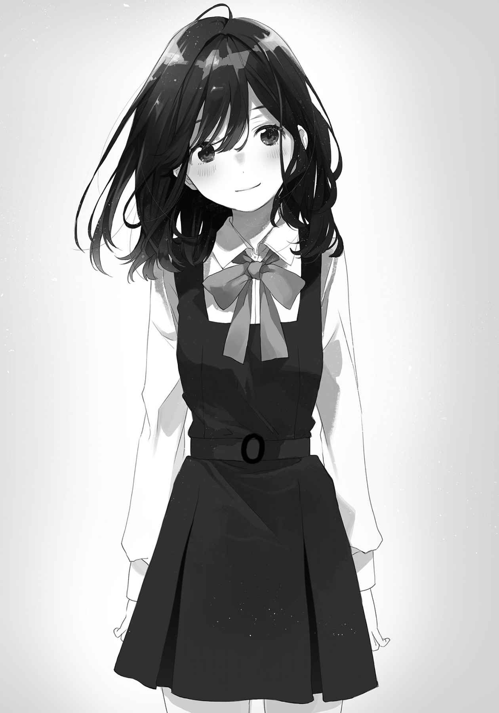 めくれた
「なにしてるの？」
「驚いていたんだ」
言われて妹が振り向く。なにもないことを確かめてから、自分を指差した。
「わたしに？」
「お前」
「わたしですか」
「俺の中では、こう、もっと小さいイメージがあるから」
正直に心境を吐露すると、妹は頭に手を載せる。そのまま手が水平に動いて、俺の胸を軽く
「まだ小さいよ。にーさんより、全然」
「そりゃそうだが、そういう話じゃなくて」
そう否定されると、妹としては理解できないみたいだった。なんの話と目で問われる。
流れるような髪の質も、子供から大人へ変わっているようだった。
「日記手伝ってーって、泣いて
「いつの話してるんだよぉ」
ぷーっと
「にーさん、昔のことは忘れるように」
いいですね、ともう一度胸を軽く
俺にとっては昔でもなんでもない話だったから、その成長に追いついていけないのに。
ランドセルを背負っていない妹が玄関から出て行くのを見たときの複雑な胸中は、高校の始業式が終わって体育館の外に出て、青い空の下で風に吹かれても
俺は妹に、小さいままでいてほしかったのだろうか。
そりゃあ身勝手というものである。しかし
いやそんなに順調にいけばまだいいけど、自分を運ぶ流れのようなものはいつまで
明らかに自意識過剰だった。
そんなものを抱えながら帰ってきて、いつものように手を敷いて椅子に収まる妹を見ていると、
座り方に限らず、癖というものは時としてそうした心の平穏を与えてくれるらしい。
俺たちはまだ同じ部屋で生活していた。
果たしてそれは成長と言えるのだろうか。
「そうだ。にーさん、買い物行こうよ」
「ん？」
「この間付き合ってくれるって言ったよね」
「……昔のことは忘れた」
朝方に聞いた言葉を悪用すると、言い出した妹がまた
「いじわる」
「お前が忘れろって言ったのに、
「忘れなくていいこともあるの」
妹が
しかしそういうところも、こちらの
本当は誘いを断る理由なんかない。単に少し、妹をからかってみたかっただけだ。
そうして俺と妹がそれぞれ制服を着るような時代は、細々と、淡々と続く。その間に語るべきことがあるとするなら父方の祖母が
祖母が他界したのは妹が中学二年生のときだった。季節は夏を過ぎて、暑さも和らぎ、朝夜に控えめな肌寒さの舞い込む秋半ばだった。長く続いていた入院生活の中、祖母が最後になにを思って息を引き取ったのかは誰にも分からない。死にたくないか、それとも苦しいともがいていたのか。少なくとも葬儀場で見た祖母の横顔に、
本当に子供の頃、同じ保育園に通っていた男子が死んだことはあった。葬式にも全員で出席して、けれどそれは毎日行われる散歩の延長線上に過ぎなかった。頭の上に
だから人の死に、取り分け身近である人のそれに触れるのはこれが初めてだった。
葬儀が進み、献花の時間になって俺は妹と並んで花を
そんな俺たちがこうして花を
色素は薄まり、精気も枯れる。指先には静かに
言い方は悪いが、それは生まれる前、『作りかけ』の人間のようにすら見えた。
これが、人生の終わりというやつなのだ。
時間がもたらすものの一端を見せつけられるような気がして、喪失感に先立って恐怖を覚えた。いつかは、必ず、誰もがこうなる。親と自分と、そしてなにより妹も。
若く、幼く、
どうすればいいのだろうと、この頃から漠然と考えるようになっていた。
一人の人間の死が俺にもたらしたものは、深く、静かに潜行する。
それが根を張るように浸透して転機となるのは、まだ少し先の話だ。
あとは妹の友達について語ろう。
妹は結局、小学生である間に友達を家に連れてくることはなかった。だから学校に友達がいたか本当のところは分からないけれど、休日も誰かの家へ遊びに行く様子もなかったし、まぁ、いなかったんだろう。家族とはよく
そんな妹に初めて出来た友達は、
妹好みってやつだ。
妹の友達の名前は、くーまんと言った。
「くーまんは桜島に旅行だって。すごいねぇ、子供なのに」
妹は携帯電話をしょっちゅう
言ってしまうと、まぁ、それぐらいの機能だ。部屋もあって色々と変えることはできるので、妹はその機能で遊んでいる。後はたまに今の妹みたいに相手からメールを送ってきてくれるらしい。旅行に行ったときとか、特定の日付とか。壁紙も色々くれるようだ。
時々見せてもらうと、妹が好きそうだなぁと感じてしまう。
そもそも妹は、熊のデフォルメキャラがどれも大好きだ。いやむしろ熊じゃなくてもいい。最近だとはんなり豆腐というキャラクターにもご執心だ。ようするにかわいいものが好きなのだろう。かわいいものが嫌いって公言するやつにはまだ会ったことがないけど。
昇華された概念自体を否定することは難しいのかもしれない。
椅子の上に体育座りする妹が顔を上げて、照れたように笑う。
「わたし、一人で名古屋にも行けないよ」
駅で迷子になって涙目になっている妹の姿が
「電車一本で着くぞ」
「切符買ったことないよぉ」
妹が足を振ってけらけらと笑う。
中学生になった妹にも、携帯電話が買い与えられた。両親としても妹に友人がいないことは
「ずっと友達って言われたでふ」
くーまんの口調を
そういう顔を見せる妹は珍しく、見ていて目を奪われる。ずっと友達と言ってもあと二、三年もすれば、機種を変えれば……と思うところはあったけど、妹の薄く染まった
妹がめざましいほど成長していく様を見ても、その頃には動じなくなっていた。俺と妹の関係性がまったく変わらないから、慣れてしまったのだろう。こういうのは安定しているというのか、歩みを止めているというのか。とにかく、身体が大きくなっただけでなにも変わらない。
少なくとも、俺はそうやって納得していた。
が、しかし。俺が色々考えるように、妹にだって色んな悩みがある。
ある日、
「にーさん」
「ん？」
「触れない友達って、おかしいかなぁ？」
その妹の質問に、幽霊でも見えているのかと最初は思った。でもすぐにくーまんのことを言っているのだと気づいた。確かにくーまんに触ることは無理である。
だけど、触れられることが友達の条件なんて、聞いたことがない。
そもそも、条件のある友達ってなんだ。
「好きなんだろ？」
「うん」
「大事にしたいとも思う」
「うん」
「じゃあそれでいいじゃないか。犬でも、人間でも、電子生命体でも、そういう気持ちを持てる相手との関係を大事にすればいい。人間、素直が一番だ」
損得を踏まえた友情なんておかしい。それならば妹とくーまんの友情というものは、
「にーさんはいいこと言うなぁ」
感心しているのかなんなのか、そんなことを言われてしまう。いやぁそうでもないよ、と
そう思うと途端、自分がエゴに
同時に、いつの間にそこまで妹を大切にする兄貴になったのだろうと我が人生を振り返ってしまいそうになる。
妹が寝返りを打つような、
それが失われたとき、俺と妹の関係はなにかが終わり、変わっていくのだろう。
妹がそれから寝息を立て始めたので、どこか
俺が妹に向ける
それは無償か？ と暗い壁を見つめて問う。妹といると俺の心が安らぐ。いつもはのたうつように動いている胸の奥が、妹の笑顔を眺めているときだけは安住の地を見つけたように落ち着き、余裕を保つことができる。それも見返りと呼ばれてしまうのか、判断がつかない。
なにも与えられることを望まないで、すべてを差し出すことは
それを無償の愛と人は言うのかも知れないけど、俺は、嫌だ。
もう一度、代わり映えのない景色があることを祈る。
このままの時間が続けばいいと、いつだって願っている。
だけどその度に、祖母の葬儀の様子が脳裏に浮かび、現実がその頭を殴り潰す。
だから、分かっている。
このままでいられるはずがないと。
本当に理解しているかはともかく。口先では、そう言えるのだった。
高校生にもなれば、活動や交遊の範囲が必然広がる。
それでも授業が終わると極力、早く帰るようにしていた。妹が部屋にいるからだ。面と向かって言われたことはないけれど、俺を待っているように感じるのだ。それが気のせいだと言えるほど、妹に詳しくないわけじゃない。様々な感情に対して鈍感でありたくなかった。
しかし、それが正しいのかとも思う。俺が帰るから妹も早く帰ってきて、という悪循環のようなものがあるんじゃないか。妹の交友範囲を狭めているのは、他ならぬ兄ではないかという疑問が浮かぶ。実際、俺がいるということは妹に大なり小なりの影響を与えているのは確かだ。
よき兄を目指すなら、どういった影響力を持つことが正解なのか。
悩んでいるところに、高校ですぐに仲良くなった友人からどこか行こうぜと誘われた。放課後に誘われることは何度かあったけれど、その都度適当な理由を作って断っていた。今回も「いや」と断りの返事を述べようとして、視線と口が宙をさまよう。迷い、悩んで。
流れに、逆らってみることにした。
同じことの繰り返しで
このとき、俺は多分初めて『妹を優先しない』選択をした。夏休みの日記の件以来、常に優先していたそれに逆らったのだ。価値観を揺さぶられて根っこを失ったような気分となる。ごまかすように明るく振る舞い、友人たちと町へ出た。
こんなに明るいやつだったかお前、と友人勢に驚かれて、受け入れられた。
悪くはなかった。
でも夕方遅くに家へ帰って、部屋へ戻るとやっぱりそこに、妹がいた。
今では見慣れて、そこまで抵抗のない制服姿だ。
携帯電話の向こうで頭を傾けた妹の目が、俺を捉える。
「おかえりー。今日は遅かったね」
遅かったと言われて、バツが悪くなる。遅かったのだ。基準はなんだ？ どこにある？
混乱するように
「あぁ、ちょっと。友達と遊んできたんだ」
妹の顔を見ることはできなかった。悪いことをしたわけでもないのに、いや、したのか？
なにかを裏切った気持ちになって、やましさのようなものが心の底を埋めていく。
「そっかー」
妹の首の傾きが戻って、携帯電話と
反応は淡泊で、真意を
妹に他意があったわけではないと思う。けれど俺は罪悪感を覚えて、
抱えているものを全部放り捨てて額を壁に押しつけたくなる、この、もどかしさは。
「にーさん？」
部屋の入り口に突っ立っている俺を
その声を聞くだけで、自分を
「んー……いや……なんでもない」
言葉を
分からなかった。答えを知ることを恐れた。賢明さと臆病が入り交じって。
だけど、後悔しているような気もした。
そのときに感じた後ろめたいものの正体を、俺は大学生になって知ることになる。
俺が大学生になったとき、妹は高校生になった。高校のときと同じく入れ違いのような形となる。更に妹が選んだ進学先は、俺が卒業した学校だった。後を追われているようだ。
俺は大学進学を機に家を出た。家から通うには遠いとかそういう理由をあげてなんとか親を説得して、大学の
強い熱意や確固たる理由があったわけじゃない。家に嫌気が差したわけでもないけれど、ただなんとなく、漠然と続く流れのようなものに逆らってみたくなっただけだった。無難な成績を維持して大学に進学していこうとする自分を省みて、流されているな、と意識して以来常に
妹が部屋にいないというのは当初、独特の
自分の部屋って、そういうものだっただろうか。
思い立ち、ふらりと財布だけを持って出かける。誰かに行き先を告げることはなく、
動機というものを振り返れば、高校のときの妹とのやり取りを思い出さざるを得ない。
後ろめたさと、罪悪感と、そして義務感。
あのとき感じた、兄であるという流れのようなものに逆らいたかったのだろう。だから
それなりの成果はあった気もする。
妹という存在が多少なりとも薄まって、だから案外すんなりと、家を出ることも出来た。
そうした話を妹と、面と向かってしたことがないのは小さな気がかりだった。
妹は今、なにを思うのだろう。部屋が広くなって喜んでいるのか、それとも。
薄まったはずの妹への献身はむしろ、身勝手だが離れてこそ大きく感じるものだった。そこまで妹を意識している兄なんて、そこら中に
「……いや違う、違うな」
どこかで聞いて伝染したように口癖になったそれを、独り
俺が本当に意識していたのは妹ではなく、兄としての自分がどうあるか、ということだ。
妹の望むような理想の兄を目指すのか、それとも俺自身が望む自分であるべきか。
俺にとって、妹とはなんなのか。人生の
本来は妹と向き合って答えを見つけるべきだったかもしれない。
だけど俺は一人でそれを探そうと、家を出た。
別の道を探すことが逃げることに
転機が訪れたのは六月。梅雨入り間近、
大学の入り口の向かい側に屋台を出している、クレープ屋に寄っていたときのことだった。そこの店員さんがなかなかに
悪い女というのは、例えば目の前を通りかかる女みたいだろうか。
なにが悪いって、姿勢が悪かった。
しかもそのまま「うぎ」と鈍い悲鳴を上げて崩れ落ちてしまう。
一緒に静観していたクレープ屋の店員が出てこようとしたので、「あーいい、いい、俺が」と手で制した。それから倒れた女、というか女性の顔を
見て見ぬフリをするには距離が近すぎるので、助けないわけにもいかなかった。
救急車より先にまずはと、一番近い医療施設まで
「うへぇ」と、大学に通じる長く高い坂を見上げて
目指すは大学の保健室。運んで先生になんとかしてもらおう。
責任を丸投げするべく、坂を駆け上がろうとする。が、その直後にぐったりして重苦しかったものが軽くなる。振り向くと、女の足をクレープ屋の店員さんが支えていた。
屋台をほっぽり出していいのかと思ったけど、「やっぱりよくはないでしょう」と店員さんが
しかし今はそれどころじゃないので、急病の女性を二人で運ぶのであった。
……で。
その十分後、保健室のベッドに病気だったはずの女性が座り込んでいた。
既に
先生の適切な処置、は不要だった。
なにしろ彼女の症状は腹痛……というか、食べ合わせが悪かった……というか。
簡単に言うと、トイレに行けば解決する問題だったのだ。
「たふかったわ」
ぼりぼりと錠剤を
ちなみにクレープ屋の店員さんは、走って屋台に帰っていった。爽やかな人だ。
「まぁなに、大事にならなくてなにより」
「そうよ」
それはいいことだ、と
大方の予想から外れることなく、変な人なのかもしれない。
「看板のクレープの絵を見たのがトドメになったわ、いやぁ危ないあふはい」
ぼりぼりと、口が空になる度に錠剤を補給しては
「なにそれ」
「栄養剤」
「………………………………………」
少し怪しい響きだ。こちらの視線を察してか手元のそいつを
「ビタミン剤」
「なんで言い直したんだ……」
余計怪しくなった。瓶になんとかスペシャルと書いてあるのもどうなんだ。
そのなんとかの部分が彼女の名前なのかな、と思う。
「不良用語で言うところの誠意は必要？」
礼はいるか、と彼女が聞いてくる。金品の類を要求する
「いや別に、ただ……」
答えを濁している間、つい彼女を見つめる。目もとは、少しきつい。
女性的な輪郭を全部少しだけ、上に引っ張っているような。鋭さを持つ人だ。さっき聞いたけれど同じ大学で、彼女も一年生。年上に思える。少し長い髪は
その
ぷっくり
「ただ？」
彼女が続きを問う。俺は少し恥じ入りながらも隠さず、口が動いた。
「
彼女が目を丸くする。錠剤を
「素直なのね」
「否定せずに受け止めるきみも十分、素直じゃないか」
「私が
と言いつつも満更でないように口が
隠しきれていないかわいげというものは、つい、目を奪われてしまうものだ。
「でも考えてみると、答えになっていないわ」
彼女が学校の教師のように、俺を
大学の講義室の広さから来る、距離感の差かもしれなかった。
「そうだな。あー、いや、うん。お礼って言われても……」
なにを要求しても下心が見えてくるようで、直接は言いづらいものだ。
「国語のテストでは０点よ」
「講義に現国がなくて助かったよ……って、あぁ、もう行くのか……」
彼女が
「だから次会ったときに国語を教えてあげるわ」
それがお礼ね、と彼女が言外に匂わせる。
次。次があるのか。その言葉の響きに、心の底が浮き上がるような気さえした。
彼女が不敵そうに
これが、彼女との出会いだった。
妹との出会いがすべての始まりとするなら、それは、第二の出会いであったと思う。
人は一人では生きていけないという。
では俺は、誰と生きているのだろう。
その答えを彼女が教えてくれるかもしれないと。そんなことを、思った。
愛ってなんだろうと、時々考える。
「なんだろう」
「私に聞かれても困る」
向かいの席でぼりぼりと薬……栄養剤をかじっている彼女が目を
大学に用意されたパラソルの下で茶を飲み、栄養剤をかじる音を聞きながら愛を問う。冷静になるとわけが分からなかったが、春風の陽気さにごまかされることにした。
一緒に座っている彼女は、あの彼女である。腹痛を助けたことで縁の生まれた、あの彼女だ。学部は違うし住まいも遠いが、同じ大学であるという共通項と奇縁さえあれば、どうにか
彼女との間にあった
「でも、きみに聞かないと答えが出ない気がして」
突っぱねられた話題を引っ張ってみると、彼女が栄養剤の瓶をこちらに傾けながら言う。
「よくそんな恥ずかしいこと言えるわね」
「いつものことじゃないか」
そして彼女もまた時々、それに答えてくれる。それに期待して、いつだって問いかける。
誰かと一緒にいれば、答えが返ってくる。それが単純に
「そろそろ行こうか」
どっちのカップも空になっているのを見て提案する。「そうね」と彼女も同意した。
ゴミを片づけてから、大学の正門のある坂へと向かう。これから講義に参加、ではなく俺の部屋へ戻るところだった。彼女が受ける講義まで大分時間があるのだが家へ帰るのも面倒なので、という流れで俺の部屋で時間を潰すことになった。俺はもう今日の分はないので丁度いい。
下り坂を歩く足は追い風と共に軽快で、
「順風満帆って感じだね」
「今日は
そういう日もあるさ、と笑いながら坂を下った。
彼女と一緒にアパートへ戻る。招待するのはこれで三度目か、四度目か。機嫌のいいときしか来てくれないので、釣られて俺も機嫌が良くなる。いい循環だと思う。
あははーうふふー、と彼女は付き合ってくれないので一人で盛り上がった。
その彼女が俺の部屋に着いてから、座りもしないで
「うーん……」
彼女が
「どうかした？ 読みたい本あるなら」
「いえ、前からこれが気になるの」
本棚の端にあるそれを指差す。内心、ひぃぃと悲鳴を上げていた。
「ただの辞典じゃん。ジ○ニアスなアレ」
「これだけ英語教材なのに、ドイツ語の教科書と紛れているのが気になるわ」
ぐえ。やはりドイツ語の辞典を買うのをケチらなければよかったか。
どうせ単位取ったら無用の長物だと思い、教科書代を節約していたのが
「あなたそういうところきっちりしているのに……」
「あっ」
彼女がケースの背に指をかけて、引き倒す。彼女は大して力を入れていないはずだが、中身が本当の辞典ほど厚みのあるものじゃないので、簡単に動いてしまう。ケースが回転しながら床へと落下し、円盤を外へ
ついでに俺の血の気も散った。
どう見てもジーニアスじゃないＤＶＤパッケージの裏面を眺めて、彼女の唇が引きつる。
「
「……ウッス」
「高校生みたいな偽装しているのね」
彼女も苦笑いで、そこまで
「いや、まぁ……男はこんなものだよ、成長ないんだ」
しかしわりかし
露見する前にしまおうと、手を動かす。
「まぁ男の独り暮らしだし、あって当然か」
「そうだね、仕方ないね寛容だねありがとう」
そそくさと片づけようとする、しかし。
「ん？ んん？ んんんん？」
彼女が割り込んできた。
「気になることがあるの、聞いていい？」
「答えられることならいいのだけど」
意識せずともまばたきが多くなる。彼女がＤＶＤの背を指差す。やめてくれよ。
「『妹』１」
「はい」
隣の背を指す。
「『妹』２」
「はい……」
三つ目の以下略。
「『妹』３」
「………………………………………」
正座した。
「この共通点を踏まえて聞くのだけれど」
なにを聞かれるのか既に予想できていた。彼女が顔を引きつらせながら問う。
「あなた、まさか妹いないわよね？」
「は……」
予測していても恐れていた質問だった。
こういうとき、この場を
いないと
馬鹿な、と吐き気を催すほどの強い否定があった。
そんな
たとえ今考えていることの逆が最善だとしても。
「いるよ、一人」
かわいくて小さいのが。
彼女の顔から血の気が引くのを目撃してしまう。慌てて言い訳した。
「こういうのと現実はまったく別物だよ」
ただ、好みに沿って選んでいたらたまたま重なっただけだ。
妹のことを四六時中考えていますなんて、そんなことは、多分ない。
「ソウナノ」
「口、すごくカタカタ動いているよ！」
「栄養が足りないのね」
うん、と彼女がさっきしまったばかりの栄養剤をざらざら口に突っ込む。
「……水いる？」
「ヴィヴィエ」
濁った否定が返ってきた。たんまりと
大きく栄養剤を飲みこんでから、彼女が俺を見つめる。
目の下に、先程までなかったクマが生まれているように見えるのは、錯覚か？
「ごめんなさい、栄養剤なくなったから今日は帰るわ」
「えっ」
聞いたことねぇよそんな理由。
「あぁ、困ったわ……」
ぶつぶつと
それとこの日を境に、彼女は部屋へ来るのを避けるようになった気がする。
気のせいか？
気のせいだといいな。
そんな風に、誰かに肩を
そんなこともあったけど、関係は
少なくとも俺はそう考えていた。
自分の大学生活は、彼女との間にあったものがほとんどを占めていたように思う。
彼女と出会い、その気を引こうとあっという間に一年が
誰かと一緒にいると、時間が
そんなことを学んでとうとう大学四年生の春。
長い春休みも終わりが見えて、就職活動の激流に本格的に足を突っ込みだした時期。
その日の昼前、チャイムが鳴った。
お隣さんでも入れ替わって挨拶に来たのだろうか、と考えた。そういう時期だった。
だからなんの気なく、一切身構えないで扉を開けて、不意打ちに仰天する。
結論から言えば、新しい入居者であることは間違いなかった。
問題があるとするなら、その入居先が『俺の部屋』だったことか。
大きな
「にーさん、ただいま」
なんの前触れもなく。
一人では名古屋にも行けない妹がアパートを訪ねてきたのだった。
事前の連絡など一切なかったから、不意をつかれたなんてものではなかった。
座っている部屋の床ごと回る錯覚に
三つも四つも
フード付きのパーカーを着るその姿が、過去と重なった。
「にーさん、怒ってる？」
黙っている俺に、妹が
いきなりの再会に戸惑っているだけだった。
「怒ってはないけど……笑顔で出迎えようにも、連絡もなかったし」
「あれ？ お母さんは連絡しといたーって」
「母さんから？ いや、まったく……」
引っかかりがあって
「待った……確か、五日ぐらい前に……」
珍しく母親から電話がかかってきた。他愛もない話が少し続いた後、『物を送る』と言っていた。飾り気のない言い回しなので半分聞き流していたが、まさか、え、妹？ と目で問う。
物を送るって、こちらの意向とかまるで無視じゃないか。
とはいえ母親を責めても軽く流されるのは明らかなので、起きてしまったことを直視する。
妹はここにいる。三年間、顔を合わせていなかった妹と大荷物が部屋を埋めている。
「その
「うん。ここから大学に通うの」
「大学？ 大学生っ、お前が？」
思わず片膝で立ち上がる。そして目を
「大学って、そこの？」
近所のラーメン屋でも指差す扱いで、大学の方角を示す。「そうだよ」と妹が
「にーさんと同じ学校」
いぇー、と
俺は今年卒業するのに、後の三年はどうするのだ。いやそういえば、母親と就職の話もしたな。地元じゃなくてそっちで就職先を探すのかと。そして俺は、こっちで探すと言った。
……そういうことなのか？ このまま妹の大学卒業まで、ここに一緒に住むと？
妹を見る。まだピースしていた。その仕草に
俺と一緒に暮らすために、同じ大学を受けたのだと。
……だとするなら。
俺は、家を出たことを後悔するべきなのだろうか。
大学生になってからはなんだかんだと理由をつけて実家に帰らなかった。妹にどんな顔をすればいいのか忘れそうになっていたし、それを望むように家を出たはずだったのに意識すると芽生えるものは罪悪感に似ていた。また家を出るとき、妹がどんな顔をするのかと考えると足が向きづらい。まるで妹を恐れるようだった。……いいや違う、違うな。
妹と一緒にいることで自分の本質的なものがさらけ出されていくのを、怖がっていた。
原点から逃げようとして、だけど、俺は結局戻ってきてしまったのだろうか。
「なんかにーさん、落ち着きないね」
「いやだってさ、お前……」
上から下まで眺める。小さな
「高校、いや中学生あたりから外見の変化がまったくないから」
幼い顔立ち、ふんわりとした髪。大きな目に、どこか頼りない輪郭。
中学の制服を着せたら、まだ現役で通用することだろう。入学式に出ても違和感ない。大学生の方が無理あるよ、と疑わしい目で見ていると「失礼な」と妹の
そういう顔つきに、郷愁すら覚える。
「本当に大学生？」
「ちょっと待って」
妹が振り返り、
「おぉ、
妹はご丁寧に、学部まで俺と同じだった。
「入学式の会場は……俺のときと一緒か。
「にーさんに連れて行ってもらえって」
「え、保護者枠で俺？」
そうと妹が
昔の空気をそのまま持ってきたようにことが運んでいこうとしているけど、それでいいのか。
それで、なにも問題はないのか。
「にーさん？」
「いや……」
ごまかして、視線がさまよう。しかし見慣れた部屋に見るものなんかなく、妹に戻る。
中学生になったときとは別の意味で衝撃を受ける。むしろ制服を着なくなって、一周回って小学生に戻ってしまったような気さえする。こっちまでその気分に引きずられてしまいそうだ。
そういうところに浮き足立っているのかもしれない。
「電車、乗れるようになったんだな」
まさか歩いてきたってわけでもないだろう。誰かに教わったのか、自分で勉強したのか。
勉強するほどのことかな、と小さく笑ってしまう。
「大学生っぽくなった？」
妹が彫像みたいに気取った姿勢を取る。具体的には頭に手を添えて脇見せる感じだ。
大学の中で見かける女子大生と目の前の妹を比較する。
「ひへ」と変な笑いが漏れるほど、別物だった。
「なんだよぉ」と妹がまた膨れる。
本当にここに住むんだなと思い、彼女の存在を意識する。彼女が妹と住むことを知ったら、いやそれよりも妹が彼女のことを知ったら……それより？ それは、それよりなのか？
自分の
髪をかき乱しても、取れずに張りついている。
「なんだかなぁ……」
いいよな、と荷物整理に動く妹を目で追う。妹は真っ先に青い携帯電話と充電器を取り出して、コンセントに
「物持ちいいな」
「友達だからね」
答えになっていないようでなっているそれを、妹の笑顔と共に受け入れる。
そうすると肩の力が抜けて、
戸惑いはある。突然だし、思うところも、過去もあった。
これからどうなるんだ、と未来を
その一方で、妹が部屋にいるというだけで、いつの間にか安らいでいる自分もいた。
この間見た映画の言葉を借りるなら、暖かくて、安心を感じる。
彼女のように清新な空気を外から吸い込ませるのではなく、もっと奥深く。
胸の奥に息づくものが熱を取り戻すような、根源を揺り動かすものだった。
けれど俺にそんなことができるはずもなく、独り暮らしは終わりを告げたのだった。これから少なくとも四年間は妹がこの部屋にいて、一緒に生活することになるのだ。いきなりではあるし、他の様々な事情も放り捨ててしまう気もしたが、これもまた人生なのだろう。
両の
さて、そうしてから驚いたことその一。
妹、料理が出来る。正確には、ようになっていた。
今は晩飯を作っている。
「独り暮らしのために勉強したのだよ」
ふふふと得意がっているが、独りじゃない。俺いるよ俺、と挙手するが無視された。
「母さんに習ったのか？」
「そうだよー」
くまスリッパを履いた妹が流しでぱたぱた動いているのを眺めていると、えらいねぇと頭を
「驚いたよ」
「わたしも、部屋が
「あぁ、まぁ」
彼女をいつ部屋に招いてもいいように掃除するようになったのは、内緒だ。
「手伝おうか？」
「じゃあお皿と
妹に子供扱いされてしまう。確かに料理は不得手だし狭い流しに二人も立てば効率が悪くなるのは分かる、が、これはなかなかに来るものがあった。やはり兄として、という強い意識は自分の中で強く根付いているようだ。三年ほどほっぽっても枯れた様子は
家にいた頃が当たり前に昨日であったような、地続きの今日がここにあった。
けど、確かに時間は
独り暮らしのために、か。そのために高校生としての時間を費やしたのだろうか。
また俺と一緒に暮らすために。
「………………………………………」
安易な
謝った方がいいのかな。どうなんだろうな、そこのところ。
謝るっていうのは相手に申し訳ないと思うより、自分が許されたいときに出るもので。
俺は、許されたいのかな。妹にではなく自分自身に。
「にーさん、お
「あ、はい」
すいません。
妹がフライパンいっぱいに作った、ニラともやしの
湯気立つそれらを眺めて、ついぼぅっとしてしまう。
「にーさん？」
向かい側に座る妹が、
「ん、いや……」
感動とまではいかないが、名状しがたい波に翻弄されていた。
耳と目の位置が揺れて定まらないまま、手を合わせる。
「いただきます」
「はいどーぞ」
ガンガン行きなさい、と手を招くように振って促してくる。
それは母親の
「家の味そのままだ」
「今日は材料も家のものだし。お母さんが持ってけっていっぱいくれたから」
右端の
「あー、あるある」
俺もここへ引っ越した当初は、色々と送ってくれた。その仕送りもすっかり途絶えていたところにまさかの妹投入である。緩急自在の母親には参ったものである。
「後で買い物行こうね。あれじゃあ朝ご飯作れないもん」
中身と外見のお粗末な冷蔵庫を
「……というか、朝飯もお前が作るのか」
「ご不満？」
「不満はない。一切ない、とてもありがたい、けど」
もやしを
「不思議だ……それと
「忙しい感想ですな」
まったくだ、と深々
食べた後、食器は一緒に片づけた。
それから妹が
「………………………………………」
俺、彼女いるんだよ。そんなこと言ったら、妹はどんな反応を示すのか。
『そっかー』と流すのか、それともすぐに出ていく？ いや、と小さく頭を振った。
予測がつかない。ただどんな形にせよ万事丸く行くはずがないとは分かっていた。誰かが傷つくし、誰かが自分の
彼女と過ごした時間。妹がここに来るために費やした時間。
「………………………………………」
空き気味だった本棚が、妹の持ってきた本でぎっしりと埋まっている。漫画もあるけれど大半が小説だった。ここに来て初めて、大学生らしさを見つけた。
「……あぁ、そういえば……」
突然の出来事に面食らって、返事を
変な挨拶だったけれど、それはきっと精神的な類への訴えだったのだろう。
『おかえり』って。
入学式に現役の学生が保護者枠で参加するというのは珍しいのだと思う。少なくとも席に着いて周りを見回しても、俺のような若い顔ぶれはどこにも見当たらない。浮いていた。
しかしそれは新入生の席で小さくなっている妹にもあてはまる。印象だけじゃなくて明らかに他の新入生より一回り小さい。かしこまってスーツなんか着ているけど、場違いな感じすらある。ちなみに朝、感想を聞かれたので似合わないとそのまま言ってしまって機嫌を損ねた。
妹が昨日から部屋にいて、一夜明けて。
起きたときの寝ぼけ顔、着替えるときの癖、寝相の良さ。俺の知るものが冷凍保存でもされていたように次々、目の前に並べられていった。本当にどうなっているんだというくらい変化がない。高校生のときなにやっていたんだと思うけれど、大してなにもなかったのだろうなぁ、というのは聞かなくても分かるのだった。
変わらない妹。
そこに
入学式が一通り終わった後は大学での説明会が予定されている。だけどその間には結構な時間があるので、大学の近くで昼飯を取ることにした。大学周りには色々な店があるものの、学生向けを
「おぉ、値段高い」
メニュー表を右から左へと確かめた妹が驚く。店員がちらりとこっちを向いていた。
「モーニング四百円の喫茶店とはちょっと違うだろうな」
実家の近所はそんな店ばかりだ。そういう土地柄なのである。
妹と一緒に日替わりランチを注文して、出てくるのを待つ。店内に他の客はいない。せっかちな学生や
歳月を感じさせる白い壁を眺めていると、妹の視線を感じた。俺の肩を見ていた。
「なに？」
「にーさんもわたしもきちっとした格好で、なんかおとなーな感じ？」
そういうのは意識している時点で成立していないんだよ、と苦笑する。
「あ」と、妹が口をへの字に曲げる。
「似合わないって言おうとした、思っている、悲しい」
「決めつけて反応するなよ」
全部合っているけど。
そんなこんなで今回もしっかり待たされたが、出てきたランチをばくばくした。
俺はすぐに食べ終わって、妹の食事風景を観賞していた。
「相変わらず食べるの遅いな」
猫舌な上に、動きもゆっくりとしている。時間はあるのだから、いいのだけど。
「にーさんこそ、ちゃんと
「そーね」
もう
「服にこぼすなよ」
「にーさんはわたしをいくつだと思っているの」
妹は大変に気分を害したようだ。これでは気軽に、五歳か六歳と言えない。
そしてもう二カ所ほどソースが服に飛んでいるのだが、後で教えようと黙っておいた。
妹と暮らすことに
それから、お
多少こちらも苦しくなったが、時間に余裕のある昼食も悪いものではなかった。若干眠そうな妹を連れて喫茶店を出てもまだ少し時間があった。後は大学の中で時間を潰せばいいかと、目の前の長い坂を上ることにした。
「大学に来るのも久しぶりだな」
それを聞いた妹が丸い目で俺を見つめる。
「にーさん、悪い子？」
「いやいや春休み」
「おぉ」
「あと四年生だから、単位取り終わってるし」
「おぉぉ」
後半はなにに驚いたのかよく分からない。多分、妹も分かっていない。
二人で坂を上る。こんな日が来るなんて思いもしていなかった。考えてみれば同じ学校に通うというのは年齢の関係上、小学校以来なのだ。あのときから十年近く
十年……十年？ 十年って、すごく長い時間のはずじゃなかったか。
その重みも長さも質感も手元に残っていない。
こんな風に、いつの間にか時間が
「おぉ、おーぷんかふぇ」
大学内を少し歩いたところで、右手側に
さっきから驚いてばかりだな。それと、これをオープンカフェと呼ぶのは初めて聞いた。
中央のタワーの壁沿いにくぼみのような土地がある。建物の影と混じるそこにはパラソルと適度な数の椅子が用意されている。そこからすぐの建物内で販売されている飲食物をその席で楽しめるというわけだ。俺も彼女との待ち合わせによく使った。時々、音楽サークルがけたたましい音を鳴らして盛り上がるときもある。今は新入部員の勧誘のために活動の
「まだ時間あるし、なにか飲んでいくか？」
「うん。にーさんのおごり？」
「うむ。入学祝いということにしよう」
高いものを要求される前に安上がりで済ませることにした。
妹はウーロン茶とカップアイスを注文する。さっきのお
買ってから出ると丁度、目の前の席が空いていた。日陰になっていないので嫌われている席らしいが、構わず座った。妹は椅子の尻の部分を払い、
元から小さい妹が更にこぢんまりとする様子を見ながら、テーブルの
光は暖かいけれど、丘の上に吹く風は少し冷たい。
駆けてゆく冬の
そんなことはいいとして、妹がカップアイスを握りながらきょろきょろ、そわそわしている。
「どうした？」
「周りの人がみんなすっごい大人に見える」
そりゃあお前ならそうなるよな、という本音にひくつく唇の端を強引に閉じる。
「俺も最初はそうだったよ。すぐ慣れるさ」
建前的なことを言うと、「そうだよね」と安心した妹がアイスを食べ始める。アイスのそれが伝搬したように甘い顔をする妹と向き合っていると、
時間に流されていく自分への
「にーさんも食べる？ おいしいよ」
「ああ、じゃもらうか」
妹がスプーンで一口分すくって、「はい」と差し出してくる。なんの気なくそれを食べさせてもらって、甘いし
ここは俺の実家でもなければアパートでもなかった。
こんなこと、外では彼女としたこともない。知り合いに見られていたら、と想像すると背中に汗が噴き上がる。それは想像だけでなく、小さな予感にまで発展する熱を有していた。
「んまんま」
妹の方はまったく気にしないで、そのままアイスを突き崩している。
何歳だ、と思うほどにその仕草が幼い。今年も絵日記を書き始めそうだ。これが同じ学校の学生なんて、周りが信じるものか。
「えぇ……」
様々な感情の混ざり合った拒否が起きる。いかん、なんだこれは。
顔が
身体がマッチ棒でできているように、自分が頼りないものに感じられる。
三年間の空白を置いた結果、むしろ症状が悪化しているような気さえした。
「………………………………………」
過保護だろうか。しかし、言わざるを得ない。
「変な男に引っかかるなよ」
極力、淡泊を
「わたし？」
「そう」
お前以外に誰がいるんだ。妹は目を丸くしたまま、ゆるゆる、頭を振る。
「うん……」
あ、なんかあまり分かっていない
「いいか、大学なんて金と女に飢えた連中の
相当の誇張を含んでいるが、普通の男は金と女が好きなので間違ってはいない。
これぐらい言っておかないと、うちの妹にはピンと来ないだろう。
「にーさんもそうなの？」
痛いところを突いてくる。ここで俺は違う、と否定したら説得力を失いそうだ。
そもそも、と彼女の顔を思い浮かべる。思い浮かべるのに、少し手間取った。
なぜだ。
「そこそこだ。とにかく簡単に気を許すな、ほいほいと誘いに乗らない」
適度に流しつつ注意を重ねる。本当はもっと具体的に、細々と指導したいところだが残りは帰ってからだ。ここで続けていたら説明会に参加する時間がなくなる。
一方の妹はなにか
「そんなに心配なら、にーさんが送り迎えしてよ」
それは名案だ、とすぐに納得しかけた。しかし、いやいやと頭を振る。
俺だって就職先を探さないといけないし、そこまで妹につきっきりでどうする。
単なる妹バカみたいじゃないか。
「それは無理」
「えー……えー」
二度も落ち込まれた。じーっと、訴えるような上目遣いがやってくる。
絵日記を手伝っていた頃と構図がかぶって、あぁ、そうだったと思い出す。
うちの妹、基本的に俺に頼りがちだった。
「……帰りだけな」
妥協すると、妹が氷をカラカラ回してご機嫌になる。
「よろしく！」
「……うん」
それだけで色々なことに目を
ひょっとして。
俺って、過保護だろうか。
その日の夕方から約束通り、説明会を終えた妹の迎えに行った。
坂の下から手を振ると、説明会の資料を抱えた妹が走ってきた。
転んで転がって来ないだろうな、とハラハラしてしまう。これはバカな心配ではなく実際にあったことなのだ。幸い妹はちゃんと下りてきたのでホッとする。でも走る必要あったのか。
「待った？」
「そんなに」
大まかな時間は聞いていたので、少し待ったぐらいだ。なにしろ妹は携帯電話を持ち歩いていない。昔ながらのあの電話は既に電池がだめになっていて、充電器から離すとものの数分で電源が落ちてしまう。つまり、置き電話と大差ない。だからおにいちゃんは余計に心配なのだ。
「お前こそ寝なかっただろうな」
冗談半分で聞いてみたのだが、妹が一瞬真顔になった。そして、直後に笑顔で流す。
「履修登録っていうのをしないといけないらしいけど、よく分かんなかった」
朗らかに言い放つ妹に
「分からなかったら質問しないとダメだろ」
「うん、ちゃんとするよ」
進行形？ 妹がにこっと、俺を見上げる。
「教えてね、にーさん」
「……はいはい」
ついていって俺がやってしまった方が早いんじゃないか、と考えてしまった。
それから帰って、妹が夕飯を作るのを待つ。独りで暮らしていた頃はどこへ食べに行こうかと悩んでいた時間を、待つことに当てられるのは結構な
いや、俺は一人じゃないのだけど。彼女が、いるのだけど。
なんでか
「今日は焼きうどん作りましたー」
「いいですねー」
妹が意気
その皿を受け取った瞬間を見計らったように、音が鳴った。
ぴりりりり、と腕の筋肉を
首の筋が引きつって反応する。
「電話？」
「うん、そうみたいだけど……」
手を伸ばしかけて、けれど皿からのぼる湯気が鼻の先を
「いいや、食べてから確認する」
「いいの？」
「冷めるからな」
二、三言では終わらない予感があった。電話が鳴り
「これまた、
母親の作る焼きうどんと同じ味だった。
妹は昨日と同様に、俺の感想を待つように
「まだ不思議継続中？」
「んー……ちょっと慣れてきて、
「それもなんか物足りないなぁ」と、妹が
……さて。
食べ終わってから、電話を取る。かけてきた相手を確認して、胃が縮んだ。
「……ちょっと電話してくる」
洗い物を終えて、説明会の資料を広げている妹に声をかけた。
「電話終わってから履修登録の説明するよ」
「うん。……電話、お母さんじゃなかった？」
「大学の友達」
短く
かけてきたのは予感を裏切ることなく、彼女だった。
すぐに電話が
『こんばんは』
「……ちぃーす」
出迎える声が固い。予感は確信となり、石のように俺の側頭部を打つ。
覚悟を決めておこうと、足の指先に力を込めて地面に踏ん張る。
『今日とても不思議な話を聞きました』
「はぁ」
『あなたが大学に中学生を連れ込んで見せつけやがってこの野郎』
不思議じゃなくて過激なお話だった。声の
しっかりと誰かに見られていたらしい。
というかやはり、周りから見ても中学生にしか見えないのか我が妹。
「相手は妹だよ。入学式と説明会に付き合ったんだ」
『……妹？』
「そう」
『えぇぇぇぇぇ』
「なにその反応」
そこは安心するところじゃないのか。
『だってあなた、あなたの妹って……』
なんでもはっきり言う彼女が珍しく
「昔も言ったけど、ああいうのと現実のあれやこれやは別物だよ」
言っていて、絶対説得力ないだろうなと分かっていた。分かってはいたのだ、ただ。
実はそのままそうなんですなどとうそぶき、開き直ることになんの意味があるのか。
『あなたねぇ……』
言葉にできない
感情を言葉にできない瞬間ってあるよなぁ、と場違いなほど
『今から話したい、そっちに行くわ』
声の調子だけで彼女の
「今は、ちょっと」
『なに？』
ひぃ、かなり怖い。
「家に、妹がいるんだ」
『はぁ？』
「一緒に、住むことになった」
『………………………………………』
彼女の吐息が電話から離れる。
「おい？」
電話が切れた。少し待ってみてもかかってくる気配がない。迷ったが、こちらからかけた。
『………………………………………』
すぐに電話には出たが、彼女の無言は続いていた。
「なにか言ってくれ」
『うわぁ』
「引かないでくれよ……」
取り
『なにあなた、私より妹と一緒に暮らしたいのね』
そういうことじゃない。
「そうとは言っていない」
心の中で
『で、その妹がいたらどうして私を呼べないの？』
「え、いやだって、なんだ。なんだ……」
妹が傷つきそうだから、と言って納得してくれるものか。
『あなた、包丁があったら妹に
「どうしてそうなる。そんなときがあるなら、一本の包丁を使い回せばいいじゃないか」
『お断りよ、そんなの』
「じゃあ、包丁を二本買うとか」
『あなた分裂できるの？』
例え話と現実的な解決方法が接触事故を起こして会話になっていない。だけど、彼女の言い分がなんとなく伝わってくるのはその感情にまかせた言葉遣いのお陰だろうか。
「俺だって急だったんだ。昨日から連絡もなくいきなり来てさ、だからこっちも正直落ち着いていない。お互い少し時間を空けて問題等々に整理をつけてから話す、というのはどうか」
逃げ道を探して提案する。そんなに悪くない話だとは思った。ここで感情に身を任せた彼女が飛び込んでくれば、一体どうなってしまうのか。事態の収まりは絶対につかない。
検討には値する話だったようで、彼女は息を荒くしたままではあるが考え込む雰囲気があった。そして、『そうね』と、ほんの少しだけ冷たさを解いた声で了承する。
『少し落ち着いたらまた連絡するから』
落ち着けばね、と言い残してまた彼女から電話を切った。
少々ひねたところのある彼女がそういう言い方をするときは次があるときなので、内心、ホッとする部分があった。
一本の包丁、二人に持たせるなら。
「……そうするよな」
彼女の指摘と怒りは正しい。やっぱり、家族だから。
だけど、家族を優先するのはそんなに薄気味悪いことなのか。
妹思いのお兄さんを世間が許すのは、何歳までなのだろう。
そもそもそんな基準があること自体、偏見じゃないのかよと毒づく。携帯電話を握りしめながら部屋に戻ると、妹がすぐに出てきて迎えてくれた。
「にーさんおかえり」
「うん、ただいま」
ここで彼女から非難
座り込む。少し思い悩む。頭を
独りで頭を抱えながら考えたい。けれど妹が気配に気づいて振り向いた。
「あれ、またどこ行くの？」
「夜の散歩」
意味もなく夜をつけてみた。妹が「じゃ、わたしも」とついてこようとする。
足を止めてその様子を眺めてから、その場に座る。
「やっぱり止めた」
上着を引っ張り出そうとしていた妹が、片づけないで俺の前に滑り込んできた。
「移り気にーさんだね」
「お前になにかあったら嫌だから」
夜中に外を出歩いても、事件に巻き込まれる可能性は低い。もの
だけど出なければもっと低くなる。それなら、そっちの方がいい。
「なにかって？」
「お前に降り注ぐ悪意なら、なんでも。とにかく全部」
両腕を広げて、そのままの勢いで続けようとしてしまう。
「俺はね」
そこで言うか迷った。気恥ずかしさもあったし、それに。
一度口にしてしまえば、それが俺の中で揺らがなくなりそうで。
でも、一度は言っておきたいことだった。
俺はお前に対して過保護なんだけど、それは。
「俺はね、お前より大事な人間なんてそうそういないし、出てこないと思うよ」
彼女にも言ったことがないような、歯の浮いた
妹は少しの間、ぽかんと口を開いて固まる。けれどすぐ、手を
「わぁ、にーさんがなんかすごくいいこと言った」
「……いいこと、か？」
「わたしにはそうだよ」
妹が大口を閉じて笑顔を浮かべる。そりゃあ、まぁ、そうなるな。
それから寝るまで終始、妹はご機嫌だった。こんなこと兄から言われて、年頃の
しかし俺たちは、そのどちらも反対だった。片方だけじゃない、だから成立する。
そんな、偶然の間柄に思えた。
妹より大事な人なんてそうそういない。
今の言葉に偽りはない。
そう思うからこそ今更ながら、安易に家を出たことを後悔する。
なにをやっているんだろう、俺は。
ちぐはぐな過去と今に整理が追いつかず、独り静かに勝手に追い詰められていく。
息苦しい。問題と困難が喉にまで
それはその後
眠れないまま、夜の天井と向き合って思考は続く。脳に光が巡るように、考えが走り回る。
俺は彼女のことが好きだし、妹のことも、誤解を恐れず言えば愛している。
その二つの気持ちは、同居するはずなのだ。だけど置き方に悩んで、今俺の心の中はとても気持ちの悪いものとなっている。掃除は苦手じゃない方なのだが、と寝転んだまま額を
俺はなにかを間違えている。
異性愛と家族愛を比較することはそもそも可能なのか。いや、できるのが当たり前なのだ。それはそれ、これはこれが適用されて当然なのに、俺と彼女の間ではそれが同質の問題として取り上げられているように感じる。ここに誤解と、そして致命的な難題が潜んでいる気がした。
隣で
ほっぺ
そんな気に駆られてしまうのは、妹を思ってか、それとも保身のためか。
「………………………………………」
さっきから小難しいことを言っているけれど、ようするに。
妹と彼女のどちらを優先するのか。俺が直面しているのはそんな、ナンセンス極まりない問題だった。
難解さを
感情にはそれぞれの色がある。その色を見分けていけば、こんな問題は起こらないはずだ。
それが普通の感覚というもので、だけど。
俺にはその色を見極める能力が欠けているのかもしれなかった。
妹を起こさないよう静かに
愛ってなんだろう。
その答えが出たとき、俺は誰を傷つけるのだろう。
人は一人では生きていけないという。
では、俺は誰と生きているのか。
いつか、そんなことを考えた気もする。
熟考の末、譲るのではなく売ってしまうことにした。
早朝四時に目が覚めて、
万が一にも妹に見られたら、どんな反応を見せるのか。
怖くはあるけど同時に少し知ってみたくもあるけどやっぱりだめだうん。
その妹は隣の
そして、大学生かぁ、と時間の流れに
自分自身の変化には
妹が部屋に来てから、と指折り数えたけどまだ四日目だ。後頭部を常に押してくるような違和感は実のところ、まだ残っていた。この部屋には三年間、俺一人で暮らしていたのだ。それでもいずれ慣れることだろう。
これから、四年か。妹が大学を卒業するまで、俺たちはこうやって生活するのか。俺は今年には大学を卒業するけど、就職先は恐らくこちらで見つけるだろう、見つかれば。そのずっと先に妹もまたこちらで就職するとなったら、俺たちはずっと二人で暮らしていくことになるのだろうか。こじんまりと、しかし壮大な話である。
まだ遠い話のようだけどそれもきっと、当たり前のようにすぐやってくるのだ。
……とはいえ、目下の問題はもっと手前にある。
彼女のことだ。どうも随分とお怒りのようである。妹と入学式に参加して大学の中を少し案内しただけなのに、どこまでもこじれていきそうだった。そして
妹と彼女は交わらない。出会う前からそんな確信があった。
その原因が俺にあることも認めている。
妹を大事にする心と、彼女を大切に思うこと。
当たり前に両立するはずのそれが、なぜ思い悩む原因となるのか。
悩むということは、問題があるということ。
そして問題を抱えたまま長続きしていくことが、失敗以外のなんだというのか。
「………………………………………」
からからと、頭の空回りする音が聞こえる。
俺は、失敗するかもしれなかった。
「にーさんってあんまり大きくなってないよね」
朝食の途中、妹が俺の頭のてっぺんを見つめながら言ってきた。
「大きく？」
「大学生になったときとあんまり変わんないよねーって」
「そりゃまぁ、大学生だしなぁ」
まだ伸びてはいるだろうけど、急激な成長は望めない
「え、大学生って大きくならないの」
妹が
「でも大学は大きい人がいっぱいだよ」
「そりゃー、あれだな」
「あれとは」
むぐむぐと飯を
「朝から暖かい飯を食えるのも、
「家ではいつもだったよ？」
「そうなんだけど、一人暮らしが続いていたから」
そう言うと、妹が
「これからは、一人じゃないよ」
「……そうだな」
俺たちの間を、飯の湯気がのぼる。
それは冬に生まれる白い吐息と似ていながら、気まずさを持たないのだった。
「で、あれとは」
時間
「大きくなるといいですね」
「ですね」
終わった。妹はいつもよりほんの少しだけ、多めに飯を
その後は食器と
……しかし部屋が一つしかないとはいえ、いい
隠してあるアレのほうを
「む」
靴下を履いている
「うふふぇーん」
やや擬音として間違ったものを
くねるというより、ぐねっていた。
俺の視線に応えて扇情的なポーズのつもりだろうか。
愛犬が急に踊り出したとか、それぐらいにしか見えない。
「……早く靴下履きなさい」
「はい」
いそいそと着替えに戻る。こっちは脇に拳を添えて、噴き出さないよう努めていた。
そんなこんながあって、なんだか身体がばらばらに、ちぐはぐになったような気分を朝から引きずりながらもアパートを出る。妹は大学へ通うし、俺はそれを送る。
まだ履修登録の期間中でどの講義を受けるか見定めるための仮講義みたいなものだが、妹はサボる様子もなくまじめに通っている。
そして帰りだけという話だったはずなのに、いつの間にか朝も送るようになっていた。それはなんで送り迎えしているのかということを考えれば当たり前で、朝だって怪しいやつが活発に動いていないとも限らないのだ。なにか間違っているだろうか。
大学へと続く長い坂の下まで来てから、妹に簡単な注意を授ける。
「いいか、変な勧誘とか近寄ってきても相手するなよ」
「はい、はい」
違う、もっと真剣になるのだ。
「あと男に声をかけられるのも気をつけろ。いや、男友達を作るなってわけじゃないんだぞ。そんな
「もーうー」
妹が腕をばたばた振って、俺の話を遮ってくる。
「昨日もおんなじこと聞きました。二日前にも聞きました、まーしーたー」
「いやすぐ忘れそうだし」
「あと今なんか
「気のせいだ」
目を
でも男なんてのは、かわいい女の子に親切にするときは大小あれど下心があるものだ。そしてこの妹にそんなやましいものを抱くやつは、疑いの余地なく世界の敵だ。
いいロリコンなんていない、と知り合いのお嬢様も言っていたし。
正確には彼女の知り合いなのだけど。
などと一人で見えない敵に
「どうした？」
「心配してくれるのは
口元を手で
そういうのを正面から受け止めてしまうと、あぁ、と胸がつかえる。
守らないと、という使命感に駆られてしまうのだ。
本当は講義にまで同席したいぐらいだ。言い出すと妹が賛同しそうなので
それが常にできる心境を持てば、今とはまったく違うものが見えてくると思う。
「じゃあ行ってきまーす」
「うん。夕方に迎えに来る、五限までだったな」
坂を上っていく妹に手を振る。その小さい背中を見送っていると、どうしても不安だ。実際、妹がたとえば帰りに男を隣に連れて坂を下りてきたら、俺は平静でいられないだろう。すごい顔になりそう。
薄々感じていたけど、俺は少々、妹を大事にしすぎるきらいがあるらしい。
といっても本当に少しだけだが。
それが分かって、そういう自分に傾倒していくのを怖がって、流れに逆らおうと家を出たはずなのにわずか四日でその
生まれ持った気質のようなものには、
運命というのは案外、外側に流れるものだけではなく、内側に息づくものもその一部なのかもしれない。……しかし、妹のことでここまで大げさに思い悩む兄というのも、大学では出会ったことがない。
成人して二年近く
「中学生の間違いじゃないの、あれ」
いきなり背中側から声をかけられてギョッとする。腰あたりに寒気を感じながら振り向くと、彼女だった。ぞわぞわしたものが追加で立ち上り、
歩道に仁王立ちする彼女は、通行する皆様にとって微妙に邪魔だった。
「や、やぁ」
「よぉ」
男前な挨拶だった。その後、流れるように「ちょっと顔貸して」と
逆らわずに後ろについていくと、彼女が前を向いたまま言う。
「あなたって
「え？」
「くどくどと注意して。私、あなたにあんな心配されたことあったかしら」
ぎろっと。振り向いて、
「きみは俺よりしっかりしているから、そういうのは言いづらいよ」
「ふぅん」
反応に困る反応だった。肩を縮めていると、彼女がまた振り返る。
「あの子が妹？」
坂を上って小さくなった背中を思い出しながら肯定する。
「そう」
「好き好き大好きの？」
「いや、そういうのは、」
「あなた、妹とおはようのキスとかしているでしょう？」
「はぁ？ してない、してないぞっ」
ありもしない話で責められる
「していたら即刻別れるけど」
「だからしてないって……してない」
別れる、という一言が少し遅れて心の側面を打った。べこりと、胸の皮が少し
地下鉄にでも乗るのかと思っていたら、彼女はすぐに曲がる。行き先は大学の近くにある、壁を
入り口に近い、手前の席に案内される。座るとそのまま身体が吸いついて、そこから離れられなくなりそうな気がした。そういう、独特の重みがある。
人間関係が水ぶくれして滞りを悪くしているときに、よく感じるものだった。
彼女がコーヒーを二つ注文してから、小さく
俺は特別、世界に鋭い感性を持っているわけではない。でも分かる。
空気がぴりぴりしていた。
彼女がコップの水滴を指でなぞりながら、目を細めてくる。
「……で？」
「で、とは」
要領を得ないので尋ね返して、怒るかと思いきや彼女が渋い顔になる。
「そうね……私もなにを問い詰めているのか、ちょっと分からないわ」
「おいおい」
「でもあなたを責めたい気持ちでいっぱいなのは確か」
言葉の刃の先端が引っ込むことはない。
「責められるようなこと、したかな」
「しているわ恐らく進行形」
訂正してくる。今もなのか。そもそも、どうしてこじれているのか。なぜこんなことになったと考えると、妹が思い浮かぶ。妹と一緒に暮らすことで、俺と彼女の関係は冷えている。
彼女は妹の存在を
なんでだろうと思うが、立場を逆にすれば、彼女が（一人っ子らしいけど）実の弟を溺愛するようなものか。俺がそれを見ていい気分になるかといえば、まぁ、ならない。
だから少し考えてみれば、彼女の感情は当然のものだった。
だけど俺は、その当然の中で生きているのだろうか。
コーヒーが運ばれてくる。彼女はひったくるようにカップを自分の前に置いて、じゃばっと過剰な砂糖を注ぐ。そしてろくにかき混ぜないし、飲みもしない。
「妹と一緒ねぇ」
彼女がじとぉっと、
「そう、だけど。部屋を別々にしたら家賃もかさむし」
「ふぅん。まぁそれらしい理由ね」
突っかかってくる。彼女はもうまったく、妹のことが気に入らないらしい。
それは俺への反感か、それとも妹への警戒なのか。
「らしいって……他になにが？」
「あなたの妹が一緒に暮らしたかっただけじゃないの？」
彼女の声に険しさが増す。妹がそんなこと願うのは、問題なのかな。
「あなたたちぐらいの
俺の目から内なる疑問を読んだのか、彼女がはっきりと答えてくる。
彼女の答えは、世間的には当然の部類に入るのだろう。それは分かる、けどうちの妹は年齢と外見が一致していないこともあって俺にはどうにもピンと来ない。昔からずっと俺が面倒見てきて、と過程を語ったところで気味悪いものを聞かされた顔になるだけだろう。
俺にとっては、そうした毎日が地続きで、今に至る。
彼女にとっては突如として降ってきた天災のようなものにしかすぎない妹であっても、俺には、そうは思えないのだ。だから同じ部屋で暮らす違和感も、すぐになくなってしまう。
彼女が砂糖をもう一度コーヒーに入れた後、無言が続く。彼女がカップを口に持っていこうとしないので、俺も合わせるように動かない。壁の
「今日は予定あるの？」
「いや、特には」
なにかあった気もするが、なんとなく、この場面では思い出さない方がよさそうだ。
「どうせこっちまで出てきたし、どこかに行ってもいいかと思ったのよ」
多少は憤慨も薄れたのか、そんなことを言ってくる。それはいい、と賛同する。
「直接会うのは久しぶりだからね」
「そうね。ほんと、そうよ」
彼女が目尻を柔らかくしながらコーヒーに口をつけかける。けれど、なぜかまた砂糖を足す。
おいおい。砂をかけるように大胆に入れているけど、もうそれコーヒーじゃなくなっているかもしれないぞ。指摘するか悩むところだけど、しても入れすぎとは認めないだろう。
彼女はそういう性格だ。意固地で、常に背を張って。そして、栄養剤が大好きだ。
最後は関係ない。
「あなたはちっとも会いに来ないもの」
「いやだって、前行ったらばたばたすることになったし」
「あなたが事前連絡もなしにいきなり来るからでしょ」
きろっと、彼女が友好交じりに
考えると、妹と同じことしているんだな。血筋だろうか。
そうだ、妹といえば。
点灯したように思い出してしまったことがあって、つい。
「あ、けど夕方までなら」
外せない用事があるから、とまでは言えなかった。
一瞬、
「『なにか』用事でも？」
どす黒く思えるほどに含みのある問いかけだった。なにかに当てはまる言葉を察しながらも
どんな風にごまかしても、彼女より優先するということは、
「妹を迎えに、行かなきゃいけなくて」
ははは、と形だけの笑い声まで出てこない。
それほど、彼女の目が冷たかった。
彼女が
硬貨をテーブルに
「帰るわ、ばかばかしい」
どう見ても
「待った、いや待った。だからー……その」
「じゃあね気持ち悪い男」
伸びてきた俺の手を払いのける。他の席の空気なんてなんのその、彼女が強く否定をぶつけてくる。視線が明確に
「私は、私より大事に扱う女のいる男なんてお断りよ」
至極もっともな彼女の言い分に、目を伏せそうになる。大声が頭を押さえつけてくるようでつらい。見限られている、という事実が思いの
立ち止まった彼女が毒々しいものを吐き出すように、言う。
「あなた、妹のほうが好きなんでしょう？」
そんなことない。迷わずにそう言えたら、なにかが改善していったのだろうか。
だけど俺は戸惑った。すぐに言葉にできなかった。
それを見た彼女が「ほらね」と目を細めて、唇を
彼女が去っていく。俺はそれを引き留めることもできたし、追いかけることだってできた。そしてなにをどう言えば少なくともこの場での最悪の結果から逃れることができるかも、大体は理解していた。理性は常に最良を目指そうとする。取り
だけど俺は動かなかった。
正直追っても殴られもしなくて、なにも、解決はしないと思った。
だって、彼女の要求を
積み重ねることを失敗した土台の上でバランス取りを続けても、いつかは崩れる。
彼女のコーヒーカップもこちらへ寄せてから、自分のコーヒーに口をつける。店内の誰かの視線を感じるけれど、
熱した液体が
その傷は、彼女の
彼女は本能的に鋭いのかもしれない。
妹のほうが好き、というのはある種の核心を突いた言葉だと思う。
妹と彼女への愛情を比べるなんて、いやそもそもそういうものに順位をつけること自体がナンセンスと言えるけど現実問題、愛に優劣はある。普段は口に出すことなく無意識に考えるのを避けるそれを、コーヒーの薄暗い水面に見る。
周りの人間での一番。家族の中での一番。二番、三番、四番。
そういうのは誰にでもある。だから、そこには問題がない。
俺と彼女の関係が中折れしそうになっているのは、その並べ方だった。
仮に愛情に順位をつけるとしても、種類という区分がある。
運動会の種目に玉入れ、短距離走、綱引き。そんな風に、種類がある。そしてそれぞれの競技で順位を出すものだけれど、困ったことに俺はそれができないみたいだ。
短距離走の二位は、綱引きの一位より絶対に下になる。
愛に区別のつけられない人間がいるとするなら、それこそが俺なのか。
それは病よりも根深く、肺とか、胃腸とか、そんな風に生まれつき備わっていた器官が機能しているようなどうしようもなさがあった。世間から見てそれは生まれついての欠陥、害悪と判断されるのかもしれない。
だけど、どうすりゃあいいのか。
社会はそれを容認していない。それは分かる、誰に相談しても、自分を危うくするだけだ。現に彼女は、俺に
客観的な評価というやつを意識して今更、据わりを悪くする。
ぐるぐるしている。目と舌と耳の中がぐるぐる回っていた。
根底の感情は整理のついていない引き出しの中身みたいにぐちゃぐちゃだ。
それを全部さらって、遠くへ持っていってほしい。
そう願って彼女が口をつけていかなかったコーヒーを、少し飲んでみる。
砂糖が砂のように歯を
彼女の望んだ甘さだった。
結局その後は部屋に無益に座り込んで過ごしてしまった。
やらなければいけないことはたくさんあるのに、寒さに縮こまるように心身が萎縮していた。強い波に翻弄されて、その
目を
心に大きな隙間があるのを感じる。
服の上から胸を
この空っぽの感覚は、彼女を好きになった頃と似ていた。中身のないことに
だけど今は少し、あのときと事情が違う気もする。
空っぽから始まっているのか、それとも、空っぽになっているのか。
同じ空洞にも、異なる意味があるのだった。
「……あ」
例のアレを処分し損ねていることに、ようやく気づいた。一日の予定は何一つ……あぁ一つだけこなしたか。妹を送って、それから迎えに行くのもそうだ。
丁度、そんな時間になっていた。意識すると、重かった身体も動き出す。
妹を迎えに行くことにした。
やるべきことはやっていかないといけない。それが同じことの繰り返しでも。
送ったときと同じく坂の根っこで待つ。下山という表現の似つかわしい、長い坂を学生たちが下りてくる。下から見て坂の右側を利用する人数が圧倒的に多いのは、地下鉄の入り口の関係だろう。彼女もそっちだったな、と一緒に帰ったときを思い出す。その彼女はさすがにもう一度、不意打ちしてくることもなさそうだ。
「…………………………………」
このまま連絡が途切れてもおかしくない。
そういうことは分かっているのに、危機感が働かない。
なんとかしなくちゃ、と率先して動く気になれない。平手打ちでも食らったように心の側面が
いかんなぁ、悪い大人の面が出ている。
人間関係を面倒くさがるって、わりかし最悪なのに。
頭を
勢いよくやってきた妹の肩を半ば抱きとめるような形で出迎えてから注意する。
「走ると危ないぞ」
俺としては当たり前のことを言ったつもりだが、妹の
「あのね、にーさん。何回も言ったけどわたし大学生だよ」
いっしょいっしょ、と俺と自分を交互に指差す。その幼い人差し指の先端を見つめながら、困ったなぁと笑ってしまう。
「無茶を言わないでくれ」
「なにが無茶か」
「大学生だろうと転ぶやつは転ぶ。そんで、転んだら
そのかわいい
妹が
「でも心配してくれるのは
「それ朝も聞いた」
「にーさんもおんなじことばっかり言うから、わたしも言っていいの」
妹がよく分からない理屈をかざす。歩きながら少し考えても、苦笑いが浮かぶばかりだ。
心配、か。
彼女はそういう気遣いを俺に望んでいたのだろうか。気遣いは、した方だと思う。彼女は少々気難しい、というか意地っ張りなところのある人だからこれでも結構、気は遣っていた。
だけど、そのやり方が彼女の望むそれと一致していたかは意識していなかったように思う。
今もそうだ、妹は俺の注意や心配に不満そうだ。そう続くと、俺は本当の意味で思いやりのある人間ではないと自覚してしまう。自分がいいと思うものをただ押しつけているのでは独善になってしまう。そうした独善的な自分を彼女は、認めないのだろう。
妹ぐらいしか許して、受け入れてくれないのかもしれない。
「けっこう待った？」
「三分くらい」
妹は講義が終わるとすぐ出てくるので、時間を計りやすい。
「んー」
妹が下唇を
「元気ない？」
顔を
「いや、別に。お前こそ疲れていたか？」
「なんで？」
「服の
こっちは分かりやすかった。
アパートに帰る。妹は
「あらら」
顔の跡を
「これは違うのね」
「
動揺していると見た。違う違う、と妹が手を横に振る。
「わたしはにーさんが思ってるよりずっと大人ですから」
「具体的には？」
まさか彼氏が畑のカカシにできるぐらいいます、とか言い出さないよな。
少しどきどき。
妹が腕組みしながら頭を傾ける。今考えているところなのか。
「えっとー……お酒が飲める？」
「ほぅ」
「あとはー、
「ほほぅ」
なんでどっちも自分のことなのに疑問系なんだ。
「あ、パチンコできる
「へー」
最後だけはまぁ
その妹が
「にーさんってお酒飲まないの？」
「ん、ああ。別にそう
それと彼女も飲まないから、大学での集まり以外で率先して飲む気になれなかった。
「おいしくないのか……へぇー」
想像でもしているのか目が泳ぐ。飲めるんじゃなかったのか、と横を向いて笑った。
「
妹が部屋の空気を吸い込んで判断する。多分、今のこの部屋は実家の二階と似た匂いになっていることだろう。親もあまり上がってくることのない、俺たちだけの空間だ。
あの空気を、妹は引っ越しの荷物と共にここへ持ってきた。
鼻をすんすんやっていた妹が顔を戻して、明朗な表情を見せる。
「わたしの知ってるにーさんそのままだね」
そう言って、
そういうのを見ると、妹なりに不安もあったのかなと思ってしまう。なにしろ三年以上会っていなかったのだ。俺が一人暮らしている間がサナギの時間で、出てみればまったく別の生き物になっていた、というのもあり得る。妹として、それは心
俺もまた、似たようなものがあったから分かる。
それから夕飯を取って時間が
目の前には今日処分しようとしたアレやコレや。広げて向き合いながら悩む。
俺は彼女が好きだ。アレやコレやなことがしたいと思うのも自然である。そういうことを妹としたいかと問われれば、そんなことはまったくない。はっきり言って、
だけど俺は妹のことも愛している。それは事実だ。
直面しているそれは、人を愛することになにを求めているか、という話なのだ。
これは、色んな答えがあるだろう。愛されたいとか、誰かの
俺の場合は、妹への愛になにを求めるのか。
その答え次第では、他人を愛そうが家族を愛そうが、結論は同じになる。
誰かを愛して満足できるなら、相手が誰でも構わない。
行動や結果といった具体的なものが伴うことだけが愛とは、限らなかった。
妹が身体を拭きながら出てくる。暑いからか下着一枚で寝間着も着ていない。乳を見せるな、乳をと
そのバスタオルの向こうに
「にーさん？」
「うむ……」
湯上りの妹の
外見から受けるイメージそのままだ。どこも
かわいいより、愛おしいが先んじる。
守りたいと心から思う。傷つけるものから、
しかし……なんだな。
上半身裸の妹に手を伸ばして、その髪を
彼女にこんな場面を見られたら言い逃れはできない。むしろ見る前からもはや言い逃れ不可能とばかりに責められていたけど、なるほど、こういうのを見越しているのかもしれない。
それが表に出て分かりやすいほど、俺は露骨なのだろうか。
「おぉいにーさん、なんだよぅ」
無言でぺたぺた触られるのが気になるのか、妹が飛び跳ねる。
「あぁ……うん」
曖昧に
俺もよく分からない。小難しく考えすぎているせいだろうか。
ここは思い切って単純に、事実だけを述べてみる。
言葉を砕けば俺はめっちゃ妹大好きで、他がどうでもいいだけの人間だ。
……なんだか、深く悩むよりそっちのほうが本質に近い気もした。
「そういえば、にーさんはお昼なにしてたの？」
髪を拭きながら妹が聞いてくる。丁度そのへんに座っていたよ。
「んー……就職活動の用意、とか」
やっていたらいいね、みたいな。
「にーさんが少し大人に見える」
「少しか……いや、間違ってないな」
年齢だけじゃ語れないものもある。
たとえばこの妹が十八歳未満は購入禁止の物品を購入することは、法律的にはアリだ。
けど犯罪だろう、どう見ても。
「にーさんが来年から働くのかー。なんか、不思議な感じ」
「ま、仕事が見つかればな」
「仕事はこっちで探すの？」
ちょっと前の母親みたいなことを聞いてくる。
「見つかればな」
言葉を重ねて答える。大学の中で色んな大人に
妹の今後の生活を考えると、こっちで就職しないわけにはいかなかった。
あぁ、また重圧が増していく。
「がんばってね、にーさん」
「おぅよ」
今日がんばっていないことに罪悪感が湧く。
「お前は？」
「え？」
「まだ早いけど就職とか……やりたいこととか希望あるのか？」
夢や希望なんてものと無縁に近い俺の、その妹だ。想像力に欠けていそうと考えるのは自然ながらも失礼だろうか。尋ねられた妹はなにか言いかけたものの、足の間に手を置きながら、もごもごと
目を
「まだ内緒」
「ふうん」
なにかあるみたいだった。そうした展望があるとは正直思っていなかった。
夢なのだから、きっと夢みたいな内容なんだろう。
隠したくなる気持ちも少し分かった。
そうして、遠い話が不明瞭であるなら、もう少し近い話をしてみよう。
「明日休みか？」
木曜日だからそうだろうと踏んで聞いてみると、「そうだよ」と妹が
「取る講義ないの、よく知ってるね」
「学部一緒だからな」
大体分かる。目を一度
「じゃあどこか出かけるか？」
提案してみると、妹が動きを止めて目を丸くする。でもすぐ、
「どうしたの？ にーさんからそういうの、珍しくない？」
確かに実家にいた頃も、あそぼあそぼーと寄ってきたのは妹の方からだ。
どんな心境の変化だろうと、自分の思いつきに首を
「ん、まぁ。なんとなく」
がんばってねと言われた翌日にそんなことしていていいのかと思うが、妹は喜んでいる。
なら、まぁ、いいよな。不安や問題で縛り付けられた心が、深呼吸を
「もちろん、行きますとも。どこ行くかはにーさんにおまかせ」
俺の肩に寄りかかりながら妹がにまーっとする。軽いな、と妹の頭に変な感心を覚える。
いや頭が軽いって、そういう意味ではないけど。
「俺に丸投げ？」
「だってこのあたりのこと知らないし」
それもそうだ。スーパーの位置やらは一通り案内しておいたが、そういうのとはまた異なる。
どこへ行こうかとまた一つ問題を抱え込んでいると、妹がわしわしと髪を素早く拭いて、ぱぱっと寝間着を身につける。そして洗濯物を迅速に
「なに急いでんの？」
「今日は早く寝ちゃうことにした」
せっせかと妹が小走りで
妹は人見知りが強くて、家族以外と話しているところをほとんど見たことがない。
今でもそれは変わっていないようだった。
……大学で友達、できるのかなぁ。
「早寝しすぎて、夜も明けないうちに起こさないでくれよ」
そんな時間からお出かけしても、コンビニぐらいしか開いていないぞ。
笑いながら、心の底に冷えたものが横たわる。
彼女の誘いを
そういう自分を省みると、一つの謎があった。
彼女は一体、俺のどこを好きになったのだろうと。
どこに行くのではなくどこかに行こうと、妹と連れだって外を歩いた。
「思いつかなかった言い訳？」
「そうだよ」
開き直った。妹が起きたのはいつものように、午前六時だった。
朝が弱かった妹は俺より早く起きるようになり、掃除なり朝ご飯の用意なりとてきぱき動くようになっていた。その姿に戸惑いと共に成長を感じる。
「そういうのは母親に仕込まれたのか？」
「うん。お母さんに色々教えてもらった」
「……そっか。偉いな」
どこにそう感じ取ったか不明瞭だけど、素直に思ったことを口にする。
妹はそうした賞賛を素直に受け止めて、破顔するのだった。
そんなことがあってから、外へ出てぶらぶらと歩いている。
彼女と一緒に歩いた道を上書きするように、妹と、俺の足が動く。
少し曇っているから、かえって歩きやすかった。
「あにき、カップルデイなんてやってますぜ」
通りかかった古臭い映画館の前で妹が立て看板を指差す。確かにそう書いてあるが、目で追うだけでも妙に気恥ずかしい。カップルのデイである。その部分に触れると無性に目が泳いでしまう。時代に乗り遅れているのか
妹が
「いけるかな？」
最初はピンと来なくて、けれどなにを言っているか理解して映画館の看板を
「カップル？」
「二人で二千円です」
受付のように妹が読み上げる。別段、やることもないし映画でもいいのだが。
まぁ、シニア割引よりは現実的だろう。
「……お前がボロを出さなければ、大丈夫だろうな」
「にーさん、女は演技が上手と相場は決まっているの」
そう言って腕を組んでくる。これみよがしにカップルである。正直わざとらしさが鼻につくのではと感じたが、そのまま売り場へ向かった。歩きながら、実家にいた頃、中学二年生の妹を食べ放題の店に連れて行って、小学生ですとうそぶいて料金を安くしていたことを思い出しす。母親が平気な顔で言っていたが店員に疑われたことは一度もなかった。当たり前だが、妹はその結果に不満そうだった。今やろうとしていることには
しかしこれがカップルで通った場合、俺はなにかの罪状に問われないだろうか。
大学生の俺に中学生の彼女で、問題が起きないはずがない。
「カップルで、えぇ、二席」
妹が笑っているのが、組んだ腕の動きから伝わってくる。演技
財布を出したところで妹が言う。
「あ、割り勘でいいからねにーさん」
オイ。「あ」妹が失態に目を丸くして、受付もキッと反応してくる。
予想していたとおり、寸分違わない失敗に
引きつり気味の笑顔を浮かべていると、妹が取り
「に、にぃ、ネイサン。オー、ネイサン、Honesty is the best policy」
外人キャラで押し切ろうと、人をネイサンに仕立て上げてきた。どちら様だ。
結局、余計に怪しまれるばかりだがそれが功を奏してか、目を合わせない受付がそそくさと手続きを済ませてくれた。一応、離れるときも妹は腕を組んだままだ。
どちらかというと、俺の腕にしがみついてぶら下がっているように見える。
「
にっこり。
「いってねぇよ」
笑顔で押し切るのも無理があるというものだった。
そこまでして
そんなことがあった。
そして。
「にーさんって結婚しないの？」
アイスクリームをトッピングのバナナと一緒に
映画を
それはいいとして、いきなりなんだ。
天気がいいからと外の席を利用しているために、隣の店の様子も見える。隣ではドーナツを販売しているのだが、そこに子供連れの夫婦が来たことからの連想だろうか。俺もまたそちらを
「予定はないな」
「将来的には？」
「今のところ、まったくない」
結婚というものには相手が必要だ。そして俺は、と彼女の存在がちらつく。
「ふぅん」と妹がスプーンでアイスを
そりゃあ、こんなことを大学のオープンカフェでやっていたら誤解を招く。
今更ながらに、真摯に謝っておくべきだったと後悔する。
「めっちゃ甘いなこれ」
「キャラメルソースだから」
妹の好きそうな、濃厚な味だ。俺のキウイとオレンジのそれとは味の目指す角度が違う。
お返しにこちらも
映画館の受付にこれを見せれば信用してもらえたんじゃないだろうか。
「じゃあ結婚したいなーって、思ったりする？」
妹がスプーンを半分くわえたまま、上目遣いでこちらの様子を
まだその話は続いていたのか。同じような答えが続くので若干面倒だが、また否定する。
「思わない。就職だってまだなんだぞ」
「そうだけど、社会人になるし……」
もくもくとキャラメルソースを口に運ぶ。これが四年後には社会人か……どんどん無理が出てきていないか。
「そういうお前はどうなんだ」
根掘り葉掘りとばかりに聞かれたので、されっぱなしも面白くないと尋ね返してみる。
妹はさして驚く様子もなく、陰のある？
「……ＰＡＳＳさ……」
なんだその流し方は。気取っているように
「で、なんでこんなこと聞いたんだ。そこまで話せ」
手招きするような仕草を込めて催促すると、妹が少し重そうに唇を開く。
「にーさんって彼女とか連れてこないじゃん」
「………………………………………」
ソーダネ。
「そこらへんは、わたしが一緒にいるから遠慮してるのかなぁと」
「………………………………………」
ソーダヨネ。
当たらずとも遠からずな妹の遠慮に、目が泳ぎそうになる。
「にーさんの迷惑になるのは、ほら、いけないことだよ」
ね？ と妹が顔の左側だけを笑わせてこちらの反応を待つ。器用な顔だ。
確かに、迷惑になるのはよくないな。
迷惑じゃないから、なんの問題もないが。
「そもそも、いないから呼ばないとは考えないのか」
世の大学生の半分は女に飢えている。これすなわち、日照りということなり。
「いないの？」
妹が、不安がるような調子の声で質問してくる。
このとき、俺は運命を手に
どういう風に返事をすることもできて、それはとても重大な分岐を生む。
無慈悲な自由が投げ渡されていた。
汗が、アイスクリームの表面みたいに冷えながら浮かぶ。
そんな都合のいい答えを出そうとして、舌が滑り、その結果。
「いたけど、別れた」
目の端が取れて欠けたままのように安定感を失いながらも、
「そっかぁ」
落胆が目に、声に見て取れた。声や反応に間がないから予想はしていたのかもしれないけど、落ち込むんだ、とこちらも静かな衝撃を受ける。そして落ち込む妹を見て、罪悪感に胸が引き絞られる。
逆の立場なら妹に彼氏いたけど別れたよ、と報告されるようなものか。……たまらないな。
そう思ってしまう自分に、へ、と笑い声が漏れる。
なるほど。
気持ちの悪い
席を立つ。妹の方へ回って手を差し伸べると、妹が恐らく意図の分からないまま手を取る。
軽く引っ張って立ち上がらせてから、妹を抱き寄せた。
他の客や、通りかかる人の目なんか知ったことではない。
「今はもういない」
そして。
それを言ってしまったら色々なことが台無しになるし、不実だし、クソ虫だ。
そこまで分かっていながら、俺は、口を開く。
「悪かった」
空転を繰り返し、出番を待ち続けていたその言葉がとうとう現実に飛び出す。
今までの自分に誤りがあったと認める。それは関わってきた人たちへの侮辱でもあった。安易に家を出たことを、誰かを好きになったことを、間違いと言う。
それが多くの間違いを含んでいるとしても、今の俺は、そう言うしかなかった。
妹は泣きこそしないけど、ジッとしていた。俺の胸もとを握りしめたまま、動かない。
そんな妹といつまでもくっついていた。恋人と見られる方がまだマシなくらい、一緒に。
俺は一度、自分の人生を認めることから逃げた。別の道を知りたいと家を出た。だけど今ここに至って気づく、遠ざかっているように見えて、同じ道の上を歩き続けていたと。
自分の名と、生まれた世界と、環境が生き方を指し示す。
無限の可能性なんてものを信仰することに見切りをつけて、目を
いつだって誰だって、道は一つしかなかった。
人は一人では生きていけないという。
では、俺は誰と生きているのか。
いつかそんなことを考えた気もする。
そして。
漠然として、見通しがあったわけでもなく。幸せと一緒くたにもなっていないけれど。
俺は妹と共に生きるのだなと、その日そんな予感がした。
大学四年生。社会という言葉が明日に控える、そんなときのことだった。
俺は日々、生きるために頭を使っているのだろうか？
俺たちは一秒ごとに、行き止まりに近づいている。途方もなく、しかし有限たる時間を消費して死に歩み寄っている。友との、家族との、可能性との、そして肉体との別離。
意識すれば恐怖が連なって未来に待ち受けている。
それをなんの考えもなしに歩いているだけではないかと、時間の無駄遣いを不安に思う。そういうものを恐れて
つまり、なんにも克服できてはいないのだ。
そんな自分を恥じ入りそうになるけど、けれど。
その経験から見えてきたものもある。
流れに逆らうことが必ずしも
むしろ、今まで
そういうわけで、頭を日々使わない自分を少しだけ肯定する。なんやかんやがあってパン工場への就職が決まったのも、そんな流れの一つが作用したのかもしれなかった。
「四月からパン焼きとかパン運びに行ってくる」
「おぉー」
説明すると、妹が手を
柔らかそうな手だよなぁと、その丸っこい爪を眺めて思う。
「
「パン屋さんってなんかいいよね」
「それはなにか少し違うぞ」
確かに広い視野でみればパン屋さんではあるが、妹の口から出るそれほど牧歌的ではない。
「というわけでにーさんの就職祝いに、今日の晩ご飯はパンに決定しました」
「なぜ」
俺の疑問はさらりと無視されて、妹がフランスパンを用意してくる。それから、温めたメンチカツを皿に載せて運んできた。それを見てなにをしたいか大体理解する。
「あれって朝食じゃなかったか」
「いいのいいの」
フランスパンに切れ目を入れて、メンチカツを挟む。知ってる知ってる。
それから、両手でパンを上下から
「手が小さいから迫力ないな」
「はいどうぞ」
妹お手製の夕食を受け取る。やや硬いフランスパンに、んが、と大口でかぶりつこうとする。
「にーさんって、パン作りたかったの？」
「え？」
口を開けたところで質問されて、歯が止まる。
パンを一旦引っ込めてから
「違うの？」
「いや……そういうわけじゃないけど」
就職を希望したのは確かだが、夢を抱いていたわけではない。第一志望なんてものもなく、
不満はない。就職先が決まっただけで、今は
当然だが仕送りなんてものは三月いっぱいで打ち止めとなる。妹への生活費の振り込みはまだ続くだろうが、それを俺の生活の足しとするのは
今は、それで悪くないと思う。
たとえいつかめいっぱい、後悔するとしても。
……妹はどうなんだろう。今に満足するだけで、未来なんて考えられないだろうか。
「……大学はどうだ？」
フランスパンの端っこをかじりながら尋ねてみる。似たように端からかじっていた妹が、パンを手放さないままこちらを向く。パンの色合いと、妹の柔らかい雰囲気は色合いが釣り合っていた。
「どうって？」
「順調か？」
「うん、ちゃんと講義出ているよ」
妹の目の上を光が泳ぐ。レンズを通して水中を
お互いに、分かっているのだろうけど。
そういうことを聞いたわけではなく。
「楽しいか？ 学校」
妹は
「普通、かな」
「……普通か」
「うん」
いや、違う……違うな。
語りたくないではなく、語ることがないんだ、きっと。
妹にとって大学への進学は、家を出る手段に過ぎなかったのだろう。
動機はともかく、経緯は俺に似ていた。
「普通ならいいよな」
そう、普通とは得がたいものだ。
なにしろこれから始まる労働というものは、その普通にさえ手が届くか不透明なのだから。
二十二歳、今年の誕生日は少し先。
俺が社会人、妹が大学生。
振り向けば、遠くに来たと実感できるぐらいに肩は重くなっていた。
糖分の焦げる匂いが鼻をつき、それが自分の衣服や肌に
同期入社で同じく工場内の説明を受ける同僚の眉も、恐らくはそれが原因で寄っていた。まだ自己紹介も交えていないが、目線で互いの心情は嫌というほど通じ合うのだった。
今も作業に従事している人たちは眉間や眉に
いざとなれば休んでしまえる学校の授業とは責任の重さが異なる。
逃げて生きていくわけにはいかなくなったのだ。
四月、就職して初日。アパートからそれなりに距離のあるパン工場を訪れて、他の新入社員と共に作業を習っていた。新人研修のおさらいに近い。自分以外にも、いかにも先月まで大学生でしたという顔ぶれが並んでいる。学生期間を過ごしてきた故の輪郭の
俺もその一人なのだろう。
引率する中年による説明の後は体験が待つ。搬送されてきたパンを焼くなり揚げるなりという加工作業の現場に立たされた。大型のフライヤーに直接触れたら
そんなことを最初に思い出して、一番匂いの
大して苦労もせず就職できて運がいいなぁと思っていたのだが、単に隙間の出来やすい場所に、潜り込めただけなのかもしれない。
慣れてくると、単調な作業の繰り返しに自分が薄くなっていくのを感じる。
干した紙のように、ぱりぱりに。
乾いて引き絞られた身体からは、労働の汗さえこぼれ落ちず。
ただ朽ちて破片が舞い散るかのようだった。
昼休みは食堂で自由に食べていいとのことだった。自由といっても
空いている椅子に腰かけると、肩に疲労が一層のしかかるようだった。身体の骨の重みを感じる。普段は皮と肉の奥に潜むそれが
昼休みも長いわけではない。から揚げ定食に
実家の、引いては妹の味付けの方が好みだった。
その同僚が何度目かの
「よぅ」
「うん」
短い言葉を交わした後、名乗り合う。入社前の研修でも挨拶した気はするが、忘れた。
「初日から逃げたくなってきたよ」
同僚の弱音を控えめに笑う。俺は逃げる気こそないが、めんどくせー！ と叫んで走り回りたい気持ちは抱いていた。
「一日でも早く、ここから出ていきたいよ」
同僚のそんな嘆きに少し関心を持つ。
「出てどうするんだ？」
「どうするって……お前ここに望んで来たの？」
意外そうな顔で尋ねられる。「まぁ」と曖昧に
「どこでもよかったんだ、食べていければ」
そうして妹を支えていければ、それでいい。
満足だ。
「ほーん。夢のないやつだな」
「まぁね」
「それはそれで羨ましい」
嫌みではないようだった。机に突っ伏しながら、下唇を
「俺、小説家になりたいんだ」
「へぇ」
から揚げが胸肉で、揚げすぎなのか少しぱさついていた。歯に詰まりそうだ。
「在学中にはなれなかった。だから仕方なく就職したんだ」
「ふぅん……」
よくある話だと思った。大体のことは思い通りにいかないものだ。
世界は俺たちの頭の外にあるのだから当然で。
でも、そういう世界を受け入れるか決めるのは、俺たち自身の頭だ。
納得したやつだけが、目の前の現実を受け入れればいい。
「思い通りに生きずに、なんの人生かってやつだよ」
「……それは、俺も意識しているけどね」
大小問わず、俺たちは願望という光を追って人生を送っている。
妹はどうだろう。願ったとおりに生きていられるだろうか。
これまでと、これからも含めてその道のりを
味も
面識のない相手故、
「はい」
慌てて立ち上がる。まさか午前中の作業に問題でもあったのだろうか。いきなり呼び出しかよと胃が
「お客さんが来ているよ」
「は？」
工場の表で待っていると聞いて、早歩きと駆け足を交えて外へと出てみる。
「あ、やっぱり」
妹だった。目が合って、大きく手を振ってきた。背負ったリュックサックのせいか、社会科見学に来た子供のようにも見える。小走りで駆け寄ると、妹がその目を見開いた。
「にーさん、すごい匂い」
低い鼻をくんくんと揺らす。その匂いが妹の顔にくっつかないかと心配だ。
「甘いものの焦げた匂いがする」
「まぁそういうもの作っているとこだからな。で、どうした？」
まさか忘れ物でも届けに来たなんてことはあるまい。
「お仕事どう？」
質問まで社会科見学の仕様だった。
「どうって……ちょっとキツイかな。なにしろ昨日までゴロゴロしていたからさ」
少しおどけて答えると、妹が笑った。
「にーさんが出かけた後に思いついたから、出前に来ました」
その
妹がリュックから取り出したのはやはり、
「弁当か」
ふむ。
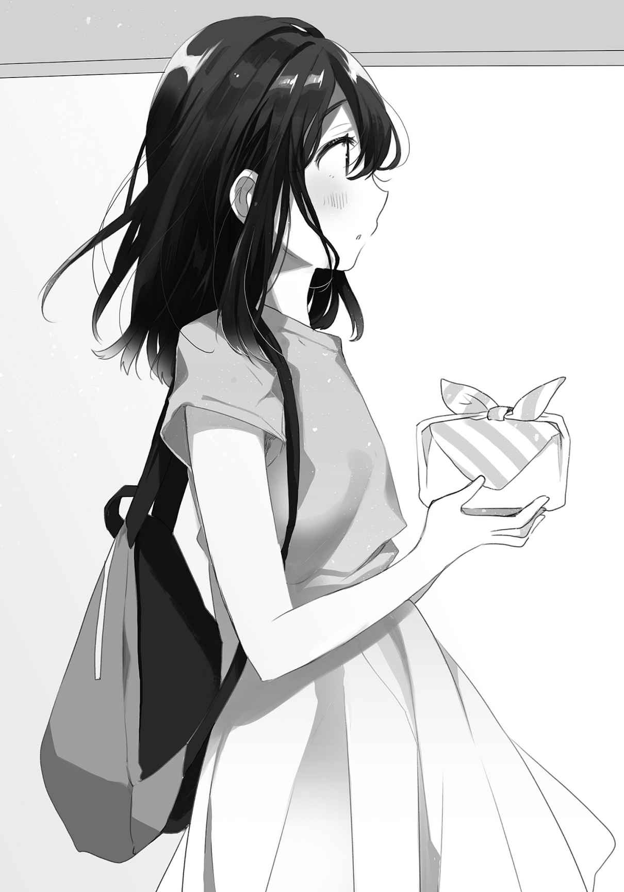「あ、もうお昼ご飯食べちゃった……？」
妹がそろりそろりと、凶暴な犬の口もとに餌でも差し出すような素振りで
定食を食べてやや重い腹回りをおくびにも出さないよう努めながら、喜んでうそぶいた。
「いや、今から食べようと思って食堂をうろついていたとこ。丁度よかったよ」
俺が今から大食漢になればいいだけだ。
「ありがとうな」
小さな頭を
「どしたの？」
「手のひらも匂いついているかなと」
妹の髪に匂いが移りかねない。宙で手をさまよわせて、妹がそれを目で追う。
「それは残念」
「うむ」
「じゃあ、帰ってきてからいっぱい褒めてね」
十九歳の妹が
曇りがちな天気の中で、直視しづらいほどに
「あー……期待しておくといい」
よく分からない言葉が口をついて出る。風船のように頼りなく浮かぶばかりのそれを、妹は素直に受け止めたように
「じゃあ、いただく」
弁当箱を目の高さまで掲げて感謝する。そのまま流れに沿い、ゆるゆる別れようとする。
「がんばってね」
その無邪気な応援に振り返る。
色々とこみ上げて、それはすべてが正しく伸びたわけではないけれど。
「おぅ。がんばるよ」
掲げた腕に力強さはない。でも、自分の中に通っていた芯が乾くのを感じた。
そのまま、建物の中までは姿勢を崩さず歩いていこうと思った。
そうして前を向くと、工場の入り口にはなぜか同僚が立っていた。俺を待っているようにも見える。なんだろうと横に並んだ途端、同僚が低い声で尋ねてきた。
「彼女か？」
食いつき
結局、あの後に出会うことはなかった。電話もかけていない。
それでよかったと、お互いに納得できる日はいつか訪れるのだろうか。
それよりも先に記憶から薄れていきそうで、少し嫌になる。
「おいさっさと答えろ」
「違う。妹」
「なんだ……ああいうのが趣味かと思ったけど違うのか」
「ああいうのってなんだ、人の妹に失礼な」
言わんとすることは伝わるが。
「あれ？ 中学生なのに平日にこんなとこいていいわけ？」
いいんだろと適当に流した。説明するのが面倒で、語り出せば時間がかかる。休み時間はそこまで残っていないので、急いで昼飯を済ませなければいけなかった。
振り向くと、遠ざかって豆粒みたいに小さくなった妹が手を振ってきた。
振り返しながら同僚の視線を感じたが無視する。それから、すぐに食堂へ戻った。
同僚もそのままくっついてくる。
「手作り弁当とか、お前、やるなー」
仕事と関係ないところで感心されてしまう。別に俺がなにかしたわけでもないのだが、妹の手柄を評価されて悪い気はしない。少し得意げになりながら弁当に
「しかしファニーな弁当箱だな」
「……そうね」
一○さんの絵柄の弁当箱なんて今時、どこにあったのだろう。実家か？ いや俺が子供の時にも見た覚えがないぞ。大体世代が少し違う。同僚も知らないようだった、故の発言だろう。
まぁいい、中身は普通だ。精進料理でもなくウィンナーが多めの構成だった。好きなのでよし。ぶつ切りのそれを口に運んでいると、小学校の遠足を思い出した。
「お前見た目より大食いなの？」
「実はそうなんだ」
今日だけな、と
「なあ」
「ん？」
「お前の妹、けっこうかわいいな」
「そうか？」
小説家志望の割に、飾り気のない褒め言葉だった。
それ故、本音が
相手を賞賛するときに着飾る必要なんてないのだ。
俺は回りくどい文章とかややこしい比喩なんて目にするのは大嫌いである。
まあそれはさておき。
うちの妹はかわいいのか。
「……ふふふ……」
実は前からそう思っていたが、身内
そうか。
周りから見てもかわいげがあるか。うむ。誇らしいような、心配なような。
同僚が椅子の背もたれと一緒に、左右に揺れながら笑う。
「五年後が楽しみだ」
「……今とあまり変わらないんじゃないかな」
「ばっかお前、女の子の十代後半の変化は
「……そうだな」
成人するまであと一年もない。それで劇的な変化があったら、確かに腰が抜けそうだ。
「で、いつか俺に紹介してね」
「嫌なこった」
突っぱねつつ、しかし、まあ、と歯切れ悪く言葉が重なる。
妹が、二十歳かぁ。
意識するだけで頭、特に後頭部がぼぅっとする。目の焦点を失うように、周りの輪郭が
更に二十年が
その頃には両親も存命か
想像もつかない。でも少なくとも、もうすぐ成人するんだ。
あいつは大学を出たら就職するのだろうか。しなかったら、どうするのか。
実家に帰るのか、それともこのまま一緒に暮らしていくのか。
妹なら、後者を選びそうな気がする。
続けられれば、それも悪くないけど。
「……違う、違うな」
ぼけた意識を、頭を振って整える。
続けるために、ここで頑張らないといけないんだな。
望み通りに生きることが人生だって、さっき聞いたばかりじゃないか。
だからばくばく食べて、飲み込み、
働く理由はあるのだから、背筋を伸ばして向き合っていこうと決めた。
ちなみに、同期入社である同僚は三ヶ月後に辞職した。
向いていないと分かったそうだ。
そういうことに気づいて行動していける姿勢を、少し羨んだ。
「ハタチだよ、成人だよー」
「……おぅ」
「お酒も
「全部却下」
なんでぇ、と大人の仲間入りをしたらしい妹がこたつに入ったまま抗議してくる。
「捕まるぞ」
「二十歳になったのにー」
まったくもって似合わないからだ。
仕事から帰ってシャワーを浴びて出てくると、妹がそんな話を始めた。朝も祝ったはずなのだが、と頭をタオルで拭きながら笑う。冬に凍える滴の冷たさも、少し
妹の二十回目の誕生日は、室内でも身震いするほどに寒い日だった。今年は暖冬だとテレビで言っていたが、どこの国の放送を誤って受信してしまったのかと思うほどだ。
その中でも夜空やそこに広がる雲まで凍りついたように、雪が降らないのは幸いだった。
「興味あるのか？」
本人の趣味、
妹は人差し指の関節に髪を巻き付けながら、
「お酒は一回飲んでみたいかな。ビールが犯罪的に
「それ、漫画の話だろ」
へへーと、妹が気の抜けるような笑い声を上げる。
「今日飲みたいのか？」
「そりゃあ大人になったしね、うん。節目って感じがあるといいよね」
「じゃあ買ってくるよ。ビールな」
俺も酒を飲む習慣はないし苦手なので常備していない。
しかし妹を夜中に一人で出歩かせるわけにはいかないと率先して動くあたり、なんというか、俺は過保護だろうか。兄というものはこれぐらい当然なのか、世間に意識調査をしてみたい。
でもテレビで連日連夜報道されるような凶悪事件に妹が巻き込まれたら、と心配し始めると気が気ではない。本当は大学の送り迎えだってしたいぐらいだ。……過保護か？
「あ待って待ってわたしも行く」と妹がこたつから飛び出した。衣類の山から上着を引っ張り出してくる。紺色のそれを部屋着の上から羽織って、髪をゴム
「それ俺の服だぞ」
「暖かいから気にしない」
上着の余った袖で身体を包むようにしながら、妹が
「待っててもいいけど」
「いい、いい。にーさんとお出かけする」
早くも関節が凍えているのか、若干ぎこちなく手足を動かす妹が先に歩き出す。
その後ろ姿を見ていてふと、ずっと昔の夏休みを思い出した。
さすがに夜だし冬だし、日傘は持たなくていいだろう。
アパートの階段を降りながら上を向くと、白雲が生まれるように吐息がたなびく。アパートの
だけど今にもうずくまりたいほどの寒さも、少し和らいで感じる。
帰り道と違って、足音が二つだからかもしれなかった。
寒さに負けて、気を抜くと背中が丸くなる妹と共に近場のコンビニに向かう。広い駐車場には隙間が多く、建物から漏れる光を浴びた地面は
「あったかいって、いいことだねぇ」
妹のその顔を見ていると、つい同意したくなる。
「肉じゃがと焼き鳥とポテチも買おうっと」
温度を取り戻して活動的になった妹が
二十歳未満は厳禁と注意書きがあって、鏡面に俺が映し出されていた。
とっくに二十歳を過ぎた俺の、消耗した目もとがまばたきを繰り返す。
誰だこいつと、小さい声で自嘲した。
そのまま振り返ると、入り口やレジに
「チョコレートいるか？」
うろうろしている妹を捕まえて聞いてみた。動いている間に大ざっぱに結んだ髪がほつれて結局、部屋にいるときと大差なくなっていた。妹も垂れ幕や飾りを見て思い出したらしい。
肉じゃがとポテトチップスを抱えたまま、妹が俺を見上げる。
「にーさんが買ってくれるならほしい」
「あいよ」
毎年買っているので、今年買わないのもなんだか気持ちが悪い。自然な流れだった。
「にーさんもいる？」
「じゃあ、
というわけで、チョコレートを二つ選んだのだった。どうせ帰ったら二人で分けて食べるだろうから、味も種類も被らないようにした。それならわざわざ相手に渡す意味あるのかな、と少し考えてしまう。
レジに並んでから、妹が顔を
その動きに合わせて
「職場で
「華のない仕事先でな。そもそも女性が少ない」
女性寮もあるが、住んでいる人は少ないと聞く。大抵は一年か二年で辞めていくそうだ。
俺はあと何年勤めるのだろう。一年か、十年か、三十年か。
そうして働いた先になにがあるかとか、そういう悩みは俺と無縁だった。
なにを成そうとも最後は死ぬ。だから、自分の価値に
働くのだろうか、と不穏なものを感じたがレジで自分の番が来てたち消える。
あの小さな妹が数年後には社会に出て働くなんて、なにかの冗談みたいだ。
会計のついでに妹の要望で焼き鳥も買って、温かい袋を妹に、ビールとチョコの入った袋は俺が持って帰路に就いた。あったかいはいいことだ。妹がそれを感じるなら
帰ってから肉じゃがを温めている間に、ビールとコップを用意する。体育座りのまま差し出してきた妹のコップにビールを
「じゃ、一応。かんぱい」
「ぱーい」
掲げたコップを合わせる。子供が飲酒ごっこでもしているみたいだ。
妹が顔をコップの縁に近づけて、「うぇぇ、匂いきつい」と飲む前から顔をしかめる。それ、子供の嫌がり方だぞ。そう言ってやりたくなる顔だが、ムキになって一気飲みなんてされても困るので静かに見守る。顔を引いては寄せて、飛び込みの決心でもつかないかのようだ。
やがて匂いにも少し慣れてきたのか、コップに唇が届く。そのまま口をすぼめて、熱いものでもすするように少しずつビールを吸い込む。ちゅぞぞぞ、と最初は順調に吸っていたがそれもすぐに止まる。妹の背筋が伸びて固まり、
こちらもちびちびとビールに口をつけながら、妹の反応を観察する。
目を見開いたり
唇がミミズのようにわななき、目の下も
「お
「コラ」
飲みかけをこっちに全部
コップを反則で空にした妹の顔は
「おかしいなぁ、成人したのに」
「本当はしてないんじゃないか」
俺の冗談に妹が、怒ったのかもしれないが表情に変化がない。他の顔をしている余裕はないみたいだ。電子レンジが鳴ったので肉じゃがを取りに行く。立ったついでに冷蔵庫を開いて、飲みかけのトマトジュースを持っていった。妹にはビールよりこちらの方がいいだろう。
戻る頃には妹も少し落ち着いていた。「確かに犯罪的な味だった」と妹がぼやいている。それからポテトチップスの袋を開けた。数枚
「わたしこっちの方が素敵だなぁと思います」
「俺もポテチの方が好きだよ」
袋を大きく開いて、間に置く。のりしお味の塩気を久しぶりに味わう。
妹が空っぽのコップを
「慣れたら
「その頃にはお前の顔が筋肉質になっているだろうな」
飲みさしのトマトジュースを渡すと、自分でコップに
「
妹が幸せそうに報告してくる。温かいものを口にしたこともあるが、それ以上のはしゃぎ方があった。ビールをなんとか飲み終えてから、据わりの悪い目で妹を捉える。
「楽しそうだな」
「また一歩大人になったからねっ」
にかーっと、妹が屈託なく喜びを示す。
羨ましい限りだ。
「
言ってからオッサンみたいなことを口走ったことに自己
「若いって、にーさんと三つしか違わないよ」
「三つって結構大きいと思うが」
妹が体育座りのように膝を引き寄せながら、「そうだねぇ」と同意を示す。
そこで気づいたが、妹はまだ俺の上着を羽織っていた。まぁいいか。
「わたしが中学生のときはにーさんが高校生で、高校生になったら今度は大学生で、大学生になったらすぐ社会人で……にーさんはいつも、わたしより先に一歩進んでいる感じだね」
進んでいると言われて、マシな評価を
他にもっと
「あ、だからわたしのにーさんなのか」
妹が
「そうだといいんだがな」
どこかで足踏みして、妹に追い抜かれてしまわないかと不安だ。
目を
二月十四日は世間的にはバレンタインらしい。
でも、俺からすれば二の次だった。
「……なぁ」
「なぁに？」
「誕生日おめでとう」
チョコレートを差し出して祝福する。
それがなによりまず、俺にとっての二月十四日だった。
妹が歯を
俺が社会に出て、そして、妹が二十歳を迎える。
小さいながらも、節目を作る年度だった。
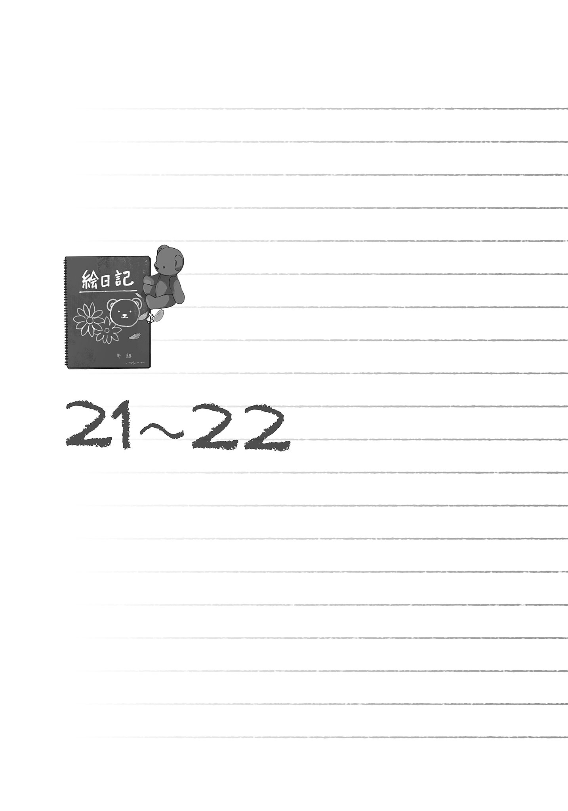予言のように語るとこの時期が一番大事な年であったように思う。それは大きななにかが起きたのではなくその真逆、なにも起きなかったから安定して、かけがえのない時間となったのだ。そのことに気づいて振り返るときまで、俺たちにはたくさんのことが起こる。
たくさん、考えることがあった。
「あなたって結婚しているの？」
いつものように妹の作った弁当を職場で食べていたら、おばさんに声をかけられた。同じ場所を担当して働いているパートのおばさんで、俺より前から工場に通っていた。
妹が二十一歳となった冬を越えて、春の芽吹きがそこかしこに
仕事をしている間はその時間の終わりが地球の裏側にあるように感じられる。
今はその中でやっと訪れた昼休憩の時間だった。
「していませんけど」
普段は見かけると挨拶をするぐらいだが、今日は弁当を開いているところを見られてしまって、関心を持ったらしい。質問からするに、この弁当を嫁が作ったとでも思ったのだろうか。
「そうよね。まだそういう雰囲気ないもの」
おばさんが少し笑いながら言う。今の俺から漂うのはパンの匂いぐらいだろう。出来たてのパンを抱えて運びすぎて腹が熱い。休憩が終わったらその続きか、人手の足りないラインに回されるのか。アルバイトでやってくる学生に指示を仰がれるのは
「でもお弁当持ってくる子は珍しいから」
食堂に行けば安価で定食を提供してくれるのだから、確かに珍しいだろう。
「俺が自分で作ったとは思わないんですか？」
ご冗談を、って反応だ。よほど家庭的なものを感じないらしい。
「一緒にいい？」とおばさんが椅子を持ってきて
子供が三人いるのだが、その長男が学校を出てからも働かないで家にいると聞いた。今では珍しくもない話だけれど、ありふれているというのが当人にとって救いになるわけでもない。
苦悩はしっかりと、その人の重荷となるものだ。
「彼女が作ってくれたの？」
おばさんが弁当に目をやりながら言う。彼女と聞いて思い出すのは、まぁ彼女だ。
だけどその後すぐに妹の顔を浮かべるあたり、
その変化にわびしさを伴わないのが、寂しい。
「妹です」
食べかけの弁当箱を掲げながら答える。今日はチャーハンがほとんどを占めていた。
「あら素敵」と笑ってから、「そうなんだ」とおばさんが
「あなた、実家住まいなのね。妹さん共々うちのやつに
「え？ いえ実家は他県ですし、アパートに妹と暮らしていて」
そう話すと、おばさんが微妙な顔つきになったことに気づく。なにかおかしいだろうか。混乱を招きながらもそのまま、大学に通うのに都合いいから俺の部屋に泊まっているというところまで説明して、ようやく合点がいくような表情になった。しかしこっちの引っかかりは消えない。
家族が、
「でも作ってくれる人がいるのっていいわよね。私作ってばっかり」
おばさんが手のひらを見せて、疲れた顔でおどける。俺は苦笑を返すばかりで、大変ですねの一言も出てこない。吐息の一つ一つに心労が
働いて身体を動かしているときよりも、休んでいるときの方が疲労を強く意識する。
正直、腹が
作業場から聞こえる機械音が途絶えて、不気味なほどに音のない詰め所では吐露するものが空気に紛れない。照明付近を漂う
手近な机に
「あなたは作業しているとき、なに考えてる？」
「えっ？」
「前に聞いたらずっと頭の中で歌ってるって子もいたわ」
あぁいそう、と同意を示して
俺は作業の合間に妹のことをよく考える。そこだけ聞くと変な人みたいだが、兄として心配は尽きない。将来どうするのかなぁとか、妹はなんか色々と大丈夫なのかとか。いつものふにゃふにゃとした態度には癒やされる機会も多いけど、同時に社会に出て平気なのかと不安を
しかしこれは話すとまた微妙な顔をされてしまいそうなので、黙っていた。
口を
「息子にも色々と仕事を紹介してみるんだけど、あ、ここはしてないわ絶対に勤まらないもの。で、してみるんだけど、そんなことやってなんになる、将来に
おばさんが姿勢を崩して机に突っ伏しながらぼやく。
俺がその息子の親でなんになると言われたら金が
俺にはそのどちらもない。しかし金は必要だ、だから働く。それで十分だった。
「やりたいこととか眠たいこと言ってないで、働きながら探せば……」
なんて、息子への不満垂れ流しは休憩時間の終わりまで続いたのだった。
このおばさんも、それから
自分が人並み以上に丈夫であることを、両親に感謝した。
この季節は温度が不安定で、その日の夜は生暖かかった。
一応、拘束時間は夜の七時までとされているが守られたことはほとんどない。酒が混じったようにはしゃぐ大学生の集団とすれ違いながらアパートに帰ると、妹は机に
慎重に扉を閉めて、靴を脱ぎながら、自分が笑っていることを自覚する。
ただ固まって肩や背中にこびりつく疲労が、暖かいものを発していた。
起こさないよう慎重に横を抜ける。ついでにページが曲がりそうなので本の置き方を直しておいた。それから着替えを取って
温度調整の難しいシャワーが熱かったり冷たかったり、極端な温度に目を白黒させながらも匂いがはっきりと薄れていくことに
額を壁に押しつけていると、そのままずるずる滑って眠ってしまいそうだ。
シャワーを止めて髪や
頭を拭き、身体の水滴を拭って着替えると、大きく息を吐く。
汚れを洗い落とした疲労感は、重くも心地良いものだった。
ついでにこっちの汚れもと、空の弁当箱を流しで洗う。作るのは妹担当で、洗うのは俺の仕事。俺が部屋にいればだけど。そして実家に帰るなり、就職先に応じてアパートを借りるなりして妹がいなくなれば、定食とコンビニ飯の始まりか。弁当を止めたら誤解が誤解を呼んで、職場では嫁に逃げられた男とでも評されそうだ。まぁ、さほど間違ってもいない。
洗ってから部屋に戻る。妹から少し距離を置いて座り、正面の壁をぼぅっと見る。
腹が減っているような、それよりもただ横になりたいような。
波に翻弄されるようだった。
そうしている間も俺は考える。悩んでもいる。
実際、今の暮らしはいつまで続くのだろうと。
妹は大学に通うためにここに住んでいるのだから、期限はその卒業までか。だったら今年一年で終わりだ。いや、妹は既に卒業単位を取り終えているのでもう大学に通う必要もないみたいだから、ここにいる理由はないのだ。当たり前のように四月が訪れても同じ毎日を繰り返しているけど、妹はなにか違和感を抱いたりはしないのだろうか。
俺は今の今まで特に考えもしなかった。なにかを意識することなく、流されて生きていた。あぁまたか、とげんなりする。そういう受動的な生き方の行き着く先に
意識して生きるって、難しい。疲れ切っているときは、余計にだ。
そんなことを
「あれ？ にーさん……帰ってたの？」
「うむ、おはよう」
時刻を無視して挨拶すると妹は
涙の温かさにまぶたがふやけるようだ。
正直、感極まってもいないのに涙ばかり出てもらっても
涙が収まるのを待ってから顔を上げると、妹の方も動き出していた。
腰を
成人しているとは思いがたい、柔らかく丸い瞳。
いつも俺を見ていて、そして俺はそれに応えたくなる。
「おかえり」
「ん」
「すぐに晩ご飯用意するね」
本当はずっとパンの匂いを嗅いでいて、空いた腹の訴えもどこか
「いつも言うけど、先に食べていていいんだぞ」
帰る時間が安定しないし遅くもなる。作り置きさえしておいてくれたらいいのだが、妹は笑ったままでまるで相手にしない。「うぇーい」と変な声をあげながら妹が立ち上がる。あれだけ身体を動かしてもまだ覚醒が済んでいないのか、台所へふらふらと向かう。あんな調子でも包丁で指を切った、とか
その妹が戻ってきた。まだ半目だが、口もとはへらーっと
「言うの忘れてたよ」
なんだろうと思い、あぁさっき挨拶したからその返事かと思い当たったところで。
「にーさん、仕事お疲れさま」
「………………………………………」
今が冬のように空気も乾いてないせいだろうか。
その言葉は空虚になることなく、しっとりと
「すごいねー、がんばってるねー、えらいねェ～」
「……恐ろしく安っぽくなっていく」
主に感動が。目玉も吸水されたようにしっかり乾いて、代わりに笑みがこぼれる。
妹も釣られるように笑って、
妹が顔を洗った後に冷蔵庫を開く。その姿をぼんやりと眺めていた。
見慣れると、やはり妹は小さいのだなとその背中に思う。
大学に行かなくなった妹は一日の大半、この部屋にいる。外出は月曜日と木曜日にスーパーへ買い出しに行くぐらいか。時間を持て余しているのか部屋の掃除をしてくれて、それでも暇だと
正直助かっていた。だからそれがなくなれば、また慣れるのに時間がかかりそうだ。
油揚げを
「結んでやろうと思って」
前を向かせて髪を束ねる。その髪の先端が親指の付け根をくすぐってきた。本人の気性がそのまま形となっているように、髪もまた
その髪の感触が、子供の頃のそれと変わらないからだろうか。
結び終えて、首周りの軽くなった妹が軽快に振り返る。
「ありがとね」
妹の柔和な表情が、溶け込むように喉の奥まで
いつか同僚も褒めていたが、
身内の
だから兄としては色々と心配なのであった。
後は飯が出来上がるのを大人しく待った。本当はあまり大人しくなかった。調理の音を聞いて口を
それからほどなくして、妹が出来上がった夕飯を運んでくる。内容は温め直した昨日のご飯に
妹にも成長はあるのだなぁと、しみじみしてしまった。
内容が朝食みたいな気もするが。
具材の油揚げを
「明日も暇なのか？」
「時間がいっぱいあるよ」
妹の方が前向きな言い方だった。それでなにが変わるというわけでもないが、そうか。
いっぱいあるのか、それなら。
「じゃあ、たまにはどこか出かけるか？」
我ながら珍しいと感じるが、そんなことを言ってみる。
妹は大きく反応こそしないが、こちらを見つめてきた。
「にーさんと？」
「俺と」
職場のおばさんの微妙な顔を思い返す。
でも、まぁいいかと引っ込めなかった。
「うん、行く行く」
妹が快諾する。そういうのを見ると案外、出不精ってほどでもないのか。
しかし、こういう反応もおかしいのか？ 普通の妹はこの
……とはいえ。
考えても仕方なかった。俺の妹は一人しかいない。だから、これが『普通』なのだ。
「あ、にーさん明日おやすみなんだ」
カレンダーに目をやって妹が気づく。
「うん、まぁな」
油揚げをかじりながら
「でもにーさん、疲れてないの？ だいじょぶ？」
「その疲れに反逆するんだ」
自分で言っておいてなんだそりゃあであり、妹の顔も
仕事をこなす、当然疲れる。休日はじっくりと身体を休めたい。どれも普通のことだ。
でもその普通が、次の当たり前を呼び込む。いつもの流れに乗ってしまうのだ。
そして俺はそれに気づき、少しその流れに逆らいたくなった。ただ、それだけのことだった。
それから少し
珍しいことに母親から電話がかかってきた。声を聞くのは正月以来となる。
挨拶もほとんどなしに連休は暇かと確認してきた。
「一応、三日ぐらいの休みはある」
残りは当たり前のように仕事だ。もっとも長い休みがあっても暇を持て余すばかりだ。
こういうとき無趣味は時間を薄味にしていると思う。
じゃあ妹連れて帰っておいでと命じられる。
「あ？ ああ、いいけど」
しかし本題はそこからだった。話は妹のことに
相当に厄介なことを淡々と押しつけてくるものである。
「えぇ、俺が？」
お前、と断言して母親が電話を断った。息子と違って思いきりの
今まで流しで「ソースビーム」とか「青のりフラッシュ」と騒いでいた妹が晩ご飯の焼きそばを二皿持ってくる。
しかしそばの上に青のりはかかっていなかった。使えもしない技を
「お母さん？」
「ああ」
電話してきた相手を聞かれたので
「なんて？」
「連休中に一度帰って来いとさ」
「そっかー。んー、そだねぇ」
妹が足を崩して座る。若干歯切れが悪いように聞こえるのは気のせいでないだろう。
妹自身も薄々感じているものはあるのかもしれない。
そこらへんを曖昧にしながら焼きそばをすする。今日はキャベツの他にイカが入っていた。
普段は切ったウィンナーが混じっているのだが、味も結構変わるものだなと感心する。
「おいしい？」
「
あの妹がこんな風に料理を作れるようになるなんて、とことある事に感慨深くなってしまう。
向き合って飯を食っているだけで感動して、と我ながら忙しいやつである。
そうして目が合うと、妹はなにも尋ねないで
心から信頼されているのが伝わる、安らいだ表情は俺の胸に熱い滴をもたらすようだった。
もしかすると、妹がいつか結婚したら旦那にこういう顔をするのかもと想像する。
なんでか喉の通りが狭まり、消化も悪くなりそうだった。
食べ終わってから、窓の方を向いて座り込む。そのまま少し考える。
これからどうするのかという話は、少し前に妹自ら語った。
ここにいると。順番が逆になってしまったが、既に聞き取り済みなのだ。ただそれを両親に報告して、果たして納得するかは別問題となる。母親が聞きたいのはもう少し視野の広い展望についてだろう。大学を出てからどうするのかというところが肝要なのだ。
なんとなく、このまま居座るつもりなんじゃないかという空気は感じる。
それは親として、アリなのか？
そこらへんを問われると、俺と妹は困ったことになりそうだった。
「にーさん」
「ん？」
呼ばれて顔を上げると、妹に不思議そうな顔をされる。お前が不思議だよとばかりに。
「お仕事の時間でしょ？」
言われて、首を傾けて壁掛け時計を確認する。思ったより時間が
「おっとそうだ。じゃあ行ってくるけど、戸締まりには気をつけろよ」
「うん」
「誰か来ても開けなくていいからな、俺は鍵持っているんだし」
注意すると、妹が
「それ、毎日言ってるよ」
「毎日働きに行くからな」
そういうことではなく、と妹が言いたげに目を
「仕方ないだろ、お前一人なんて心配だから」
いざとなったときに危険から身を
「いつまで
お父さんみたい、と妹が笑う。前にもそんなことを言われた気がする。
それも事実ではある。だが泥棒の類だけでなく暴漢が妹に
全部ひっくるめて、俺の妹だった。
弁当を受け取ってから玄関に向かう。妹も見送りについてきてくれた。
「がんばってね、行ってらっしゃい」
そう励まして、両手で背中を軽く押してくる。一歩、足が前へ出る。
服越しながらも背中に残るその感触に、しばし、意識が溶ける。
立ち止まって享受したそれを、目を
振り向くと、妹が若干心配そうに眉を寄せていた。
「どうかした？ 背中痛くなかったよね？」
「いや」
「えぇ？」
「痛いと感じるぐらいに
えぇぇぇ、と妹が
「そういうことじゃない」
「にーさんがいつも物足りなそうにしてたのは、もしかして」
「……俺、そんな顔をしてるのか？」
とにかく背中を
「グーで？」
「いや平手で」
妹の小さな手なら大丈夫かもしれないが、背筋を痛めるかもしれないしなにより、妹が手を痛めては困る。当然のように心配するのは兄の務めだが、しかし、過保護かなと少し思わなくもない。本当に少しだけなので、きっと大げさなほどではないのだろう。多分。
しかしなかなか
「うわっ」
服を背中側からめくられた。そして驚いている間もなく、ばちんと平手が
「あいっだっだ、だ」
思わず前によろめくぐらいの衝撃はあった。しかも平手打ちは二つ降ってきた。掲げた両手をそのまま振り下ろしたらしい。服を直した後も、背中と生地が
「これでいいんだ」
「い、いいの？」
妹がちょっと引いている。だからそういう方向性ではない。
「俺もなにか背負っているんだと、そう思わせてくれるんだ」
そうすれば常に現実味を希薄に感じる毎日が、もう少し晴れてくるかもしれない。
ようするに働く動機。生活のためと言うが、働くのだって生活の一部なのだからなんだかおかしい話だ。金を
だから妹との生活のために働こう、と思えばいい。
妹
「にーさん……」
「うん」
「はじめの一歩読んだ？」
「……そういやぁ、こういうのあったな」
言われて気づく。別に意識したわけではないが、そこらへんに影響されていたようだ。
弁当の中身はチャーハンに冷凍食品のシューマイ、卵ともやしの
それでも感謝でいっぱいになりながら口に運ぶ。食べながら妹のことを考える。
俺はそればかりだ。
昼寝でもしているのかなぁとか、実家で待ち受けていそうなものとか。
食べて感動してハラハラして、思う。
離れて生きていけないのはむしろ、俺の方なのかもしれないと。
言いつけの通りに五月の連休に実家へ帰ると、表の駐車場で車を洗う
「ただいま」と妹と声を
俺たちが
家の中では玄関に母親が立っていた。化粧の途中なのか、眉毛が片方薄い。
軽く挨拶を交わした後、あんたは寝るとこ居間でいい？ と聞かれたので「いいよ」と言おうとしたら、妹が割り込んできた。
「なんで？ にーさんの部屋は二階にあるよ」
あれあんたの部屋、と母親が言うと「うんそう」と妹が
「わたしとにーさんの部屋ね」
ね、と妹が俺に笑いかけてくる。「そうだけど」と、母親の反応を
母親は、予想通りに微妙な顔となっていた。困惑の混じった複雑な感情が渦巻いているようで、その一端が小じわという形で薄い眉毛を
妹の見た目が成人のそれかはさておき。
妹が二階へ上がるのでそれに続こうとしたら、ちょっと待ちなと母親に呼び止められる。不良に首根っこを
……聞くような雰囲気のときがなかったので、そのままなぁなぁで帰ってきてしまった。
でも、正直聞くまでもない。
「まだしばらくは一緒に住みたいってさ」
簡単に妹の意思を告げて、二階へ逃げる。母親が追ってくることはなかった。
階段を上がりきる前に振り向くと、母親と目が合う。
そうだと思ったよ。声なき母親の口は、そう動いたように見えた。
それを少しだけ引きずりながら部屋に向かう。子供部屋と呼ばれていたそこは、俺を一歩入ったところで驚かせてくる。俺と妹が使っていたときとほとんど変わっていない。高校時代の妹がそのまま住んでいたはずなのに、私物がほとんど増えていないのだ。
あのときの景色が、窓から
「くーまん、お待ちー」
妹は早速、
他に電話する相手も精々、両親ぐらいで急ぎの相手というわけでもない。
妹の交友は家族に終始していた。あとはくーまんか。それは別に欠陥というわけでもない。
友達が百人欲しいやつもいれば、数人で満たされるやつだっている。
本人が満足する人間関係を構築できているなら、口を挟む意味はないのだ。
部屋に
妹はそれが当たり前だと考えているようだ。そりゃあ、普段は同じ部屋に住んでいるしそっちの方が普通といえばそうなのだが、両親がどう考えるかは別物だった。二十歳を過ぎた
分かって今、ここに
それから夕飯の時間まで、横になったり
働くのが好き、というわけではないが休日の消化も苦手だった。
妹も似たようなものらしく、部屋で横になったり、なにか思いついたようにノートを取り出してメモ書きしたりしていた。なにを書いたんだろうと思い
「いけませんよにーさん」
「見られてまずいことでも書いているのか？」
「……うーん」
なぜか首を
「悪いこと、ではないような……悪くはないよねぇ、たぶん」
「俺に聞かれても……」
困るのだった。
なんだったのだろう。
分からないが、首を伸ばして
その日の夜も
居間に光が見えたので引き寄せられる。両親がテレビを観ながらお茶を飲んでいた。
湯飲みを
「太るぞ」と助言したらもう遅いとの返事があった。言ったのは本人じゃなくて母親だ。
その母親が茶をすする。そこに妙な間を感じるな、と思っていたら。
あんたたち一緒に
思わず目を
「たち、って俺と妹、あいつが？」
他に誰がいる、彼女もいないだろうにと母親が軽く笑ってくる。それは正解だが。
「するかよ、そんなこと」
当時の妹はどこもかしこもつんつるてんだった。
あれが今やそれなりに成長したのだなと比較すると、つい
バカか俺は。
「俺たちは別に、へんてこ
ただ当たり前に相手を思いやり、尊重し、共に生きているだけだ。
私はね、あんたたちが間違いを起こさないかと心配だよ。歯に
「間違い、いや、なんだ。あのなぁ」
言葉が
間違いはいかんなぁ、と父親が他人事みたいに
あんたが大学生になって家から出ていった後、あの子はあんたの話を一度もしなかったよ。
母親がそう語る。
でも進学先にはあんたの通っている大学を選んで、他は検討もしなかったわ。
それを聞いた瞬間、雨に
妹の気持ちを
水分を取りすぎたときのように、胃の底に
なんというか、末期症状のように思えた。
こんなので大丈夫かなと、両親の心配が伝染したようになりながら部屋へ戻る。足音を控えながら階段を上り、扉を開ける。五月の夜、閉じた室内はやや熱を含む。妹は
「にーさん、早く寝なさいー」
「おわっ」
いきなり声が聞こえてきて驚く。順応した目が、妹の瞳の輝きを暗闇に見つける。
「起きてたのか」
「今ちょっと起きた」
そしてまた寝る、と倒れる。うむそうしなさい、と見届けてから
先程生まれた後ろめたさがあるからか、妹に謝りたいような気持ちもあった。
でも今更蒸し返して、変な空気になるのもと思い、自重する。
目を閉じてみても、すぐに寝付けそうにない。飽きて、目を開く。
「なぁ」
声をかけると、すぐに返事が来た。妹が寝ていないことには気づいていた。
「なぁに？」
「お前、やりたいこととかあるの？」
夜の中で、妹の目が流れ落ちるように動く。
「明日は買い物でも行こうかなーと考えております」
「いやそうじゃなくてもう少し先。仕事とか、そういう話」
大学を出て働く気があるのか
「仕事……学校出たら働かないと、だめだよねぇ」
「うん、まぁ……それで、やりたい仕事とかあるのかなと」
期せずして母親の注文通りに進路を尋ねることになる。
妹は、小難しい顔になっていた。珍しくその柔らかな顔つきに
「あるのか」
主体性の薄そうな妹にもあるものだなと
希望は、昔から、そして今に至るまで俺に芽生えないものだった。なにかしたいとか、夢とか目標とか、展望を描く
「どんな職種に就きたいんだ？」
まさか俺と同じパン工場がいいとか言い出さないだろうな。……あり得そうだ。
問われた妹は言い渋る。
「聞いたらにーさん、笑うし」
「身内の夢を笑うつもりはないよ、よっぽど
言って、笑うしかないような夢ってなんだろうと考えてしまう。
たとえ実現不可能に思える絵空事であっても、そこには人の
その尊さと、
俺の反応を受けて、それでも言い渋るようにしばらく妹は黙っていた。無理に聞くようなことでもないし、希望があると分かるだけで十分なのだけど、
そうして
決意など
「わたしはね」
「うん」
布で口を
「小説家に、なり、なれたらいいかなぁ、と」
柔らかい妹の声が、耳の中に潜り込むと存外に鋭かった。
「しょ」
小説家？ またいきなりな夢だった。思わず
「やっぱり笑った」
「いや笑ってないだろ、よく見なさい」
嘲笑などする余裕もなく驚いていた。自己主張のさして強くない妹の、意外な願望といえる。知らないことはないなんて言うつもりはないけど、大概、知っていると思っていた。
「見えない」
「そりゃあ、
でもこっちは妹の表情が見えなくとも想像できる。不思議なことだった。
妹だって本当は俺の顔ぐらい想像できているだろう。
「そうか……うん」
曖昧に
「小説家か……」
そういえば。
そんな夢を語って職場を去った同僚を思い出す。
最近は小説家を目指すのが
暗がり、横を向いて問う。
「でも大丈夫か？」
「なにが」
「いやだってお前、日記も一人で書けないのに……」
小説の方が日記よりずっと長いぞ。
「もーぅ！」
妹が跳ね起きて、こっちへしゃかしゃか
「いーつーのーはーなーしーをいーつまーでーもー！」
びたんびたんと
頭までかぶってしまったので分かりづらいけど。
「どんな話書くんだ？」
「内緒」
「ちょっと読ませてみてくれない？」
「ぐげげ」
最初、急になんだ？ と目を泳がせる。いびきのフリだと、少しして気づく。
いびきというより、濁った笑い声みたいだった。
「投稿とかしているのか？」
「……まだ」
そこで妹が目もとを
「書いてはいるんだろ？」
まさか１枚も書かないままなりたいと思っているだけってことはない、だろう。多分。
夢を見ているだけではおねぼけさんである。頭の中からその夢をひねり出すために、俺たちは人生や時間を
「書いてるけど……講義のときとかに」
「こら」
軽くたしなめつつ、じゃあと続ける。
「賞にでも送ってみればいいじゃん」
気軽にそんなことを言ってみる。
本当に、なんの気なく。
妹が軽率さに
「落ちたらどうするんだよー」
「どうするって……また書くしかないんじゃないか？」
一度の投稿で認められるほど、運の
「落ちるってことは才能ないよって言われているようなものだし……」
「才能あるから賞が取れるとは限らないさ」
受け手との相性、言うなれば縁というものも関係する。
極端な話、見る側に問題があったらどうするのだ。
だから一度や二度で
……というような
あの本の作者はあんな明け透けに心情を吐露して反発を生まないのだろうか。
俺だって兄だから、兄をやっている。この妹の兄じゃなかったら、今、兄やっていないのだ。
……うん？ 改めてみると、混乱してくる。当たり前のことのはずなのに、心の声なり言葉なりにしてみるとややこしさが増すのだ。魂では理解できていても理屈にするのは難しい。
「でも賞取る人は大抵才能があると思う」
「うん、それは確かだ」
きっと俺には想像もつかない思考の海が、その人の頭に広がっているのだろう。
俺はその海に浸ることも
「お前にも才能あるよ。ああ、根拠は別にないぞ。強いて言うと、妹だからだ」
妹だから
「後半がちょっといみわかんない……」とぼやきつつも、妹がへらーっと笑う。
「にーさん」
「ん？」
「わたし小説家もなりたいけど、にーさんと一緒に暮らすのも好きだよ」
「ん……あー……うん」
並列することなのか？ と疑問に思いつつ満足して、やや照れて。
俺もそうだよと、小声で反対に向いて
「まー、とにかく、全部がんばれ。応援する」
「うん」
そして明日からまたがんばるために。
「おやすみ」
「おやすみなさい」
お互いの目が離れて、また天井と向き合う。
しばらく、呼吸も忘れたように、ぼぅっとする。
するとやがて妹の安定した寝息を感じるようになって、それが不思議に安らぐ。
俺に大成する能力はない。でも、この妹の兄として生を受けた。
それは他の誰にもできないことだった。
だから俺はこれでいいと、そう思って
思えば。
いつだって、大事なことは深い考えなしに発せられるものだったのだ。
海の底で大きな生き物が
それが表へと噴き上がって語られるより早く、俺と妹は一緒にアパートへ帰ることになる。見送った両親、取り分け母親がなにを思っているかは想像に
まるで、二人で逃げるみたいに。
嫌な形をした予感に背中をせっつかれるようだ。
社会を、環境を、人の目を
究極的に世界が狭まっていったら、両親だって『外』に追いやってしまうのだろうか。怖くもあり、息が詰まるようでもあって。これでいいのかと、自問自答は嵐のように吹き荒れる。
しかし、それはまったくのムダというものだった。
もし後悔がそこにあったとしても、もう引き返すことはできない。
……いや違う、違うな。
そもそも人生にやり直しなんて
どこにいようと、どこから始まっても。
電車に乗ってアパートへ帰る。
少なくとも、今はまだそこに
玄関で靴を脱ぎかけて止まり、振り返る。
細い肩だ。柔らかい髪だ。そして、俺から離れようとしない瞳だ。
宝物が飾られているようだった。
「にーさん？」
「お前はここにいていいよ」
妹の目が収縮する。
世間ではなく両親ではなく、俺が許す。でも言ってから髪を強くかき乱して、訂正した。
「……違う、違うな、一緒にいてくれ」
受け入れるだけではなく、俺も求めていると意志を示す。
言ってからまるで求婚みたいになっていることに気づいて、ああ、と目の端が白む。
なんとなく、両親の言うところの『間違い』ってやつを見つけそうになって。
だけどそれは妹が抱きついてきたことで、ばーっと散ってしまうのだった。
荷物の落ちる音が、肩にずっしりとのしかかるようだ。
片手で妹の頭を抱き寄せて、ぼぅっと、天井を見上げた。
普段注意して見ることのない天井は低く、手を伸ばして跳べば触れられそうで。
その今にも押し潰されそうな圧力に、ジッと、耐える。
間違いってなんだろう。こうやって妹に抱きつかれることか？
俺たちは間違った方向に進んでいるのか？
じゃあ、正解は誰が教えてくれるんだ？
大人になっても、分からないことに振り回されてばかりだ。それは人が生まれてから死ぬまでずっと続いて、それなら人間っていうのは迷子以外の何者にもなれないんじゃないかって思う。
「……いや違う、違うな」
すっかり癖になったその言葉と共に、目を細める。
誰も道を示さないというなら、迷子になっているかすら分からないのだ。
俺たちは、開拓している。誰も知らない自分自身の人生というものの全貌を暴こうと、見知らぬ荒野を歩き続けている。迷子ではなく開拓者なのだ。
いい言葉だ、開拓者。迷子よりはずっと夢があるように感じられる、聞こえのいい言葉だ。
きっとそういう言葉に、今までたくさんの人が
俺もその一人になろう。開拓するとうそぶいて、知らない場所を無責任に進んでいこう。
たとえ新天地の果て、仮初めの美しさを保つ宝石を埋め込まれた化け物が眠っていようとも。
妹を大切にすることは、間違いじゃないと信じて。
そして四季は巡り、妹は
舞い散る花びらと共に大学を卒業した妹は当たり前のように、俺のアパートにいた。
少なくとも、このときはまだそれが当たり前だった。
愛ってなんだろう。……別に詩人になったわけでもないが、最近、パンを右から左へ運びながらよく考える。作業に慣れて頭を使う必要もないから、脳が暇を持て余しているのだろう。
たとえば俺は妹を愛しているかという話である。
口に出してみろと言われたら舌を
それは無論、家族愛と言うべきものである。しかしこの
相手を大事にすることか。
それとも、相手からもたらされるもので自分が満たされることか。
どちらを大事にすることが、愛なんだろう。
一歩間違えれば思春期のような悩みを
でも、自分から生まれたものを見過ごしていけるほど、俺は己に無関心でいられない。
これからも最後まで付き合っていくのだ、嫌いであれるはずもなかった。
目を
長く固定されて
働き、明日を得る。
大人になるということは差し当たって、金を
「んー……」
妹が
やむなく、こちらから尋ねてみることになる。
「なんだよ、どうかしたか？」
妹が
「にーさんに、ご覧に入れたいものが、ございま」
そこで一時停止する。腹話術の人形みたいに
「せん」
「ないのか」
「した」
過去形になる。それってどっちみち今はないのでは。とてもそうには見えないが。
なにかありそうなので、妹の決心がつくまでじっと待つことにした。
妹は赤い毛玉みたいに
すると妹は少し安心したように首を伸ばしかけて、でもすぐに引っ込めて目を
その仕草が、どこかこそばゆい。
やがて妹が、胸に抱えていたそれをおずおずと
手には、やや分厚い紙の束が
「なにこれ」
受け取りながら聞いてみる。
「……しょーせつ」
「はぁ？」
小説。妹が書いた小説なのか、これ。
指先にずっしり来るそれを、思わず凝視する。
「完成したのか」
こくりと
「身内の書いた小説か……うむ……」
なんだか手に取って目を通す方も気恥ずかしい。小説ということは恐らく漫画以上に、妹の心境や哲学が赤裸々になっている。そこが小説の面白みであるのだがこの場合、それが照れくささに
パンチで右上に穴を空けて、
「えーなになに、タイトルは……」
「声に出すなー！」
妹が飛び跳ねて制してくる。必死さに面食らいつつも注意する。
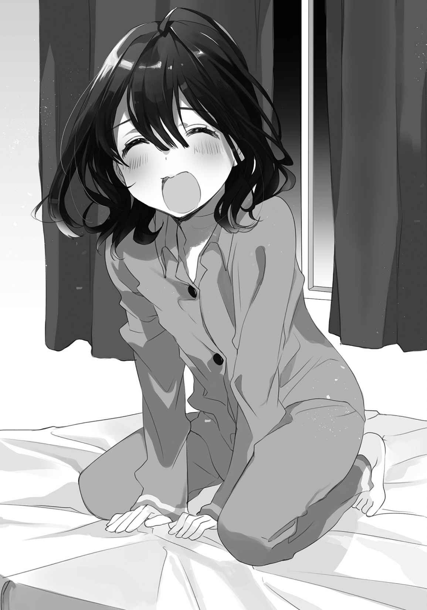「こら、あまり騒がしくしない」
ここは実家でなくアパートで、そして今は夜だ。妹がすぐに落ち着いて
「はんせい」
「うん」
「でもにーさんも悪いと思います」
「え、俺？」
「なんで口に出して読むの」
いけないのと目で問うと、いけないのと目線が返ってきた。いけないらしい。
「ていうか、もう読むの」
「もうって、そりゃあまあ」
夜以外に読んでいる暇がない。応募締め切りがいつかは把握していないが、早く読んで返すことに越したことはないだろう。時計を
「うー」
妹が部屋の隅に逃げて、俺に背を向けて耳を塞ぐ。正座したまま、身体が落ち着きなく左右に微動している。そこまで恥ずかしいなら読ませなければいいのに、と俺は思うのだが妹も他人の目から見た出来映えというものが気になるのだろう。あーちすとの葛藤というやつだ。
首を少し
『魔塔』
大きく印刷されているのはその二文字だった。まとうと読むのか。なんだか渋いぞ。
「これ、シリアスな内容なのか？」
「聞こえません」
「そうか。ところで晩ご飯
「うん」
「これはミステリー？ サスペンス？ それとも恋愛ものか」
読めば分かるということか。
ページ数が印刷されているので先に最後にだけ目を通してみると１２０枚近くあった。気軽に目を通すわけにもいかないようだ。正座して背筋を伸ばし、厳粛な面持ちで向き合う。
妹が耳を塞ぐ仕草に疲れたのか、
「寝るなら歯を磨いてからにした方がいいぞ」
「うー」
「ほう」
「………………………………………」
「へぇ」
「………………………………………」
「ふぅむ」
「あの……反応を口に出すのやめて……」
弱々しい抗議を聞かなかったことにして延々、
で。
時計が結構、くるくる回ったぐらい後。
「読み終わったぞ」
起きているか分からなかったので、声を控えて話しかける。すぐに
瞳には
あと
「どうですか先生」
「いや未来の大先生はそっち」
「いやぁははは」
首を
原稿を丁寧に返しながら、率直な感想を伝える。
「面白かったぞ」
妹の目が開いて輝く。浮かんでいた熱が収束して、ぎらぎらと光を放つようだ。
「誤字あったけど」
「え、どこどこ」
読んでいる間にメモ書きしておいたそれを渡す。ページと行数を
「いっぱいチェックしたのに、おかしいなー」
妹が慌てたように確認を取っている。眺めながら、小説の内容を
内容は高層マンションを舞台にしたサスペンスだった。マンションを現代の塔と捉えた視点から語られる物語で、主人公が様々な思惑を無視して好き勝手に生きた結果、多くの人間に人知れず影響を与えてしまう。そんな話だ。主人公がまた身勝手というか無神経なやつでその上、シャツに死体の肉片や血をくっつけたまま夜の町やマンション内を駆け回るのだから変わっている。そういう人間を描ける素養が妹にあるのだなぁと、不思議な
人畜無害をひた走るような、柔らかさばかり印象に先立つ妹から、
どこから湧いて出るのだろう。人間って、奥深いものだな。
それはさておき最後まで書ききって話が成立しているのだから、間違いなく俺より才能はあった。俺なら原稿１枚書いたところで嫌になって筆を置くだろう。学校の作文だって大嫌いだった。でもそれは、妹だって変わらなかったはずだ。
「日記も自分で書けなかったのにな……」
思い出して、目を
まず難しいとは思うけれど、妹が小説家になったら。
「……なったら」
なにか現状が変わるのだろうか。収入が増えるから生活は楽になるかもしれない。
……それくらいか？
なにも変わらないように思えるのは、俺の想像力の欠如故かもしれない。
ふと、昔の彼女のことを思い返す。
彼女に夢中であった間、俺はその
しかしその永遠は今、この部屋に留まっていないのだった。
妹が自作小説を賞に投稿してから二ヶ月が
これが始まりで、最後でないとしても妹の人生の今後がかかっているのだ。
作品を実際に投稿してから、妹は小説を書くことを隠さないようになってきた。部屋の隅に小さな机と共に置かれた中古のノートパソコンは、ネットにも
そこから俺が帰ってきたのを察して小走りで出迎えてくれる様は猫みたいだった。
「まだ結果出てないのに、次のも書いているんだな」
「落ちたらまた送らないといけないし」
「……そうだな」
落ちているさと言い聞かせる、予防線のようなものか。
どれくらいまで本心かは
妹の夢のために、なにかできることはないだろうか。作業を手伝うことは難しいが、必要な資料を集めるとか内容の相談……されても俺の意見では参考にならないか。およそ文学的素養のない男である。言い分に華がないとか、面白みがないとか散々言われたからな。
そうやって、彼女のことを少しだけ思い出す。
自分は、このままこうやって
やるべきことの絞られた妹の背中は相変わらず小さくて、でも芯があるように見えて。
不安のようなものさえ、自分に抱いてしまうのだった。
こんな俺が妹のためにできることは、今の生活を維持すること、それぐらいだ。
働いて養うこと、それが一番の援助になる。
たとえその道の先に拾える夢がなかったとしても、妹が行き着く先まで付き添う。
他の選択は俺にない。そんな俺だから今、妹と一緒に暮らしているのだ。
「ねぇにーさん」
「ん？」
「わたし、小説家になれるかなぁ？」
妹はたまに、俺にそうやって確認するように尋ねてくる。
そういうときの妹の瞳を安心させるため、俺は決まってこう言うのだ。
「なるんだろ？」
自らが成し遂げることではないから、なれるとは気軽に言えない。
でも妹の才能と、築き上げるものは信じる。
「そーだね」
妹が袖もないシャツなのに腕まくりの仕草をする。細く、頼りない腕がＬの字を描いた。
今も俺の中では小さな妹のイメージが先行する。
だけど今はその妹が、一人でなにかをやり遂げようとしている。
……
それはきっと、受け入れるべき成長なんだろう。
……だけど。
立ちこめそうになるものを、頭を
今は少なくとも、後ろ向きなものを抱かずに妹を応援する時期だ。
妹の夢のために、金を
美しい言葉がいっぱいで、空いている胸が埋まる。
漠然としている働く理由というものが、薄い輪郭を得るのだった。
工場で腰が痛くなると、妹のためパワーに頼ることにしている。
季節柄、暑さに負けそうになって
妹のために働いている。ここにいる。生きている。
大体の事柄は、不満は、
人間は
そして俺にとって最たる動機となり得るのはやはり、妹なのだった。
兄として申し分ない。しかしこのことを周囲に公言すれば恐らく、気味悪いもので見られることだろう。以前に一緒に働いていたパートのおばさんの視線は忘れがたい。
それぐらいの判断は出来る程度に、俺は、世間の常識を捨てられなかった。
そして懸命に擬態して
「………………………………………」
今日の朝、妹は生焼けの卵焼きを作りながらこう言った。
『一次選考の通過発表の日なの』
『そうなのか』
『なのです』
なぜか腕をぐるぐるしていた。いてもたってもいられないというところか。
『結果分かったらにーさんにメールするね』
『うん』
吉報を待っているぞ、とは出かける
そんなわけで昼休み、携帯電話の電源を入れてみる。他人事ではないので、心臓が痛い。
妹から送られていたメールを、緊張混じりに開く。
『落ちてました(〉_〈)』
タイトルだけで報告が終わっていた。顔文字こそくっついているけど、短い。
見た瞬間、目玉だけその場に残して頭が遠くへ行くような、
「そっか。……残念だったな」
くっついている顔文字になにが込められているのか察することが
若くねーわと、頭を
迷った末、電話は控えておいた。結局悩むと、自分ならこうであってほしいとか、基準が自分になる。本当に相手のためを
こちらも影響を受けてか、仕事の
アパートを前にして、手土産の一つも買って来ればよかっただろうかと手遅れを思い当たる。引き返して菓子を買ってくるのもなんだ、と
空気が重くならないようにと祈りつつ、扉を開けた。
玄関に立つと、妹がいつもみたいにちょろちょろと出迎えてくれた。
頰に泣き跡は見られないので、
「ただいま」
「おかえりー」
妹がやや照れたようにはにかんでいる。どう出迎えていいか、妹も悩んでいたようだった。
挨拶もそこそこに、話題は自然、落選の話になる。
「残念だったな」
靴を脱ぎながら切り出すと、妹が小さく
「うん……でもまー、仕方ないよね」
「面白いと思ったんだけどな」
「うんー、実はわたしもちょっとは自信あった」
だからがっくり、と妹が大げさに
ここは笑っておいた方がいいんだろうなと、合わせて肩を揺らした。
波はある。でもそれを最小限にやり過ごそうと、声に出さずともお互いが動いていた。
夏の夜にしては、
夕飯を取って片付けを終えると、妹は滑り込むようにパソコンの前へ向かう。
「隠れてやらなくなったな」
「にーさんが読んでくれたからちょっと度胸ついたよ」
「ほほう」
試してみたくなる。妹がパソコンに向き直り、たっぷり油断が見えたところで。
「わっ！」
後ろからおどかすと、妹は
「まだまだみたいだな」
「がるるる」
妹がかわいらしく牙を
小説家なんて言葉、無縁そうな幼い口もとだ。
「そういえば、聞くのをなんとなく忘れていたけど」
「えっ？」
「なんで小説家を志そうと思ったんだ？」
なりたいとは以前から聞いているが、なんでとまでは聞かなかった。
妹はなにか言いそうになるも、
「うーん……内緒」
「内緒？ にすることなのか？」
俺の問いの重ねに、妹は笑うばかりで曖昧にする。
「なったら教えてあげる。ヒントはにーさん」
「はぁ？ 俺？」
「だってわたしのじんせーは、にーさんでほとんどだもん」
妹としてはなんの気なく、当たり前に、
日本語的にやや怪しい感じもするが、そんなこと指摘するのも野暮であり。
そしてなにより、照れてしまっていた。
俺の人生が妹に向いているように、逆もしかり。
連絡してこなくなった親の姿が脳裏を
「印税で億万長者になったらにーさんを養ってあげるから」
「は、ははは」
「あ、信じてない」
「いや、そうじゃなくてな」
妹の夢が
俺が、妹に世話されるなんて。
「そうなったらお前をお姉ちゃんって呼べばいいのか？」
それから、ふにゃあっとした苦笑いを浮かべた。
「似合わないよねえ」
「うんうん」
「そうでもないって言ってよー」
唇を少し
番組の内容はほとんど頭に入っていなかった。
他愛ないやり取りながら、それがぐるぐると頭を巡る。
妹が俺を養えるぐらい、自立したら。
今は冗談でも、もしもそんなことになったら。
妹を養う必要がなくなって、俺に残るものは惰性だけだ。
惰性で生きること以上に無意味な人生って、恐らく存在しない。
意識すると、どかどかどかと、肩に雨か雪でも降り積もるようだった。
働きたいわけじゃない。
そこから解放されたら楽にはなれる、けれど。
本音から逃げなければ。素直に喜べそうもなかった。
そこに不安定な気持ちを背負い込む自分がいることに、気づいていた。
夜中に目が覚めると、薄明かりが部屋の隅に見える。パソコンの画面の光だ。
自分より早く寝ない妹に、目の
「まだ寝ないのか？」
声をかけると、やや猫背の妹が振り向く。光を浴びた顔の右側が目立つ。
「あと１ページ書くと丁度１００ページになるから」
「ふぅん……」
まだ少し寝ぼけているためか、しっかりとした返事がしづらい。
「ちゃんと昼寝もしているからだいじょーぶだよ」
「そうか」
「にーさんが働いてる時間にちょっと心苦しいけど」
「ははは……でもまぁ、なんだ。早く寝た方がいいぞ」
忠告してから
その硬質な音は、頭の中のものを直接押してくるようにも思えて。
聞きながら、徐々に意識が暗く埋まっていく。
妹は夢をこの狭い部屋で育む。
俺はそんな妹を支える。
どちらにも、ここを居場所にする強い理由があることに、
この
「ぬぁぁー」
妹が頭を抱えてぐねぐねしている。苦難……に陥っているのかな？
悲鳴がかわいらしいので冗談のように聞こえる。
スランプの大げさぶりは既に大作家の風格だった。いや、実際は知らんけど。
「どうした大先生」
俺が解決できるとは思いがたいが、一応聞いてみた。
妹が狙う新人賞の応募締め切りは四月上旬と聞いた。去年と同じ賞に送るようだ。理由として、妹はそこが大手だからと答えた。作家として食べていくにはやはり大手からデビューした方が確率は高いと思う、みたいな話をしていたことがある。
まさかこの妹からそんな堅実な答えが返ってくる日が訪れるとは思わなかった。
そもそも小説家を目指すということ自体が手堅いかはさておいて。
「ぬぁぁー」
そしてまだ苦悩していた。どうも聞こえていないようだ。
「おーい」
パソコンと妹の間に割り込む。大苦悩の妹の目が、俺を捉えた。
その表情は、日記を書けないで俺を見上げた子供のそれと
「オチが思いつかないの」
「オチ？」
「話の落としどころがなんか、このままだと起伏がないっていうか地味かなーって」
「ふぅん……」
「ダイナマイト……爆発……うーん」
なにやら物騒なことを口走りつつ、妹がうんうん
画面に映っていた原稿をこっそり
ファイル名から察するに二作目のタイトルは『秘宝』のようだった。
また渋そうなタイトルだ。
果たして妹は、どんな願いを込めて名を冠したのか。
そんなこんなで二作目を投稿して、三ヶ月後。
七月に一次選考の結果が発表されてそれを妹が報告……去年と同じ流れだ。結果まで一緒ではないかという気さえする。そして変化がないのはこちらも同じことで、目の前でこなしている仕事に変わりばえはない。運ばれてくるパンの種類が変わるくらいだった。
働く人は流動するように移ろい、パンも流れる。留まるのは、俺だけだった。
昼休みに妹のメールを確認する。おいおいおいここまで一緒か、と苦笑いを浮かべつつ、少々の覚悟を持ってメールを開く。まばたきが自然に多くなっていた。
で。
『落ちてませんでした(〉_〈)』
「おぉ……おぉ？」
もの
履歴を遡って確認してみると、やっぱり去年とほとんど一緒だった。
この顔文字ってそんなに万能なのか？
「ま、なんにせよ……よかったよ」
今日、家に帰ってもお互い暗い顔にならないで済みそうだ。
仕事を終えて家に帰ると、妹が仁王立ちで待ち受けていた。
「ふぁふぁふぁ」
妹が得意げに……得意げ？ に笑う。腕まで組んで、子供が背伸びするようだった。
「おめでとさん」
頭を
「でもここからだよね」
「うむ」
「祈りは欠かさないぞー」
うにょにょー、と指先を
選考を通過して上機嫌故の奇行だろうと、笑って流す。
明日もやっていたら少し考える。
「ははは……」
笑い声が歯の間から空気のように抜ける。
軽々しいものだった。
そう、大事なのはこれからだ。
俺は、本心から妹が小説家になることを願っているのだろうか。
今はまだその先にあるものが
このまま進んでいけばいつか、自分は曇るのかもしれない。
たとえば、今、俺の足は痛くない。
だけどちょっとした不注意で転んで
そうした予感が結実するのに、時間は一ヶ月もかからなかった。
二次選考の結果が公表されるよりずっと前に、妹の携帯電話が鳴ったのだ。
妹は最初、誰からの電話か分からなかったようで「はい」と首を
「あのねのね！」
「お、おぉ」
電話の終わった妹が、両腕を振り上げながら興奮で回らない舌を無理にぐるぐるする。
話が飛んで途切れてと勢いばかりで大変なことになっていたが、
面食らい、目玉を
口に含んだ夕飯の一切が無味となったのも、当然だった。
それから二ヶ月ほど
その男からかかってきた電話を、今度は前のめりに妹が受け答えする。俺もそこまで来ればさすがに緊張して、唾が引っ込むほど顔を硬くして結果を待つ。ややあって、電話を終えた妹が顔を赤くしながら結果を発表してくるのだった。
それを受けたときの自分の意識というものは、後頭部よりやや上にあったと思う。
自分を
なぜだろう？ 身内の人生を左右する大事な案件なのに。
まるで痛みを避けるように、距離を置いていたのだった。
妹は特別賞だか奨励賞だか、そんなものを受賞したらしい。大賞とはいかなかったが、作品が本となって世に出ることは確実のようだった。つまり、作家になるわけである。
おぉお、と聞いた瞬間に目玉が裏返りそうになった。
それから、授賞式に呼ばれたので東京まで来てくれとのことで、妹は大いに慌てた。
「東京なんて行ったことないよー」
「いや俺もないよ」
バタバタする妹を前にして俺も動揺を隠しきれない。田舎者
「とりあえず、電話は変えないとだめだろうな」
目の端に映ったそれについて提案すると、妹が興奮も冷めたように目を細める。
長期にわたって東京に滞在するなら、電話連絡は欠かせない。だけど妹の古い携帯電話では、携帯できない。へたれきっていて電池が数分しか保たないのだ。
「でも……」
「機種交換しても、前の電話は置いておけるんだぞ」
「うん……」
妹にとって大事なのは、電話としての機能でなく友達のくーまんだろう。
電話が残るなら、交流は途絶えない。そう説得して、機種変更を納得させる。
以前の妹ならそれを受け入れなかったかもしれない。でも、
提案しておいてなんだが、据わりは悪い。
それでも兄としての立場を取り
次の休日、妹と連れだってショッピングモール内にある電話屋（こういう言い方が適切かは分からない）に向かう。妹は電話を選ぶのを十秒前後で済ませてしまった。なんでもよかったのだろう。電話屋が色々と聞いて、勧めて、契約するのもすべて俺が
これで大丈夫だろうか、ちゃんと編集者とやっていけるだろうかと心配になってしまう。
……でも同時に、そういう妹の姿に落ち着くものを覚えていたのも、確かだった。
多少の時間がかかりながらも機種交換を済ませて、前の青い携帯電話を返して
「こちら、バッテリーと充電機器の接続部分が弱ってますね」
「え？」
「充電して電話本体が熱を持つようになっているみたいですし、危ないかもしれません」
その忠告が、妹の顔に影を落としたのは語るまでもない。
家に帰るまでの間、妹は新しい携帯電話に見向きもせず古い携帯電話を握りしめていた。機種変更を勧めた手前、責任を感じる。なんと声をかければいいのか。気にするなよ、とも言いづらい。なるかは分からないが、火事に
結局、無言のままにアパートに帰った妹は、精彩のない笑顔でこう言った。
「火事になっちゃったら、大変だもんね」
そう
なにかが始まり、そして古いものが
決して、好ましい変化とは思えなかった。
それから妹が部屋にいないとき、その青い携帯電話を手に取ってみる。
友達を失った妹は、今、落ち込んでいることだろう。
だけど。
俺が彼女との出会いや別離を薄れさせていくように、いつかは妹も、その痛みや思い出を忘れて心からの笑顔を浮かべるのだろうか。
想像して、ゾッとしなかった。
授賞式の当日、当たり前だけど俺はいつものように工場で働いていた。妹は東京までついてきてほしいという顔をしていたけれど、仕事を放り出して付き添うわけにはいかなかった。
……いや。違う、違うか。
本当は、休むこともできたかもしれない。
できたのに、やらなかったのだ。
なぜ妹についていなかったのか。意地のような、惰性のような、決して前向きでないものばかりが思惑と共に渦巻く。後ろ暗いものが内臓を縛り、吐息に胃液の味が混ざる。
頭を空っぽにした作業の
「東京か」
テレビの中にしか見たことがない都会に、今、妹が一人でいる。
自分より先を妹が歩いている感覚は、酔いでも起こすように器官を揺さぶるのだった。
今頃、授賞式の最中だろうか？
妹の頭上に光り輝く、過剰な照明。そして、虹を描くように広がる夢。
生きることに根を張りすぎた俺には、無縁すぎて。
仕事の区切り、昼休みを迎えて天井を見上げる。
いくら工場の天井を見つめても、単色で、夢なんか見えやしなかった。
夜も
妹からの電話がかかってきたのは、なにをするかと迷っていたときだった。
部屋の隅に残された、昔の携帯電話を
「はい、もしもし」
応えて、妹の返事が来る前に
『あ、にーさん。こんばんわです』
「おぅ」
『いま授賞式終わって、お祝いにご飯食べに連れて行ってもらってる』
「へぇ……式は、どうだった？ 緊張したか？」
『めっちゃくちゃしたー』
そう答えつつも声はやや弾んでいた。高揚も、多分に含まれていた。
それはそうだろう、夢が
『壇上ったところで足がくがくしてた！』
「だろうな」
俺が壇上なんて上ったのは、高校の卒業式が最後だ。大学の卒業式は不参加だ。
『でもなんか……夢みたいだった』
「そうか……でー、ほら……話す相手とかいなくて
心配するというより、そういうものを期待している自分が少なからずあった。
手首や首筋に流れる血が、
『うーん』
「ん……？」
『にーさんの知り合いがいたから、んー、ちょっとだけ平気？』
「……知り合い？」
誰だ？ 出版業界に
『このひと』
そう
「あ」
ここに妹と一緒にいるということは、本当に小説家になったのか。
混乱と困惑が混じり合う。
『にーさんと同じとこで働いていたんだよね？』
「うん。お前のこと、見る機会があったから……覚えていたんだな」
あの頃から妹の外見に変化がないのかもしれない。
『電話代わってって』
「え？ あ、あぁ」
知り合いかもしれないが別段、話すことはない。
『よぅ』
妹の声が野太くも浮かれたものになる。
「あ、久しぶり……」
『お前、まだあそこで働いてるの？』
真っ先に、近況を尋ねてくる。嫌なものを感じつつも、正直に答える。
「ああ」
『へぇー』
予感は、嫌なことに限り的中する。
そうした何気ない反応の中に嘲りが混じっているように感じたのは、俺の方に原因があるのだろうか。
「妹に代わってくれ」
『はいはい』
そして、俺や妹の目の前から消えろ。
そう続けたくなった。同じ職場にいるときも別段、仲がよかったわけではない。
声が妹に戻る。
『にーさんは仕事終わり？』
「ああ」
『えらいねぇー』
「別に……」
『じゃあ、他にもいっぱい話したいことあるんだけど、えっと、帰ってからの方がいい？』
「そうだな……直接聞かせてもらった方がいいか」
時計を確認する素振りを見せる。電話越しだから普通は伝わるはずもない。でも、なんとなくそういう空気を察することができるくらいにはお互い、相手のことを知り尽くしていた。
でもそんな妹も、今の俺がどういった心境に立っているかは、分からない。
「じゃあ……楽しんでこい」
『んー……うん』
気乗りしないであろうことが分かりながら、電話を早く切るためにそんなことを言ってしまった。切る。電話を放ってから、疲労を壁のように正面から押しつけられて、
秋も深まりだした夜は、窓を閉め切っていても苦にならない。ろくに拭かないままバスタオルを頭に載せて、
俺には、仕事があった。だから選んだ答えに誤りはない。
俺がここに独りであることに、間違いはないはずだった。
それでも今夜の疲れは格別だった。壁の柱にでもなったように胴が硬く、他人事のように重い。
静まり、声を発しない喉と唇。胃の底で胃液が
身体を抱くようにして
ここに妹がいないのは、正しい。
けれど、多くのものが欠けたように思う。それはここ数日間のことだけではなく、もっと遠くのことを見据えた上での、喪失の予感も多分に芽生えていたからだった。
妹との間に、太く
その向こうに乗った妹が加速して離れていき、俺とどんどん距離ができていって。
でもそれを埋めることはできなくて、いつか遠くの小さな影を目で追うのがやっとになる。
周りから
その歓声が綿を含んだように
「……ああ」
そうだ。
そうだったな。
うちの妹はけっこう
あぐらを
今まで出番のなかった、妹の携帯電話が騒がしくなり出したのは秋の終わりを肌で感じだしたような頃だった。妹の処女作は二月に出版されるとのことで、原稿の改稿やらなんやらで編集者との打ち合わせが
足の指先を見つめて、爪を
そんなとき、俺はなにも考えていなかった。意識してそうしているのではなく、心が
「はい、ページの……はい、大丈夫です。ここは、うーん……そうですか、分かりづらい……」
けっこう、しっかりとした
思えば、妹が家族以外とまともに接するところなんて、初めて見たかもしれない。
「………………………………………」
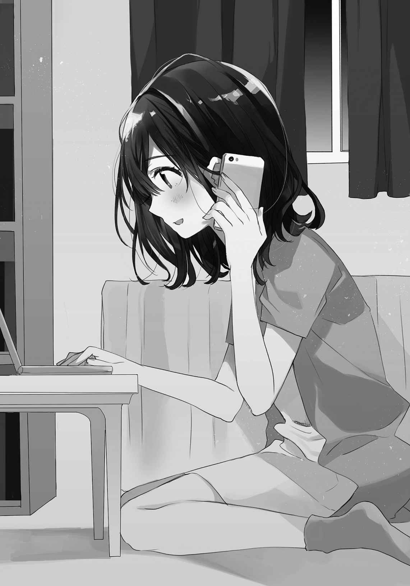 銅像に、ひっかき傷が一つ。痛みはない、けれど塗装は
兄という塗装が、粉になって散る。
打ち合わせは電話だけでなく、出版社のある東京に呼ばれることもあった。日帰りは難しいので泊まりとなり、妹はせかせかと荷物を用意して地下鉄へ向かう。
「大変だな」
楽しそうだなと言いかけてしまうときが、一度あった。
「うん。でもがんばるよ」
がんばりー、と弱々しい二の腕を持ち上げるように腕まくりする。
がんばれと言ったのは俺なので、ただ笑って見送るしかなかった。
そうなると、俺は一人だ。
重力が増して身体が
そういう日は大抵、飯も食べないでずっと横になって朝を迎えた。
妹の弁当も当たり前だがないので、昼になにを食べたかさえ思い出せない。
妹にとってはこの十月あたりから本が出版されるときまで、慌ただしく過ぎていったことだろう。逆に俺は、平面でしかない日常を
そんな月日を重ねて、二月に至る。
月が変わるのと同日、妹のデビュー作がアパートに届く。
作者の元へは発売より十日早く見本誌が届くらしい。横に長い食パンのように
「おぉ……じゃーん！」
深い感動から一転して、妹が本を額の上まで掲げる。かわいらしいイラストの端に、妹の筆名。見慣れたそれが、本の表紙に印刷されていた。それを見たとき、どろりと身体の中心を流れるものがあった。決して愉快な感覚でないそれに沸き立つ胃液を、何度も
「へへー」
妹が無邪気に見せびらかしてくる。ちらちらと、
妹のつけた『秘宝』というタイトルは、本になる際には影も形もなくなっていた。
「よかったな」
自分の喉を通った声にしてはいやに遠く、他人事に思えた。
立ち上がる。妹が、玩具を手にしたような雰囲気のまま見上げてくる。
「にーさん？」
「なぜかお前を見ていて、買い忘れたものを思い出した」
そう言って上着を羽織って、出かける用意をする。
「なじぇ」
「俺にもよく分からないけど」
頭を
妹も後ろにとことことくっついてくる。
「一緒に行く」
「いいよ、外寒いし。すぐ戻ってくるよ」
「えぇー」
「せっかくだし本を楽しんでいなさい」
そう説得して、あくまで一人で外へ出ることに固執した。
外に出ると、
大きい
買うものなんか、なにもなかった。
特に決めたわけではないけれど、足は大学の方向へ向かう。坂となった道を進む度、耳が切れたように鋭い痛みに
それでも足を止めず、大学の前までやってくる。夜遅くはあるが、坂の向こう側に昇り行く日のような
妹を迎えに来るときも上ってはいなかったから、実際に坂に足を下ろすのは何年ぶりだろう。大学は冬から春にかけて休暇が長いせいか、冬に坂を上った印象は薄い。新鮮で、そして気疲れする。
仕事を終えた夜に、上り坂は予想以上に
背中も痛み出して、こりゃあ無理だと
受け身も取らないで後背をアスファルトに打つ。幸い、倒れた方向は下り坂だったのでまず尻を
打った箇所に血が巡る。ざりざり、服を超えて肌に小石や
「妹の本、か」
眠気にも似た困惑は、いくら深呼吸しても晴れることはなかった。
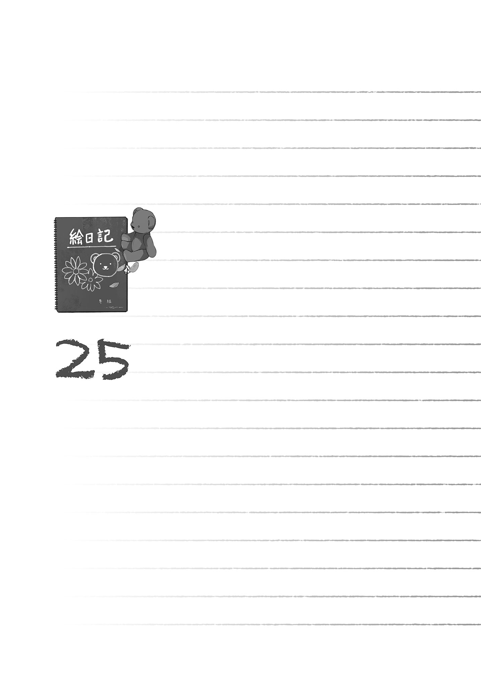鳥は羽を伸ばさず生きていくことに、幸せを感じるだろうか？
生きていけるとしても、
妹がずっと俺の背中に乗る妹であったら、それはある種の才能が開花する芽を
才能が世界を循環して
人間としても、兄としても正しい選択をしたという確信はある。
しかしそれは正しいだけで、俺は失うばかりだ。
正しさが俺を救うわけではなかった。
『やっぱり他の日にしてほしかったなあ』
まだホテルにいる妹が、恐らく足をぶらぶらとさせながらそんなことを言う。
俺は同意したい心境を
「なに言ってんだ、大事な仕事の付き合いだろ？」
寒冬の中、舌までは凍えていない。心境と裏腹に、よく回る。
「社会人っていうのは、こう、そういうのが厳しいんだ。多分」
『なんでちょっと自信なさげなのだろう……』
「気にするな」
大した経験もないのに取り
『にーさん以外の人とご飯食べるの苦手だし……』
妹のぐずるような物言いに、ああ、そうだろうなあと深く感じる。
「慣れていかないとな……」
慰める声は、すっぽ抜けるように力がこもらなかった。
そろそろ出かけないといけない妹を促し、電話を切る。
その電話を投げ出すように床に置きながら、大の字に寝転ぶ。
いつもは狭く感じるアパートの壁に、手足がくっつくことはなかった。
今日は一人きりの誕生日だ。俺のではなく、妹の誕生日である。
二月十四日。妹の本が初めて世に出てから四日後のこととなる。誕生日に本人が不在であるのは初めてだった。妹は最初の本を出した祝い事をするべく東京に呼ばれていた。出たついでに賞を取った同期の会みたいなものにも誘われていて、一応参加してくるとか、なんとか話していた。あの元同僚も出てくるということだろう。
「まぁ、そういうこともあるさ……」
妹だってもう、社会人なのだ。これからは互いの都合がすり合わない日だって訪れる。
誕生日がたまたまそうであった、というだけだった。
「……いや違う……違うな」
だけだった、というのは
喪失感が、疲労と重なって重苦しい。
妹は誕生日だから他の日にしてもらおうと最初言った。
でも仕事だから行った方がいいと説得したのは、俺だった。
たった一日か二日だって思う人もいることだろう。
でも虫食いの跡を見て、げんなりしない人っているんだろうか。
それがたとえ、どれだけ小さくても。
電話に遮られて乾かすのを
部屋で一人寒さに
「慣れるか……」
口に出してみると自分の声ながら嫌なものだった。
他の誰かと一緒にいることに慣れていく妹を、俺は受け入れられるのだろうか。
少し考えれば無理だと分かる。
でももう少し考えてみれば、無理だとしてもいつかは、その現実を直視しなければいけない。
想像すると腹が引きつるように痛い。空腹とストレスに
気持ちが沈んでいくのは晩飯がまだであることも手伝っているだろう。
もうどうにも動けなくなるまで消耗する前に、悪循環を断ち切らないといけない。
やむなく、着替えて外に出ることにした。髪も乾かないまま、財布だけを持って独り行く。
吸いたくもないほど冷えきった夜の空気が、身体の中心へ入り込む。
どうして外になんか出て来てしまったのかと、すぐに後悔した。
雪でも降ってくれれば死にそうになるぐらい
歩く間中、すねのあたりから、自分の身体がほつれていく錯覚を味わう。糸となった肉体が力なく、するすると抜けていくようだ。疲れて、眠くて、腹が減って。三重苦のところに訪れる心労を受け止める余力はなく、自分を保つのが難しくなっていた。
なにかを変えたいわけじゃない。
むしろ、変わってほしくない。
妹しかり、たった三ヶ月の同僚しかり。
夢を
俺には俺の生き方がある。鳥と人は住む高さが違う、そこに優劣はない。
ただ、その生き方の根底が揺らいでいる。今はまだ、小さなほつれ。
だけどそれが次第、次第に広がっていく予感があった。
これからもっと、その差異が大きくなっていく。
明日どころか五分先の未来さえ読めない人間は、しかし漠然とした流れを感じ取ることだけはできるという厄介な生き物だった。自分の身を置く流れに陰りが見える、それぐらいは感じ取れてしまうのだ。いっそもっと愚鈍に、
地下鉄の前を通りすぎて、どこへ行くかも忘れたように歩き続ける。
吐く息が、重く感じられた。
前へ進む度弱っていく。へたれきった心の訴えを、はね
コンビニの前を通ると、チョコレートの絵を
漏れる過剰なほど明るい光に、なぜだか強く打ちのめされて。
最後は息まで切れて、耐えられなくなる。
肉体がほつれて残った本音が、
認めると、俺は。
俺は、弱い妹が好きなんだな。
そして、そんな妹に頼られる自分が大事だ。
なんとも分かりやすかった。
俺が望んでいたのは小説家になった妹ではなく、なろうとする妹を支えるという状況の方だったのだ。
「あああああ」
思わずだらしのない声が漏れて、顔を手で
涙こそこぼれないが、自分への情けなさやらみっともなさやら……
俺は、どこにもいけない。
ここにいるしかない。
そのここにいていい理由が、
そいつを失ったとき、俺になにが残るのだろう。
誰しもに平等に与えられたものを積み重ねることのできなかった、その事実だけか。
時の残骸が、残るばかりだろうか。
そんな風に、後ろ向きな気持ちが逃げるようにして顔を
夜と自動車の匂いが冷たく駆け抜けて、その先。
道路を挟んで向こう側の歩道に、
息を
彼女が、一人で歩いていた。
呼吸も忘れて立ち止まり、見入る。
まるで妹と入れ替わるように訪れるその姿に、出来すぎを覚えた。幻覚かもしれない。何年も会っていないのだ、一目で彼女と分かるのも変な話だ。
そもそも大学を出てから近場に住んでいるのかだって……とにかく、都合がよすぎて。心の隙間でも埋めたくて見た幻であった方が、まだ納得できた。彼女は俺を
追いかけようか？ とずっと考えている。
追いかけてどうするのかは分からない。
でもなにかが満たされるかもしれない。
そんな手前勝手な動機が暴れそうになって。
だけど、もう。
他のものを
自分の道を引き返すことはできなかった。
結局、俺はその幻めいた彼女の姿を無言のまま見送るほかない。
「………………………………………」
誰が言った言葉だったか。
孤独を感じるというのは正常な認識を得たということ。
人間の本質は孤独であると。
でも真理に近づく度に幸福を
人には幸せという錯覚が必要だ。そのために、寄り添って生きるのだ。
そこまでは、誰かが言ったと覚えていた。
誰とも知らない人間の見つけたその真理には、果たして続きがあるのだろうか。
俺は。
俺は。
俺は。
「ま、いいか」
俺は、笑う。
肩を
来年、俺は二十代を終える。
実は
一生を誰かやなにかに
だから妹が楽しそうに笑っているなら大体のことが『ま、いいか』と思えるようになったのも、そういう生き方なのだろう。そしてその
たとえ若さという幻想が失われて、その足が地に着こうとも。
→下巻に続く。
下巻は秋に刊行予定です。
お買い上げ頂きありがとうございました。
今回は「イモとライフ」でしゅか。ライフというぼくのじんしぇいは、やっといちねんをしゅぎたところでしゅが、イモはだいしゅきなのでいっぱいがいいでしゅね。イルマのアニさんもだいしゅきでしゅよ。でッしッし。
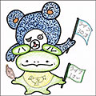イラスト／フライ
東京都在住の漫画家、イラストレーター。漫画、書籍の挿絵、ゲームのキャラクターデザインを中心に活動中。
本書に対するご意見、ご感想をお寄せください。
電撃文庫公式ホームページ 読者アンケートフォーム
http://dengekibunko.jp/
※メニューの「読者アンケート」よりお進みください。
ファンレターあて先
〒102-8584 東京都千代田区富士見1-8-19
アスキー・メディアワークス電撃文庫編集部
「入間人間先生」係
「フライ先生」係
初出
「0～15」／「電撃文庫MAGAZINE Vol.42」（2015年3月号）
「16～18」／「電撃文庫MAGAZINE Vol.43」（2015年5月号）、
「電撃文庫MAGAZINE Vol.44」（2015年7月号）
文庫収録にあたり、加筆、訂正しています。
「19～20」「21～22」「23」「24」「25」は書き下ろしです。
この物語はフィクションです。実在の人物・団体等とは一切関係ありません。

電撃文庫
いもーとらいふ〈上〉
発 行 2016年8月10日
発行者 塚田正晃
発行所 株式会社KADOKAWA
〒102-8177 東京都千代田区富士見2-13-3
03-3238-8745（営業）
http://www.kadokawa.co.jp/
プロデュース アスキー・メディアワークス
〒102-8584 東京都千代田区富士見1-8-19
03-5216-8399（編集）
http://dengekibunko.jp/
本書（電子版）に掲載されているコンテンツ（ソフトウェア／プログラム／データ／情報を含む）の著作権およびその他の権利は、すべて株式会社KADOKAWAおよび正当な権利を有する第三者に帰属しています。
法律の定めがある場合または権利者の明示的な承諾がある場合を除き、これらのコンテンツを複製・転載、改変・編集、翻案・翻訳、放送・出版、公衆送信（送信可能化を含む）・再配信、販売・頒布、貸与等に使用することはできません。
(C)2016 HITOMA IRUMA
※2016年7月9日発行の電撃文庫『いもーとらいふ〈上〉』初版に基づき制作